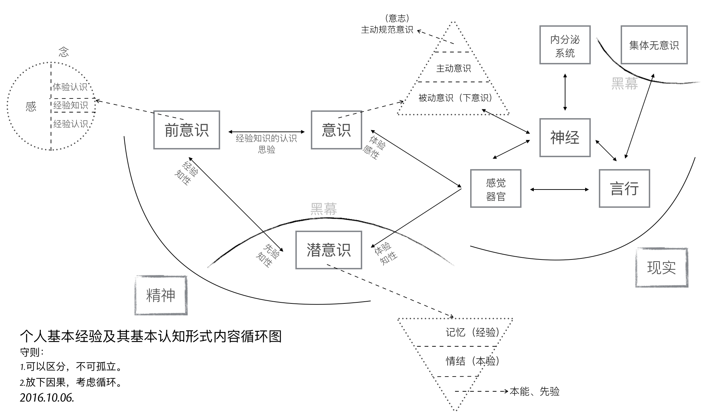

个人基本经验的基本认知
欢迎发邮件与我讨论，邮箱地址：mudand88@icloud.com。
基本的意思就是只谈形式，不谈内容，因此在这所作一切仅是名词的定义和归类以及思维的明晰和训练，没有任何新知。

尽可能早地完成思辨的大厦，然后才开始研究它的基础是否扎实，这是人类理性在思辨中的通常命运。但在这种情况下，各种各样的溢美之辞就被找出来，使我们因大厦的出色而感到安慰，或者还宁可拒绝这样一种迟到的、危险的检验。但是，在建造期间使我们摆脱任何担忧和疑虑并以表面上的缜密迎合我们的，就是这种东西。我们理性的工作的一大部分、也许是最大部分，就在于分析我们关于对象已经拥有的概念。这一工作给我们提供了大量的知识，这些知识虽然无非是对我们的概念中（尽管还是以模糊的方式）思维过的东西作出的澄清和阐明，但至少就形式而言仍被认为如同新的洞识，尽管它们就质料或者内容而言并没有扩展、而是仅仅解析了我们所拥有的概念。
——伊曼努尔·康德
2016.09.06
被动意识的认知缺陷
在我看来被动意识在其相对优越性的基础上有着认知的缺陷，有一个例子可以很好证明这点。我们可以试着想象有一根极细的线，当它一笔画出，我们一看便知它是一根线。而当我们在这条线上再划上一笔，线条被加粗后我们仍旧可以不假思索地说这也是一根线。我们之所以把加粗前和加粗后都同样置于“线”这个名词概念之下，是因为在我们的习惯性认知中线本有粗细之分，而无需刻意判断便可分辨出来，这是被动意识，也是它优越所在。那么问题出在哪里？让我们试着用笔在这条线上不停地划，线条随之加粗，我请问我们知道在确切的某个程度上不再把它形容为“线”，而是形容为“长方形”吗？我们都知道点、线、面、体，当线条被不断加粗后便可以形成一个面，但是怎样程度的粗细算是线，怎样程度的粗细算是面——我们并不能准确说出，它是一个主观概念，唯一知道的是在某个范围之内我们把它称作“线”，超过了这个范围我们把它称作“面”。
这就是我所说的认知缺陷，对感官的任何主观刺激在意识中必有所反映，而刺激量的多少决定了意识的被动还是主动。随着线的加粗（感官的不断刺激）主动意识被调动起来修正认知，正因如此有了点、线、面、体的概念区分，也因为意识从被动到主动的自动转换我们无法知晓在哪个固定的程度上做出区分，我们早已习惯听凭任之。
2016.09.08
体验与经验
- 感觉器官的印象（体验）
- 记忆的印象（经验）
“印象”一词我以为可以分两种：感觉器官的印象和记忆的印象，也可以说是体验与经验。体验是感觉器官与意识之间直接产生的，而经验则需经过潜意识、前意识的过滤才可以进入意识，由此我们可以清楚地看到纯粹的经验论对于实际言行的失败负有相当责任，不该仅仅依赖于它。与此同时，当我们极其自然地靠经验做事，不该就此忽略体验的重要性，体验是修正经验误差的最有力武器。
详细地说，意识与感觉器官的循环在这里应该是意识先有，感觉器官做出反应，然后又通过感觉器官将单独的直接感觉反馈给意识，这是体验。潜意识与感觉器官的关系则是感觉器官发出曾经有过这样的反应与其直接感觉，将这两种记忆一起带入潜意识之中，这是经验。举例说我用手拍桌子，是我意识先想着把手往下放拍桌子，然后我才实际地用手拍桌子，而反馈给我意识的仅仅只是痛觉与桌子本身的坚固（直接感觉），这就是体验。相对应的，感觉器官带入潜意识的则是曾经用手拍过这桌子的记忆，加上拍桌子的痛觉、桌子本身坚固的直接感觉的记忆，这就是经验。
我把体验与经验当作“格物致知”基础中的基础。
2016.09.09
因果恒常结合

在体验、经验的观念与意识三者之间的循环形成了因果关系的“恒常结合”。当我们已有印象的经验变为经验的观念（前意识），经验的观念通过意识的实践，意识的实践通过感官的体验，感官的体验在此进行两种反馈——通过意识直接确认或否定被实践的经验的观念，通过潜意识再次转化为经验。
事情到这里还没有结束，当意识通过直接感觉确认或否定原有的经验的观念以后，新的体验进入前意识世界与旧经验的观念碰撞，一个是因、一个是果，所谓“恒常结合”就是如此？其中细节或许还可以继续推敲，但大致思路应该就是这样。
为什么结合只在前意识世界进行？因为当我们举例子时都是简单的行为，我们看似能很快理清一切头绪，可当事件复杂化，意识的片面性问题、认知缺陷问题就会马上凸显出来，然后我们自己都会承认根本分不清因果，所以结合只在前意识世界。
2016.09.10
两种信

信可以为分为两种，一种是前意识感的心情的相信，一种是前意识念的信念，也可以暂时排出例外将它们形容为被动的相信，主动的信念。何谓信念？信念是有理由的相信，是心智理性的结果。当两个基本念对立起来需要抉择，在主动意识下得出的结果是全新的、独立的，可以依靠与原有念的一种，也可以是二者的融合，不变的是演变后的信念本身带上了理性权衡的结果和权衡的经过——理由。
信念是相信某个念、为什么相信这个念、这个念是什么的集合，而不仅仅只是相信。
信念是观念的一种，观念是念的一部分。
感与念可以区分，不可以独立。
2016.09.11
经验、经验的观念、思验
经验是单一的、多个的、记忆印象的，哪怕怎么类似也没有完全相同的经验。经验的观念是经验的一个集合，放弃了印象的作用，趋于理论化、抽象化，知或不知，对个人而言带有些许感性，对公众而言则是纯粹理性（这种纯粹理性有无意义则是另外一回事了）。
经验告诉你曾经这样做，经验的观念告诉你应该这样做，体验告诉你这样做对或不对，思验告诉你为什么要这样做。
经验通过思验才有经验的观念，不存在思验的观念和体验的观念，我以为“信”的三种情况和两种参考是理解意义上的很好参考。
体验短暂而强烈，经验持续而模糊，思验精确而不定。
前意识到意识的所有活动是思验、经验的，感觉器官到意识的所有活动是体验的，还有一点必需说明，正如昨天形容感和念一样你可以区分它们，你不可以孤立它们。
在我的思考中没有绝对的因或果，只有循环的存在，你可以区分当前的表象的因果，你不能孤立绝对的因或果。（我不确定这样想是对是错，姑且是个建议。当代电脑软件号称人工智能，可以这种人工智能只是因果，没有循环的存在就不配称作智能。）
对思验的考虑
什么是幻想？是类似于判断的一种过程，还是类似经验或观念？我以为它或许是某种“验”，思验？是众多具体循环过程的集合，诸如理性、因果、幻想、逻辑等等。
思验是纯粹的心理活动，无法被经验、体验。思验所表达的能被语言和文字表现出来，而思验本身则无法表现出来，至多只能通过几个特殊概念的字词来形容。这些字词在各个民族中广泛存在，足以说明思验的存在，足以证明它应与体验、经验并列在一起。
没有完全的思验，经验的观念中无法剔除“信”等感性的存在就是思验不完整的最佳证明。
守则第一条：可以区分，不可以孤立。
参考性建议第一条：放弃因果，只有循环。（循环不是孤立的几个联结环之间的循环，而是犹如神经网络般错综复杂的循环。）
为了快速转变思维，守则与建议的确立是必须的，而如果有一天它们被打破，我只会高兴自己的又一次否定，而不是坚持固守它们。
我所说的“被动反射”只与潜意识的记忆层面有关，与情结、本能无关。
2016.09.12
感性、知性、理性
如果没有被动意识人类活不到下一分钟，因此哪怕有认知的缺陷，它也是必不可少的。
主动意识的有限导致否定无法无限次地进行，这也确定了被动意识与主动意识的平衡，不至于相互侵蚀一空。
被动意识的不可排除证明主动意识的有限，主动意识的有限证明信念之中依旧存在被动意识的残余，即前意识感的残余，所以观念之中可以分出信念这个概念。现在的问题是，既然主动意识可以产生信念，那么被动意识凭借的又是什么？毫无疑问它也是前意识念的一种，可到底是哪一种，如何形容它？我至今未能解决这个问题，我怀疑它根本不是经验的观念，而是与其之外另有他物。
被动意识的认知缺陷进一步可以证明主动意识的有限，因为意识作为一个整体始终无法通过主动意识去真正弥补被动意识的这个缺陷。
推到不重建是怀疑，推到之前先新建是否定，否定需要现成的资本。
感性＝直观认识＝体验＝感觉器官到意识这条路
知性＝思想观念＝经验＝感觉器官到潜意识这条路
理性＝思维思考＝思验＝专指前意识到主动和主动规范意识之间
2016.09.13
- 没有什么是单独进行的，体验、经验必须同时进行，哪怕是最基本的生理反应。
- 思验包括了理性的推断和感性的判断，是否仅仅只有这二者还需考虑。
- 意识察觉到的是经验可察觉部分，不可察觉的经验在潜意识中，而不是在前意识中。
- 人能意识到的思验就是思验的全部。
- 精神世界的进步前景在于前意识的认知以及意识的缺陷的弥补，潜意识世界应该留到最后。
- 意识没有办法绕过前意识范围直接思验潜意识，而通过外部论证又逃脱不了意识本身的认知缺陷和潜意识的经验反射，因此在解决意识和前意识问题以前讨论潜意识是无用功，或者至少是片面的。
- 意识是随着人类个体的成长茁壮起来的，不是潜意识要与意识争夺精神空间，而是意识要与潜意识争夺精神空间。
- 感官到潜意识并不是条件的，仅仅只是反射，哪怕“被动”也是一个不准确的形容词。
2016.09.14
对立与矛盾
当体验、经验双方思验地交锋在一起，这便是矛盾的产生——矛盾的一方是体验的确认或否认，矛盾的另一方则是与体验相反观点的经验。人们太偏爱二元论，因为通常情况下人类的认知获取路径便只有这不完整的两条，人们太偏爱总结归一、打破矛盾，因为通常情况下这两条认知获取路径需要同时经过思验的抉择，而结果只能是一种，不花大力气便再难以改进的一种。
从矛盾角度说“信”的三种情况是需要修改的，我没有考虑到经验与体验的碰撞。但如果说经验或体验单独里面两种看似对立的概念也是矛盾，我以为是不合适的，因为它们同源，而同源意味着调和，意味着看似矛盾的双方来自同一观念——它们的对立仅仅只是概念的区分，而矛盾是孤立双方的对抗。
2016.09.15
没有逻辑矛盾才有对立

当我们从经验中提出一个命题，我们会很是自然而然地再从经验中提出一个相反的看法，一个命题两种看法，哪怕是同样出自经验看起来也似乎是矛盾，而不仅仅对立。我在这里考察的是逻辑意义上的矛盾，当我们说时间永恒，我们便涌现出时间不永恒的念头，这两种对时间的不同看法各自都有一大堆理论支撑，而没有一个是在当前体验中得到任何证明的，我们想起时间，仅仅只是经验地想起。就像我们说宇宙有限、无限一样，这不仅仅只是文字游戏地玩弄，它们的背后的的确确有着知性的不同支撑，而它们的终点则是理性地碰撞——矛盾又或对立又或其他？
只有经过经验逻辑矛盾的审查，才有经验的单个观念中复数概念的对立。如太极生阴阳，阴与阳便是对立的；如意识分主动被动，主动与被动便是对立的——这类概念没有逻辑的矛盾，因为我们知道双方无法完全排除任何一方（甚至是相辅相成的），而矛盾最终目的在于消除其中一方（将一个看法的特征单独加于本身观念之上），所以它们通过了逻辑矛盾的审查，变为只是概念区分的对立。
理性不仅仅只是逻辑，感性也不是没有逻辑，只有知性不存在逻辑。
2016.09.16
崇高与美最初步理解
崇高短暂的原因在于失去了体验与经验之间的差距，新的体验已经作为经验的一部分，因此再难以因为体验而崇高，除非经验本身拥有唤醒信念、执念的存在。可就算如此，那时的崇高也不再是眼前的某物，而是心中所想的某物。
美则完全不同，感官世界中体验美的强烈是由唤起心中原有经验的多少决定，体验有多少符合经验，它就能获得多少美感，从这个角度说唤醒个人幻想、梦想的经验将收获最强烈的美感体验。而当现有的美感体验和崇高一样化作经验，美感也不会马上随之消失，因为眼前的事物依旧是符合经验的美的，所以谈到美的时候我们总是说“审美”。
2016.09.17
存在的一点最初步理解
经验与体验同时赋予物质存在，物质才被承认存在，经验知性地赋予，体验感性地赋予。那么理性呢？理性在这里与存在概念无关，因为感性自己已经能够很好地工作，只有在感性无法清晰完全地感知，传入意识之中的内容断断续续、模糊不清时才需要理性地辅助，因此理性对于物质的存在来说至多是辅助性质的，更多时候是无关的。
理性看起来好像可有可无一般，照这个倾向我似乎应该大喊一声“去理性”，可事实上任何事物、任何概念不是你想去就去、说没有就没有的，就我现在而言，存在便是一个只能够模糊感知的对象，我不可避免地运用理性力量。当你知道某物存在，你无需运用理性，感性便能正常工作，可当你想要说明此物的存在，你必须运用理性。好在一个人不用时时刻刻说明什么，理性的缺失实在理所当然。
这样的理解也许还是大逆不道的，但只有当我们更深刻地认识到自己的不足才有可能弥补这些不足，一个连认识都做不到的人没有改进的可能。
2016.09.18
先验知性
什么是经验的经验？一个假设，经验的经验即由感性直接演变而来的知性，即先验知性。它是这样形成的：感官的直接感觉由意识感知到，意识将这个体验带入前意识，感性思验判断之后变成单纯体验的结论，最后前意识将这个结论带入潜意识黑幕之后，而我把这个前意识到潜意识到过程称之为先验知性。在我初步考察后我以为诸如存在、时间、空间等概念就是这样首先形成的，它们最早、也一直有那么一部分属于先验知性。
以为这样就算知道了先验，甚至已经掀开黑幕一角？完全错了，我是经验地晓得先验，我不可能先验地晓得先验，说知道先验那就是个笑话，说掀开黑幕更是无可救药的自大。问题依旧没有完全解决，换一句话说：是什么点亮了这个循环？在潜意识中经验与先验又是经过了怎样的转变？
一个暂时无法更好发明、更恰当应用的例子：我知道眼前的物体一重十斤，一个人走过来告诉我物体一比我从未见过的物体二重两斤，那么我仅凭这句话便知道了物体二重量是八斤。我是怎么知道的？
- 我知道十减二等于八，并能很自然地运用在这里
- 哪怕我从来没有见过物体二，我也能通过名词概念与物体产生认知
- 我相信这个人的话而不是选择费力寻找到物体二并称重它
- 两个毫无关系的物体经验能够通过另一个独立的感官经历被清楚地体验认知，经验并非仅能通过经验认知
2016.09.19
- 体验、经验、思验、本验、先验，这五个“验”构成了个人的认知框架。
- 时间、空间、存在三大概念在子宫里，也就是说在出生以前已经被先验完成，它们最早、也永远有一部分是先验的。
- 人类所能表象的空间已经有三个：二维、三维、四维，这一论断证明空间并非仅仅先验。
- 近现代科学对灵感与大脑的研究证明思验只有在尽可能少的受外界干扰的时候才能发挥作用（无论是我们行为地逃避干扰，还是大脑自身作用屏蔽干扰），日常交际生活我们大多靠着经验知识，即直接从前意识中提取，而不做任何过滤。
- 我昨天显然搞错了，经验的经验是本验而不是先验，但之后的话还是描述先验的，不是本验。昨天的一个问题应该随着本验被提出改为：在潜意识中先验与本验与经验经历了什么过程？
- 我很想说所有的前意识都是经验知识，但对先验的浅显理解让我无法肯定这个命题。
- 依旧支持思验中不仅仅只是理性，也包括了感性。
2016.09.20
先验的一点补充说明
潜意识先验的确立及其完善只在人类极早期（其定义应该以月为单位计算而不是以年为单位）乃至尚未出生的情况下，即意识无法做到很好利用经验知识的前提下——一旦意识的成长达到利用经验知识的地步，潜意识先验就已经完全确立下来，再无变更，剩下的只有思验融合之下的体验与经验，二者皆无法纯粹。当我们说到这里，有一个情况十分值得注意重视，就是当我们成长以后的健全的意识体验遭遇与潜意识先验完善处于相同场景的时候。这种情况十分常见，其实我们都不可能摆脱这些场景的网罗，想想存在、想想空间、想想时间，哪一样是我们可以放弃的，哪一样与先验完善的时候有本质上的不同？没有，因此先验之所以先验，本能之所以本能，是因为它们的的确确再重要没有，再常见没有（它们不是影响我们，可以说它们控制我们）。当它们凌驾于经验之上，一颗强大意志与清晰思验的心也无济于事，因为所以成人。我们可以把先验、把本能（在我看来同是一物）看作劣根、看作局限性的罪魁祸首，可不要忘记是它们最早教会我们什么是世界、什么是自己——你会因为自己的鼻子比狗的鼻子迟钝而割掉自己的鼻子吗？你会因为眼睛的近视而挖掉自己的眼珠吗？你不会，因为你知道这样的你是一个完整的人，少了任何一部分都是残缺。
这种意识体验与先验本身的呼应也许可以让我们一窥先验本身，可它是思验想象的，换句话说它依旧混入了经验，哪怕纯粹的体验我们也已经做不到了。先验的确时刻被我们利用，我们却无法因为它们被利用而回溯到它们本身，它们的认知始终是模糊的、抽象的。
先验的运用范围只是事物的表象，而非事物的本质。事物表象与事物本质的区别我们无法考察，但我们可以先向后退一步，转而询问自己个人表象与本质的区别，然后事情也许有部分进展——显然表象也属于本质，是本质的一部分，你甚至可以说表象是本质的唯一表现途径，因为那个名词本身字义已经把所有的表现包括在了一起，而任何本质想要展示出来只能“表现”。从这一角度看，说一切表象皆为荒谬是不正确的，我们只能说表象有其局限性，我们不能直接武断地说表象没有价值。
2016.09.21
心理治疗与潜意识之间的一个假设
当我在前意识和潜意识之间的那条线上写明“先验知性”的时候，我并没有意识到我将这条心理治疗的通道完全限定死了，也就是说前意识到潜意识如今只有一条路——先验知性，它在我们成长以后就已经完全封死了。我看见过的精神分析学家都说心理治疗的基础是建立在如下基础上的：前意识能够影响潜意识，潜意识能够因为意识的改变而改变。它的确能够改变，只不过这种改变在我们真正需要改变的时候早已无法改变了。那么心理治疗建立在什么基础上呢？我以为它建立在意识到前意识的作用强大于潜意识到前意识的作用，所以被治愈了。它是被战胜的、被征服的，可原先的作用自始至终徘徊在前意识之中，这也更能说明为什么心理治疗最容易复发，它的治疗必须经年累月地观察才能断定。这一假设可以暂时总结如下：
- 潜意识除先验知性以外无法被前意识改变。
- 先验知性在我们成长以后已经无法工作。
- 潜意识到前意识的经验无法消除，它如果希望不被意识察觉并表现出来只能让意识从外界有一个新的体验，作用地把它压倒，而且是持续性地压倒。
- 这一压倒一直到要到与意识体验一同产生的经验经过潜意识、前意识，最后重新被意识察觉，可即便如此最早的那个经验也不是被改变的，是被覆盖的。
- 心理治疗之所以长期是因为这一经验想要达到覆盖的地步，它的第一步就是让体验先行的习惯，而习惯从来不是短期能够形成的，尤其是修正性质的习惯（这时你需要用到的只能是主动规范意识）。
2016.09.22
先验、感、念、思验、意识（被动？），还有太多尚未被发掘。
先验的感
先验的感不是前意识感的全部，它就是我以前说的那个“没有陌生的感”，而之后感的变化则非先验所有。先验的感是单纯的、没有矛盾和纠缠，感的复杂是意识成长以后体验与经验碰撞的结果。这种碰撞引出的一个常见现象就是碰撞以后的感虽然依旧是没有陌生的感（它不可能诞生新品种的感），范围也没有脱离先验网罗，但是碰撞出现了新的组合，将原本互不干涉、互不矛盾的感以不同剂量放在一起，让你有错觉以为前所未有，而事实上你也的确无法理清这堆乱麻了。这一现况直接导致当我们幼年的时候虽然最是单纯，但随着年龄的增长心思越发繁复，情感也越发迷离不清，因为我们无法摆脱体验与经验的矛盾，它们总有碰撞的时候，无论是结合的一体，还是残存下来的碎片。
康德所说的内外感官我以为就是先验的前意识感和感觉器官，先验之与感关系重大，先验的利用很大一部分就是前意识感的使用。
感本于、源于先验，这是我所确信的。
先验的念
我依旧不能肯定有先验的念存在，因为我不知道潜意识中先验到底经历了什么。正如我们考察事物本质与表象一样，在这里我们也应该先退一步，试着提问经验的概念如何产生。当感觉器官通过体验、经验两条途径被认知，体验是实时的，而经验则是滞后的。短暂的体验过后我们开始检查便可发现在经验中其实也有着体验的感觉，只是这种感觉是抽象的、记忆的——经验无法做到再次让我们亲身体验，它只是做到让我们记得曾经有这种感觉。在这里我必须说记忆本身就是概念化的，它与我们所谓的思想、理论区别只在于广泛性、纠错性的多少。
先验与经验就这一形式而言我以为没有分别，因此我们可以看到当先验知性第一次将其带入潜意识，它不能做到再次让我们的感觉器官有一次完全相同的体验，甚至做不到让我们的意识能够再次主动地察觉到它。因此先验必须被概念化，体验时效性的局限迫使先验没有第二个选择。
如果我继续这样思考下去，那么潜意识也将变得和前意识在性质上没什么分别，它们都是一个大仓库（黑幕的仓库），而不是什么思想的发源、动力的基础，它仅仅只是一个不为我所知的储藏记忆、情结、本能的空间。而相应的，先验的念的产生是意识体验与思验单独结合的结果，在前意识中先验已经被概念化，并且留下了先验的感（即没有陌生的感、基础的感），只让先验的念通过先验知性进入潜意识，成为潜意识的第一块基石，也是在这块基石之上本验、经验得以成长、健全。
当我们事后试图在前意识中寻找先验的念，我们注定一无所获，因为前意识中根本没有了先验的念，先验的念早在潜意识中化为基石，当它再次浮现出来，唯有经验。
2016.09.23
真正的本能所在
如果我将先验放在原来本能的位置，那么不仅仅意味着代替了它的位置，更是代替了它原有的概念（又或浑然为一物），我等于在承认人类只能通过外界才有最初的认知，人类自身则是一无所有的——可是实际情况并非如此，我们看见当我们从精子卵子的结合开始，人类自身就在孕育着什么。我们是有了生理的基础，然后才开始对外界的认知，而不是经过外界认知才从某处虚无钻出人形。因此，我请问我们真正的本能是什么？它如果不是先验，它还能够是什么？在这里必须首先承认人类是有生理基础才有心理基础，而不是有了心理基础才有生理基础。如果说生理的基础是襁褓之中的孕育，心理的基础是先验的存在，那么从生理的基础进化出心理的基础（也就是我们通常描述的生命的赋予）——它的这个过程的具体内容就是真正的本能，而它准确的说并非传统意义上的心理、精神。
所以我们看见弗洛伊德在《超越快乐原则》中修正自己本能学说的方法和基础是建立在生物学上的，是从有机物和无机物的理论推论出生与死两个本能。
2016.09.24
经验、经验知识
记忆是加工的，经验是修正的，这两个名词都是主观的，它们的完成则是在潜意识中已经完成的。为什么我们的经验都是主观的？是的，一个很大的原因是因为经验是抽象的，所以它必须是主观的，可除此之外还有着更大的原因：经验在从潜意识中浮现出来以前必须经过先验、本验的修正，或者说补充、或者说取舍——因此它必然是主观的。
当经验经过这一系列修改终于进入前意识并希望得到意识察觉，它这时候还不是什么“知识”，因此唯一的通道是感性思验，与一切先验地被利用一样经验携带上了大量感的心情的相信感性思验地进入意识。意识经验地现实运用产生新的类似的联结的体验，它的第一客观判断与经验原有的主观印象和在了一起，这时候思验趋向理性，在不纯粹理性思验的推断之下经验得以成为经验知识（也就是以前说的经验的观念），并储藏在前意识中等待意识下一次的直接运用。
我们可以清楚看见经验第一次浮现在前意识中时，它受到先验、本验的绝大影响，所以它能够携带大量的感的心情的相信。可是当经验与体验实践结合之后它便不再是经验本身，转而成为不成熟的经验知识，它的再次运用也将是相对而言更多程度上的知识运用。在这里主观影响的确随之减弱，可仅仅只是减弱，要问能否无限减弱直至消失主观影响力这一问题，它和一切有限、无限问题一样无解，另外还有一个几乎可以断定的事实反对这一问题的无限可能性，那便是意识与思验并非无限，而意识和思验是客观修改的资本所在。
经验知识、可接受的经验在前意识中，潜意识中只有不被接受的经验、本验和先验，这一点和我二十一号做出的那个假设是相通的，它是一层层覆盖的。
古人云“格物致知”，显然已经把上述经验知识的过程早说明透彻了。
意识无法单个的、专注于某处的运用，它的运用是将我之前所提出的所有概念同时性的、无时无刻地运用，任何一个概念都做不到放弃。正因如此，意识在表面看来有着极其高度的统一性，一种声音一种行动，哪怕其自身的三个分类也只能是概念上区分，而做不到彼此划清界线（守则一）。综合与分析（或者类似意义的其他字眼），这正是我们思维所惯用的方法，正是我们意识所本有的功能。
格物致知是将原本综合的统一的意识、思维打散，它是分析的（正如我这些天所做的一样）。而当它打散、分析到一定程度的时候便需要新的综合，所以我们看见格物致知下一步是意诚心正，意诚心正就是分析之后再一次的综合，将原本综合而后分析的概念再次综合在新的分析成果的基础之上——然后我们才有尝试修身齐家的可能。
2016.09.25
幻想与联想
幻想能力脱胎于联想能力，联想能力脱胎于记忆。幻想能力是感性思验。
幻想的每一个事物都是现实所有的，但它通常给人不可思议的感觉，甚至是荒谬的感觉，幻想似乎通常意味着现实所没有，乃是纯粹人类伟大想象力的杰作。我必须说这是人类自大的一个典型表现，我们通常高估了自己思验的能力，而低估了现实与人类之间联结的程度。联想，或者说联结，在我们的认知偏差已成常见事实（比如我们经常将一个人的东西误以为另一个人的）的记忆系统里面是天然的繁殖地——当我们问为什么天空能放闪电而我们自己却无法释放闪电，当我们问为什么鸟能飞而马却不能飞，当我们问为什么那个朝代是这样习俗而这个朝代却是另一种习俗——我们的询问将这些原本看似毫不相干的事物联系在一起，然后便开始进一步在思验中实现自己的询问，这便是最简单的幻想，而一个专业幻想家绝非仅仅询问那么简单，等到幻想成品的出现甚至可能连他自己都不清楚具体的多种的联想。在这里询问便开始转向对潜意识的探索、对平日里毫不重视的前意识念的探索，我们甚至可以说对于每一个幻想家而言都是只针对自己的心理学家，都是杰出的心理探索者，可即便如此所有的探索依旧是经验的，而经验是有着现实表象基础的（无论是书本还是生活）。
最早的幻想也许可以追溯到远古时代，幻想也就是荣格笔下的原型，可即便是原型也有着现实基础与心理基础（记忆能力、联想能力）。当远古人对着日出日落生出膜拜心理，又或对着某种动物、某种植物生出图腾心理，他们便是将膜拜物与自己记忆中的某些事物联系在一起并认定了这种联系，然后才有膜拜与后来的原型概念——直到后来人们甚至已经淡忘了当初联系在一起的具体意义，而只记得联系本身和膜拜物（其性质与我们面对幻想感觉到惊异相同）。
幻想的另一个表现形式是猜测，或者说是假设，它们也属于幻想，也是我们询问的一个解决方案，趋于合理的、相对理性化的解决方案。可是无论是猜测，还是假设，它们都是感性思验，这意味着解决手段不是客观论证、也不是主观推断，它的解决首先是选择一种让我们更容易相信的经验的（而非经验知识）方案。
没有先验的幻想，可当我说幻想受控于现实的时候，我其实在说幻想受控于先验的表象的现实，因为幻想的记忆来源受控于先验，幻想的感觉来源最早产生先验。
2016.09.26
先验的存在就是隔阂
我把存在独立于空间、时间之外，因为在我看来空间、时间是世界性质的概念，而存在是个人性质的概念。什么是先验的存在？先验的存在就是在个人与世界之间划出一道界线，而不是融入世界，个人和世界的隔阂就是先验的存在。这个隔阂不仅仅只是个人意识的存在，当我们在为自己只能看到世界表象而不能看见世界本质而遗憾的时候，我们没能进一步庆幸在分清表象与本质的时候隔阂是鲜明的，我是存在的，而当世界在眼中只有本质的时候隔阂是没有的，我是不存在的——我即世界，世界即我。
放下十二种具体范畴不讨论，康德笔下的“范畴”就是隔阂的具体表现。
当初笛卡尔认为动物是机械，并进一步提出著名的“我思故我在”，是在他看来人类的思考（或者说思维、思验）是人类与世界相分离的唯一凭借，而他看不出动物是怎么思考的。相传他每次旅行都会随身携带一个小箱子，里面放着一个女机器人，之所以这般形影不离便是为了提醒自己与机械的区别，否则人类个体便是世界概念下的一小部分，人与机械一样是没有独立个体存在的。我妄测正因如此笛卡尔才一边强调实验科学，为了认知世界，而另一边强调唯心思考，为了个体存在。
说到底“世界”这个概念本身就是隔阂的最好证明，我们现在也许可以很坦然地说我们是世界的渺小一部分，可我们却言不由衷地将彼此区别对待，如果我们是世界本质上的一部分我们为什么还需要花大把精力凭借各种手段去认知它？并且这个认知还是建立在科学明显的进步的基础上的，我从没看见一个两千年以前的人就比一个现代人有智力上的差别——我看见的是科学领域日新月异，哲学领域日久长新。
2016.09.27
思验作为一个整体
幻想、想象、假设，看起来似乎都是同一个概念，但相互之间有着细节上的差别，其用途也有着根本性的不同。他们的相同之处在于都是调用经验的，都是受控于先验的，都是利用联想能力的。他们的不同之处在于：幻想是无视经验合理性的，是有了联想之后便可以重组成型，所重视的也只是进一步增多联想事物；想象是完全基于经验合理性的，联想在这里只是最基本的构造作用（类似于建筑工），所重视的是与经验记忆之下的现实最大程度上的复刻；假设不可避免的将经验合理性作为参考（它希望摆脱合理性的囚笼，但它的用途限制它必须更多地符合经验），联想则是其可能性的审阅工具，所重视的是在经验与联想之间得到一个尽可能完善的妥协方案。
无论幻想、想象、假设，它们在成品之前首先是在思验中形成了一个模型，这就是思验图型，而这个图型是思验作为一个整体形成的。思验作为一个整体，其表现是思验图型，而思验图型是经验知识产生的必需品。我在十九号的时候说思验只有在尽可能不受外界干扰的情况下才能产生，它所产生的就是思验图型，哪怕当前外界有着一模一样的某物，知识被发掘之前必然先下意识地忽略掉这个现实的事物，然后在思验中模拟出一个复刻的事物（思验图型）。如果我们发现思验的同时并没有将现实表象的事物忽略，那也一定是你的复刻被认为是不完备（无法进行下去），所以才需要进一步的客观观察。我不禁对此好奇，既然眼前已经有了一个现实的事物，为什么我们还需要在思想中重建它才可能有进一步地理解？
人的认知途径有两条，体验与经验，而唯一能够将两条认知途径结合在一起而不各行其事的只有一条途径，思验。我们的体验产生一个认识，我们的经验产生一个认识，这两种认识都是从外界来的，可当它们尝试结合，思验却做不到跳出这两条认知途径之外再次从外界得到认识。思验是纯粹心理的，它想将二者结合并进一步得到全新或革新的判断就只能借助于进一步得到新的认识，因此我们看到思验的解决方案就是在其内部重新复刻一个，然后它就无需计较外界认识，它自己就能内部认识了——这就是思验图型必需的原因所在。
康德的外感官和内感官可以和上述文字比较理解，但我必须说明内感官并不是思验图型，它是内感官的作用目标，正如外感官不代表外界认识一样。我依旧坚持以前的看法，内感官就是前意识感，外感官就是感觉器官，而感受与感觉则是其各自的形容词。
2016.09.28
思验的初步分析
思验是理性与感性，并且在经验、体验结合的前提下产生经验知识，在先天体验的前提下产生先验。
思验形式的分析
- 计算
- 数、图、维
- 逻辑
- 公理、辩证、循环
- 联想
- 类比、假设、幻想
- 认识
- 实质、表体、抽象
这是照着康德的“范畴”暂时性列出来的，我不认为这就是它的结论，因为康德的“范畴”目的在于限制可能性，而我的“形式”目的在于尽可能列举可能性。也许有观点认为当列举尽了可能性就等于是限制了可能性，但对此我还不敢确定它到底是圈养的、还是放养的，这是急需确认但也不是短时间能够证明的问题。
- 公理这个词或许还是不准确的，但一时间找不出更好的词来表达，因为严格的说并没有什么是可以与辩证相对应的，它本身所表达的就含有中庸之意。
- 公理不是真理，但在生活中却被当做真理运用，因此它不含有相容的意思，也没有反方的意思。而之所以使用公理不使用真理，是因为在我看来没有真理的，正如我认为没有绝对一样，公理已经是最大的肯定了。
- 哪怕先验也因辩证才得以表现，作为辩证的另一方——经验是必不可少的。
- 我没使用“想象”而选择使用“类比”，因为“类比”作为规律的一种显然范围更广大一些，并非所有固定联结都是想象的。
- 质、体、象，对此斟酌了好久，我以为这三个字所表达的认识是较为准确的。我绝不因追求文字的对称而牺牲本义，文字的优美在这里一无是处，文字的准确才是至上原则。
- 如果实质概念在思想上得不到进一步拓展，那么我们也许应该把视线转向科学，然后便可以发现所谓实质就是分子、原子、中子、质子、量子等等微观世界粒子，现实表体的改变不会对它们造成本身结构和数量上的影响。只是有一点还需要说明的是，哪怕从科学上说实质概念依旧没能做到完整解答，我们并没有晓得微观世界的一切。
- 我做不到跟上康德的思维，所以那个有关圈养还是放养的问题虽然看起来愚蠢但却是必须的，当这样尝试去做，我至少能够试着跟上他的某几个思考。
2016.09.29
直觉与知觉
直觉与知觉的定义牵涉到预判与判断、经验与经验知识。
闹钟为例。我今天晚上用手机设置了一个明天早上六点钟的闹钟，然后我便知道在明天早上的六点钟手机闹钟会把我叫醒，我是怎么知道的？很显然，我所知道的叫醒事件是一个预判，在当前时间还未达到指定时间之前我预先知道，所凭借的不是什么知识，而是经验。因为一直以来我所设定的闹钟都按照一直以来我所已知的经验发生，我的经验便从一开始的生疏到后来的习以为常，它并不需要成为什么知识，它只需要我们感性的认识（感性思验）每次都得出相同的结论，直到最后成为一个几乎定论的预判，而这便是直觉。
我知道的“叫醒事件”是一个预判的直觉，而我又如何做到用手机设置闹钟并指定时间的呢？使用手机也是一个日常行为，可它与上述预判却有着明显的区别，因为每一个使用手机的人必须经历一段学习的过程，而这个过程却不是我们经验本身所能做到的，它必须是经验知识。而且从另一方面说使用手机也不是什么预判行为，它是实时发生的事件，是在当前时间对当前所专注的事物的每步操作并予以明确清晰的认识，它是判断的。我的学习过程让经验再次与体验一起经历思验作为一个整体的内部认识并随后成为经验知识，然后才绕过思验直接让意识利用它（又或因体验失败再次回到上述过程），对这一经验知识反复利用最后成为具有习惯性公理的判断，这就是知觉。
这里所说的直觉和知觉都具有明确的认识，可惜并非每种场景之下都能有大量重复让你得出这样的明确认识，我们经常会遇到忐忑不安、犹豫不定的情况，而在这些情况下直觉与知觉却依旧存在，它们没有了这样清晰的认识又能以怎样的形式存在？我们忽略了前意识感的力量。直觉因为本身是经验的产物，而经验本身因为潜意识的过滤是带有明显的感的相信，相信通常会进一步演变为预判附带的冲动，这一预判的冲动等于是在我们决策摇摆的情况下加入了一记强心剂。而知觉因为经验知识的存在才能进一步演变为习惯性公理的判断，哪怕当前情况与你所认为的习惯性公理有出入，思验自身也会通过类比手段暂时盖过因意义出入所带来的质疑性质的不安（这样的暂时可能直到体验遭遇足够强烈反馈为止），类比能力在这里也与直觉的预判冲动一样是一记强心剂。这两种强心剂都是促使你按照直觉或知觉行事，哪怕所对应的直觉或知觉本身也是不成熟的。
一个小小的闹钟里面都能分出直觉和知觉，而不能单凭任何一方行事，因此第一守则在这里依旧是通行的。我想起了那个著名的“厌新症”，它原本只是针对原始人的，可对现代和历史的考察让我们不得不得出结论这是人类的通病，而因这个通病人类所已付出的代价早不是文字能承载的，由此或许可以一窥直觉与知觉的强度。
既然直觉与知觉强度如此之大，那么我们还应该再问一个问题，什么不是直觉或知觉，什么能脱离它们掌控？无论是先知的预判还是结果的判断都受控于先验，因此首先一点就是先验掌控直觉和知觉。另外无论是经验的实践还是经验知识的产生是受理性检验的，而理性只要被足够意识到便能够做到不受直觉和知觉掌控。最后直觉和知觉所下结论还受意志（也就是位于“意识金字塔”顶端的“主动规范意识”）影响，而我虽对意志理解不深却也知道当某个结论严重违反社会伦理或者个人主导思想的时候是能够做到强行控制的（除非另有他力颠覆这一控制，这也是很常见的）。
直观并非直觉，直观是器官的体验所带来对意识明显刺激所表现出来的客观感觉，直觉是从潜意识中浮现的经验所带来的大量感的相信所表现出来的主观感受。
在一般书籍中我们还将知觉、感知、直观这三个词混用在了一起，甚至将它们都应用于表示感觉器官的感性体验的认识，这是一个错误。直观是表达感觉客观性的名词，感知是表达意识理解感性体验认识的名词，而知觉与感觉器官的唯一联系是因为经验知识必须依赖于体验，并在今后的知觉实践中依赖于体验反馈与知识本身的符合（因为习惯性公理所附带的准确性我们才把这些名词混搅，而没有做出区分）。
2016.09.30
认识与知识浅述
在这里只对认识与知识做出最粗浅的看法，甚至不是哲学层次的理解，它唯一的用处只是预防今后的日记里面不把两个词混搅使用。
体验和经验本身是认识，而只有体验作为纯粹个体的认识经历思验整体才能形成先验知识，体验和经验结合在一起经历思验整体才能形成经验知识。我们可以看到无论是先验知识、还是经验知识，它们所必须经历的一个过程就是思验作为一个整体的过程，我已经无法考察先验知识的具体情况，因此在这里只能就经验知识对这个概念简述一番。
认识产生知识，知识进而产生认识，感觉器官的固有并不能阻碍体验认识的改变，从这个意义上说我们并不能确定此刻我们的体验和当初产生先验的体验是一样的，这也是在后天条件下企图了解先验的一大障碍。
就文字命题来说，认识与知识的区别可以简单地从以下几方面区分开来：
- 用词的肯定程度。对一个命题来说“是”、“不是”与“可能”、“好像”在理解上是完全不同的，知识的命题不该有任何含糊字眼，纵使辩证的相容也必然列出足以让人信服的清楚说明。而认识则不必严格服从这一原则，它所需要做到的只是让命题本身成立，不会自相矛盾即可。因此，你不可以说只有知识才会用词的肯定，你可以说只有认识才会用词模糊。
- 应用的广泛程度。命题服务于应用，无论认识命题，还是知识命题。比如看见一条线，我说“两点成一线”，这一知识命题应用的范围并不局限于当前眼中的这一条线，它适用于所有有关线概念的应用；而同一时间我说“这是一条线”，这一认识命题（即使它也一样是明确的）却有着极度狭隘的局限，它所唯一的应用只是说明眼前的图像就是一条线。
- 文义的指导作用。认识命题因其上述所言的局限性导致它只能够是对某事某物的一个结论性质的命题，而它的唯一指导作用只在于让你对这件事情或这个物体有一个大概的理解。知识命题则截然不同，它并不一定就是结论的描述，它可以向你展示一个完整的步骤，就好像有一个现场的教师亲自指点你的行为一样，知识命题在让你有更深层次理解的同时也会让你如何更有效率地行动。
- 时间的有效作用。认识命题无论是经验、还是体验，它获取认识的来源只是时间概念上的一点，脱离指定的时间它的有效性便开始减弱（除非像直觉的形成一样不停有新的填充进来），从怀疑论角度说甚至是荡然无存的。知识命题则没有这个顾虑，要么它是公理性质的，对现实来说时间有效性长期保持，要么它是命题本身已经限制好时间段的，在这一时间段里面有效性依旧得以保持。
2016.10.01
存在与不在
固有均是综合的，暂有均是分析的，存在有关固有都经不起思验分析将其改成暂有，存在有关暂有都经不起思验综合将其改成固有。所谓思验综合不是其他，就是思验整体；所谓思验分析不是其他，就是思验形式。
对于实质而言，事物实质概念本身的确是固有的，但当我们试图确定概念的形式（无论是字词的形容，还是行为的证明）它便是暂有的，因为形式代表着复数的分析内容。对于表体而言也有着相应的概念与形式，我们会发现固有和暂有与实质和表体之间并没有什么直接的特殊联系。
经典的综合通常会被笼统地归于时间和空间，除此以外便是存在本身，它们都是先验不假；经典的分析则因显象的繁多而有着无数经验、体验，是繁多本性让暂有在有了足够的说服力同时怀疑之声也不绝于耳，分析资本亦从此而来。正因如此，我可以大胆说：“存在的固有与暂有都只是认识，随所针对的事物的思验方法的改变而改变，问题只在存在的固有与暂有做为一种认识，它是产生知识的认识，还是知识产生的认识。”
当我们试图更深入一层看清已经显现在眼前的结论，我们会发现这其实是在描述经验的存在的某一部分。先验的存在只是隔阂的区分，那么经验后的存在呢？经验因其本性的繁杂，所以我不认为它和先验一样一个概念一种应用，它是有着多种形式、多种功能的。当固有和暂有成为一种认识，先验的存在并不能做到直接用这样的字眼去形容事物，因此这一认识必然是后天形成的，这一认识也必然是属于体验或者经验的，我就此是否能说经验的存在做为一种经验知识的一种形式就是存在与不在？
并非暂有就只是不在，暂有也有其存在，无论时间概念还是空间概念都有最小的单位容纳其存在；并非固有就只是存在，固有也有其不在，无论体验认识还是经验认识都有现实的忽略怀疑其不在。暂有和固有只能是存在和不在作为一种经验知识形式产生的认识，而存在和不在才是脱胎自先验的存在的存在。
2016.10.02
日常经验因果关系认知浅述
我们做不到在结果发生之前便把原因发现，也只有在结果发生以后原因才得以成立（虽然从实际考虑做为原因身份的事物必然在结果之前就已经存在，但它做为原因的身份是只有在结果成立以后才拥有的），因此原因与结果的察觉是认识，而只有在证实这种因果联结的常规性、必然性以后才能被称为知识，即公理。
从时间概念上说因果不可能出自同一时间，所以原因必然只能是经验或者经验的衍生物，结果则可能是体验或者比原因经验在“时间线”上更接近我们当前时间的经验。让我们暂时把原因设为经验 A，结果设为体验或经验 B，然后开始进一步叙述。原因 A 与结果 B 就内容本身与其他一切认知一样是在思验中得到发展的，它们主要所依赖的不是联想的类比、不是逻辑的循环，而是联想的假设，因为因果关系是我们人类附加上去的，而不是原因 A 或者结果 B 本身所拥有的，无论就实质或者表体乃至抽象而言都是如此。在我看来因果关系是在原因 A 和结果 B 之外另设一“念”，然后才利用它将二者结合起来，它的确也运用理性能力，但正如之前描述假设时候所说的一样，因果关系也只是一个对复数联想事物的解答具体联想关系的合理性妥协方案。
那么因果关系所谓的另设一“念”，这个“念”究竟是什么呢？你不能简单的把它形容为一种纯粹的思验能力，因为因果关系所产生的“念”是一种认识，它是一种由经验知识产生的有关原因 A 和结果 B 之间具体关系的认识，而作为这个认识的根本的经验知识则是脱离具体因果内容的因果律本身（一个公理的运用不一定也是公理，因为部分公理是本身已经脱离了显象的钳制而成为钳制显象认知的工具，所以我们看到因果律作为一个公理，它的运用则只能采用假设的方式得以表现）。
如果还要继续问下去，请问因果律作为经验知识，它的来源认识又在哪里？就和前几天日记的困惑一样，我只能用同样的笼统认识回答：“因果律的来源认识来自先验，来自从我们出生开始身边人一直以来的行为习惯、语言习惯，我们甚至自己教育的时候也最爱说因为什么所以什么──我分不清具体某个最早的来源，我只能说循环，正如守则二所说一般。”
如果我们不承认因果律的应用是在原因 A 和结果 B 本身之外建立新的认识将其联结，那末我们就需要承认另外一个更难以接受的事实，那就是原因 A 和结果 B 本身就有因果的认识，当前因已定后果必至，即我们常说的“命运”，而这个“命运”哪怕不是人有意去算也是潜意识算，所谓“天算”。
2016.10.03
本验假设
本验之所以难以确定，甚至难以理解，是因为它夹在先验与经验之间，而没有任何清晰界线或知识告诉我们它们的区别在哪里。我们晓得经验，因为它最容易被认识；我们晓得先验，因为只要我们仔细慎思总能察觉到它的无处不在；可是有那么一个思考说经验与先验之中还有着本验的中介，我们怎么可能在黑幕的潜意识世界里指定它的方位。至少我做不到这点，在黑幕问题上钻牛角尖是一条死路，可如果不钻这个牛角尖的话那么即使我们有了一个全新的看似可信的结论，它到底也只是假设，而不是真实。
就像外界体验所得先验携带的感被留在前意识中成为前意识感，只有纯粹的先验认识进入潜意识成为先验知识一样，经验所携带的感也被留在潜意识中成为潜意识的感，只有纯粹的经验认识部分进入前意识，而这个潜意识感不是其他，就是名为情结的本验。
我们被认为当先验第一次从体验中产生它是感性认识到的，可我们是否设想过当先验被利用的时候它也是感性认识到的？我们被认为经验的知性是理性独一无二的产物而体验却被长期认为是暂时的、无关紧要的，可我们是否设想过经验与体验的来源是相同的，为什么它们却有这样的差别，难道不是经验被认识的之前已经和先验一样将感单独留存在某处，然后才浮现出来被认为知性？在心理学中有精神分裂的专业表述，它就像是我们自我意识之外还有着独立的潜伏意识一样，因此心理学家将“情结”归类给潜意识并形容它是记忆的碎片、片断的人格，可是是否应该再问一句为什么潜意识中记忆会将碎片地演变为它物，甚至形成自己的人格？我在许多这样的疑问中寻找答案，然后我便作出这个假设，把它理解成潜意识的感。
我这样假设还有一个论点支持，就是任何知识的运用都逃不开感的支持，因为运用代表着在选择中排除其他一切而只是选择一点，它本身就是一种信念。先验知识是潜意识的底层，它的利用在我看来和经验知识性质上是没有区别的，因此它必然有着潜意识感（即本验、情结）的存在做为支持，然后才能在无数经验记忆中选择并且填充进入自己的内容。
2016.10.04
分析的理性
我们好奇于什么是理性，是控制我们冲动的能力，又或我们智慧的代言……等等一系列通常是赞美的言辞将理性奉为人类独有的产物，甚至有专门的词语将理性与我们所处的世界挂钩，所谓“理性时代”。可究竟什么是理性，是知识产生理性，还是理性产生知识？在我看来是知性产生了理性，更准确说是经验知性产生思验的理性。
在解释理性之前必须首先区分知识与知性，知识是概念，知性是能力，它们根本不是同一个事物，甚至相互之间到底有着什么联系也需要在最后才能得到一个看似可信的解释。
想对理性有所解释还是需要从先验说起，是体验认识第一次通过思验产生了先验，并在前意识中分为先验的感和先验的念，可是当我们说通过思验的时候，思验是作为一个什么形态产生先验的呢？我从未说清，可我敢说此时的思验根本没有什么形式，它只能是一个整体，是以综合整体的形态产生了综合整体概念的先验，换句话说正因为思验此时不存在形式的分析所以先验也从未被直接分析。这一情况直到经验产生也没有任何改变，思验至始至终都是一个整体，可等到经验认识真的开始在前意识中不停浮现，经验知性将不得不迫使思验进一步改善。你无法通过一个整体的思验单独面对无数的经验认识，你也无法通过一个整体的思验单独面对无数的体验认识，因此经验知性让你有了选择的可能，是经验知性试图将思验剖开，让思验不再只是整体，而是可以部分的存在──形式分析的存在。
可这一切与理性又有什么关系呢？如果没有特殊的个案，大概人们都不会否认理性能力的特征就是分析，并且是知性地对某事某物具有针对性的分析，正因如此它属于思验，在我看来也是思验分析的同义词。当世界的认识开始涌入，你不能只是和先验一样笼统地归结在一起，你需要去分析它、认知它，理性所做所为便是如此。
此时再回到之前知识与知性的问题，答案似乎也已经明确：是经验知性产生思验理性，是思验理性产生经验知识，知性与知识之间相隔着名为理性的思验能力，并无时不刻受控于名为感性的思验能力。
2016.10.05
先验牢笼之外
九月八号的日记里我第一次将认识划分为经验和体验，并就此强调体验的重要性，可体验到底有多少重要，我并未给出一个直观的例子说明，直到今天我以为自己已经找到一个强有力的例子证明体验的重要及其强有力足以脱离先验，它是先验之母，因此它有可能在先验牢笼之外。
想想我们对以太的认识，那时候的我们坚信以太无所不在，充斥宇宙每一个角落，也是电磁波得以传输的凭借。为什么会有这样的认识？从亚里士多德开始到十九世纪的物理学家，以太虽然内容上改头换脸多次可其概念从来没变？因为我们生活的环境就是充斥着各种物质，马德堡半球的著名实验虽然在十七世纪已经做出，可那只是被认为证明了大气气压，在我们的先验中从来没有“真空”的存在，即没有没有物质的空间的存在。所以经验告诉我们哪怕无法指证，天空之上、宇宙之中也必然充斥着名为以太的存在，它是各种波的传播介质。可是科学实验终究不会受控于经验，而科学实验也最终告诉我们以太是不存在的，哪怕我们生活的空间里、哪怕我们的先验里没有真空概念，真空也的的确确存在的，无论光波、还是电磁波也不需以太才能传播，宇宙的真空世界之中它也能传播。
数学上的四维概念也是一个有趣的例子，哪怕将四维的方程式或者将软件模拟出来的四维在三维的投影放在眼前，也不是所有人都能理解看懂（至少我就看不懂），可并没有一个人去怀疑它的存在，因为我们知道四维已经被证明了，即便在我们的先验中没有它的存在我们依旧能靠思验去感知它的存在──这一感知的认识来源不是其他，正是靠数学体验。
当我们因此自豪于体验的伟大，庆幸于终于有先验牢笼之外的存在，我们也不该就此轻视了这两个看似矛盾的交锋的另一方，就是先验对我们每一个人无时不刻的影响。依旧拿以太当例子，即使在今天我们虽然已经可以毫不犹豫地将以太斥为歪论，可我们却已经在不知情地情况下继承了许多以太概念，我们的确放弃了作为物质存在的以太，我们从没能放弃作为精神存在的以太──我们再一次断言不存在绝对空虚意义上的真空。
2016.10.06
日常情感浅述
情的循环：言行→感觉器官→潜意识记忆→前意识感/念→感性思验→主动意识→感觉器官→言行……
- 在潜意识中记忆首先剥离感的部分，然后才被本验修改补正（对于本验的具体修改内容依旧无法确定，我不能说我意识之所好就是本验之所好，所以我只能确定一点，它的确用于修改补正）。
- 前意识念中包括着体验认识、经验认识、经验知识，它们在单独对象上不一定被一起运用，须由实情而定。
- 前意识经验认识只是经验知性的认识，即与对象的行为记忆，而不携带任何原本的感。
- 当感试图有所表达只能通过感性思验，它无法通过一个整体的思验去表达，因此感情至始至终都是主观冲动的产物。
- 循环让情有进一步发展的可能（无论发展是否随心所欲），一个言行的作用力必然被今后言行所利用，从局部看它的确是因果的，可如果进一步深究那么只有那个初见的情才是唯一的因，而只有死亡才是唯一的果，这样的因果并无任何意义。
感的组成：先验的基本感+前意识的组合感+体验认识的感+经验认识+思验整体的判断。
- 在前意识中感是被过去的经历重新组合起来的，它逃不出先验的基本感范围，可是它从内容上说也再不等于先验的基本感。
- 体验认识的感通常因触觉而起，又或因生理反应而起。
- 对单独对象的感的深刻和纯粹是思验整体判断的证明，正因为有思验将各方整合在一起，然后才有前后如一、从始至终的感（其判断结果就是感性思验最优先的凭借）。而从另一方面叙述，对任何单独对象的感之所以能够深刻和纯粹必然不是因为当前与对象在一起的任何一个时刻，而是相互分离的时候才有可能，只有在那时思验才能够暂时发下感性更多地从思验整体考虑对象。
- 感的矛盾和繁杂是多方面感和经验认识参与其中的证明，当对立的多方面有了细节的差异便开始出入不齐，直到成为所谓“无法言喻”的感，这代表着对具体对象无法结论、即无法快速思验整体判断（有待进一步现实发展以便加重体验和经验砝码）的证明。
- 一个妄图列举所有基本感和组合感的人注定没有任何成果，因为我们与对象的感之所以无法确定就是因为我们把握不住具体的感，所以只要这一现实情况不被改善那么这一成果也就不会真正被人类自身发掘出来。
2016.10.07
分析的理性再论
回顾四号的日记，我发现自己依旧没能将这个所谓“分析的理性”真正说清，当我说“无法通过一个整体的思验单独面对无数认识”的时候，问题就在于为什么一个整体的思验统觉无法应对一个整体的世界，难道迄今为止我们不是都这样渡过的吗？我们必须承认一点，那就是理性没有任何对应的显象存在（哪怕是做为衍生物的思验形式也不是对应显象的），做为与显象相对应的只有感性，那么既然感性单独就能与显象对应，理性又为什么存在？而到最后我们的问题还可以转化成既然经验知性已经能够产生思验理性并间接产生经验知识，为什么它们不能单独产生而只能受控于感性？一切问题均指向感性以及思验整体概念，看起来我似乎将二者混用在一起，以至于让这三个问题这般模糊不清。
- 错误一：体验认识的确产生了先验，但这一产生不是通过思验整体，是通过思验感性──它是以感性产生先验，而此时的确没能有任何形式分析，所以后一句话是正确的。
- 错误二：需要澄清的是如今的思验整体在思验理性产生之前是不存在的，而在此之前只有思验感性，但由于此刻只有思验感性，说它是一个整体也未尝有错，只是太过容易误解。
- 错误三：当经验知性以经验认识的形式浮现，它不存在迫使或者不迫使的意思。试想有关思验整体的概念（九月二十七号日记），当我们有所认知的时候必须在内部重塑一个思验图型（这是一个不可避免的心理行为）且是对外部事物表体的复刻──那么在这里就需要问一个再简单不过的问题，请问有任何表体事物是只能做为一个整体而不能拆分的吗？答案是明显的，所以思验图型的复刻也是明显的，它要不营造一个虚构的整体然后在里面加入各种零件，要不虚构各种零件然后搭建一个整体，而这一切不是只有思验感性的思验整体能够单独完成的。
- 错误四：所以不是经验知性让你有选择的可能，而是事物表体的现实让你有拆分的可能。所以不是经验知性剖开你的思验，而是对事物表体的不可避免的心理的复刻剖开你的思验，正如事物表体也一样能被行为剖开。
结论：
- 做为只有思验感性时候的思验整体的分化，思验理性让思验图型的复刻有完善的可能，而且思验理性的分化并非从思验感性本身中划分一部分，它是因事物表体形式而起的思验形式（这本身也是另一种意义上复刻），所以不针对任何事物表体，只针对形式。
- 思验理性是因为事物表体形式而起，而事物表体形式的表现又只能通过经验认识，因此说经验知性产生思验理性并非无稽之谈，之所以受控于思验感性是因为思验整体本身原有的就是思验感性──你无法脱离思验感性的认知重塑你的思验整体。
2016.10.08
- 个人无意识只是一个形容词，本身并无明确的意义，所以用“经验知性”作为代替，这样前意识到潜意识之间便是经验知性与先验知性的过程了。
- 同样的，“被动反射”这个名词本身也是模糊不清的意义，它甚至不是一个科学名词，因此用“体验知性”来代替。这样的设置是在认知一途上都从体验开始，只不过将体验分成了感性和知性两条道路（最终形成体验认识和经验认识）。“体验知性”是个一直以来我所困惑的概念，但此刻我以为这样的安置是能够准确描述出它的意义的。
- 也许会有观点认为知性不存在感情，也就是说我的那个本验假设在我设立“体验知性”的时候已经被推翻，但我以为这是无稽之谈，没有任何证据能够说明知性是不可以包含感情记忆的。
- 意识是一切认识、思验的表现，前意识念则是认识与知识的根据地，念与感的组成在昨天日记中已经说明。
- 知识不可能直接运用，所以它必须首先转化为一种认识，然后让意识表现出来。
- 我们必须还要再问一个问题，就是当我们清楚了实质和表体作为形式的概念，对于看似个体存在的人是表体还是实质？一个很显然的现况就是我们把意识、甚至包括前意识都当作了表体，而把潜意识当作实质，因此我们是否可以进一步言明哪怕我们个人也只是表体，意识的深究是表体的深究，意识的感知是表体的感知，在对外界的实质和表体的隔阂被确立以后人类自身也存在着隔阂？
- 如果这一隔阂是不存在的，那么就又分出两种情况：一种情况是表体和实质被人自身作为一个整体打通了，我们在二者之间有了一条通道可以也值得去探索，而不像以前一样仅仅如天堑一般隔阂；另一种情况是人作为一个整体根本不存在表体和实质的形式，它犹如思验一般只有综合与分析，因为表体和实质的区分到底也只是思验形式的认识上的一种区分，人类自身则不包括在认识范围中。
- 如果这一隔阂也同样在人类自身上发生，那么不可避免的，当代的我们也同样会遭遇先贤一样的处境──陷入怀疑论、不可知论的漩涡之中无法自拔。这个承认如果单独考虑是更多程度上的感性考虑，不是我们的理性不能下这个结论，而是我们的感性不愿意下这个结论。即使在一方面我们已经形成了公认的潜意识概念，在另一方面我们也已经承认外界不仅仅只是表体，可是当这个两个结论合在一起同时应用在人类身上，我们便开始犹豫不决。
- 有一点是我所坚持的，那就是表体和实质概念是思验形式上的认识的分支概念，而且在此时的我们已经无法真正追溯到先验的隔阂概念的具体内容，所以也就是说我们认识的表体和实质概念是经验概念，而不是先验概念。经验的一大特征就是多面，你可以从一个经验出发得出一个结论，从另一个经验出发又可以得出完全不同的结论，即使你的论题是相同。在这里同样的情况依旧发生，我们把表体和实质问题转向我们自身，我们自身便存在着角度问题：我们可以说我们的生理和言行就是表体，我们的心理就是实质；我们也可以说我们时刻浮现的思绪就是表体，我们深藏的限制认知的某物就是实质；我们甚至可以在意识空间中将主动意识认为是表体，将被动意识认为是实质……这些认识命题并没有任何错误，问题只在我们将角度（又或者说范围）规范在哪一个程度。
- 有了这一认识的澄清之后我们再假设将这个问题上升到先验的程度，即不考虑任何经验，然后真正的问题才浮现在我们眼前，三种结果也真正成为可能。可惜我必须承认自己无法解答这个问题，至少我现在无法解答，所以我是秉着把这个问题当做训诫的态度提出并将其谨慎地放置在自己的“主动规范意识”之中。
2016.10.09
名词归类的不成熟尝试
体验=体验知性+体验感性+体验认识
思验=思验形式+思验整体=思验感性+思验理性
经验=经验记忆+经验认识+经验知识+经验知识产生的认识
本验=情结=经验记忆的感情记忆+先验被利用的认识
先验=先验认识=早期体验认识+只有思验感性的思验整体+先验知性
认识=体验认识+经验认识+经验知识产生的认识+先验认识
知识=先验知识
感性=体验感性+思验感性+本验感性
知性=体验知性+经验知性+先验知性
理性=思验理性+主动规范意识
客观=感想=体验认识
直观=感觉=体验感性
主观=感知=体验知性
直觉=感受=思验感性
知觉=经验知识+思验形式
2016.10.10
经验神话、先验神话、体验神话
所谓神话乃是神灵至高的故事，在历史中出现了许许多多被塑造的神灵、被叠加的神灵，而所有的神灵无一例外都是人类膜拜的对象，也无一例外被人工创造出自己独特的经历、自己独特的造型，乃至自己独特的口径一致的思想宣言。可是有三样根本的概念从未被具现过，它们被膜拜过、被当武器鼓吹过，只是从来没有自己的一座雕像又或一座寺庙，甚至连它们本义也从来没有被统一过──它们只是用三个名词当做代表，名为：经验、先验、体验。
我们最早崇拜的是经验，因为它最有效率，一旦形成了经验认识便可熟练于某项专注的事物，当文明的建立、社会分工的确立便开始经验地运用在显象的每一个事物之中，一直到我们自以为解释了一切事物并将其归纳为几个极为精炼的要素。这是公共的经验知识的起源，也是哲学的产生，无论哪个文明自古便有一套独立的解释世界的理论，不考虑优劣，它们都是经验的，因为我们所重视的、所崇拜的就是经验──这便是“唯知”。而后我们进一步的探索便开始遇到难题，因为我们发现显象的一切都已经被用某种理论解释干净了，我们在自由中发现了一个莫大的囚笼，由所崇拜的经验织就的知识囚笼。想打破这个囚笼必须重新找到囚笼之外的某物，也就是经验之外的某物，我们开始认为显象的一切并不包括我们自身，当我们将一切事物用理论知识规定并没有就此考虑到“心灵”本质的存在。所以我们把经验之外的某物命名为“先验”，又或者说“先天”（与此对应的经验的另一个名词是“后天”），因为只有它先于经验然后才能是经验之外的存在。先验不像经验一样有着明显的表现，所以我们是以猜想的态度来认识它，我们猜想先验是每个人类固有的，并因此将其与“心”这个特殊的名词挂钩。从先验开始，因为文明的进一步发展和细分，它再也不是每个人所公有的知识，而是成为特权的知识，成为少数人的探索目标。从历史上看我们的确用“先验论”打破了经验的知识囚笼，可因为这一猜想从根本上说就是无法表现出来的，而且又成为社会职责中极少数几乎互不通信的人的专利，所以先验再也不是像当初崇拜经验一样一种文明一种理论，而是一个人一套理论。这是知识的第一次大爆炸（虽然从时间概念上细看并没有那么剧烈），先验的繁多猜想甚至开始让原本的经验知识理论也产生了质疑并对当前文明的所有人产生潜因默化的深刻影响，这个现象得一直持续到近现代，我们还用专有的名词概括它，所谓“唯心”。当繁多演变为争论不休，当其中哪怕最是艰深奥妙的理论也被后来者提出的新理论肆意抨击却无法给出一个让他哑口无言的现实证据，我们便再一次把原本崇拜的先验也看成了囚笼并试图打破，而这一次的眼光不是在先验之先再设某物，而是调转眼光重新审视经验。我们意识到经验并非直接依靠生理，我们意识到感觉器官的感性认识与思想当中知性的经验认识有所不同，所以我们将二者割离，提出“体验”概念并强调实验的重要性。这是近代科学的发源，我们不必依赖经验，我们不必依赖先验，我们将体验认为纯粹客观理性，因为它的每一个话都有着现实的无法反驳的证据，因为它的每一句话哪怕有后来者试图推翻也不再是凭借猜想，依旧是靠现实的无法反驳的证据──我们转向崇拜体验并自豪地宣称“唯物”。
2016.10.11
纯粹经验的经验知识
纯粹经验的经验知识，这个概念本身就来自一个现在看起来是错误的论断，即忽略了经验认识溯源根本是来自体验知性、以及经验认识与体验认识结合的论断，而它自己错误的论断是将经验认识的本源看作浑然一物，脱离体验种种显象的纠缠，直指根本。这一论断将感性与知性互相隔离，又或将感性看作知性的附庸，从这个意义上可以说所有的形而上学都是纯粹经验的经验知识。
纯粹经验的经验知识试图对且只针对事物形式、乃至思验形式的分析进行再次分析，也就是说它不再以现实表体为对象，而是以纯粹的形式为对象，哪怕它的目的也在于解释表体世界可它的行为基础本身已经脱离表体对象，它企图在表体中找到形式的基础上进一步从形式中发掘实质（或者换个名词，真理）。
这种探索绝非无用功，甚至即使我们现在可以说它的基础是错误的，我们也不能说它的成果就是胡言，因为在这种探索的成果的基础上我们才有了如今的成果。它是唯心时代重心所在，也许会有疑惑认为纯粹经验的经验知识难道不是以经验为重心的吗，但必须指明的是这种经验知识虽然凭借着经验，可它是以形式以及它所认为的实质为对象的——相对应的，在经验崇拜的时代所针对的对象才是现实表体的经验本身。在这里重要的不是凭借什么，而是对象是什么，为了什么，服务什么。
2016.10.12
先验认识
如果认为潜意识中的先验是某种知识，甚至是某种伟大知识，这一定是自我的野心的幻想，因为虽然先验极其重要、无法脱离，可它从来不是什么终极答案又或绝对真理，甚至它连“知识”二字都算不上。先验只可能是认识，也自始至终都是认识，因为知性所产生的是认识、感性所产生的也是认识，它根本没有可能是知识。知识的产生是在理性之后，是在理性与感性、综合与分析的思验整体、思验形式被确立之后才诞生，我们之所以至今依旧能够朦胧地知觉到先验的单一，是因为先验就是最早的认识，我们又怎能指望一种认识本身以外还有下属的复数认识？所以一个被认为的先验认识只能够有一种用途，诸如空间、时间、存在，它们在先验上的应用莫不如是。
还要再指明一点，并非我们看到又或忆起某种公共的知识就是知识，这其实是老生常谈的话题，我们不能指望一种知识未经反复思验并体验实践就能够成为自己所拥有的知识，哪怕这个知识以文字的形式或者其他形式通过任何认知方法，它在我们个人看来依旧只是认识，区别只在是体验认识还是经验认识。
对知识范围的大幅度缩小并不影响知识运用的重要性，在我看来反而突出了知识的重要，当我们一心想在先验中寻找答案，哪怕是用来消除经验的繁复的一个可以原则依靠的答案，在我看来也只是逃避行为。先验从来不是一个可以终极的目标，它的作用也不在探索终极，它的原则性在于环境的唯一，所以它是基础，也是常识──只是这种常识我们太过习以为常，反而不知如何描述，仅此而已。而在确定了这一切之后我们之所以依旧千辛万苦探索先验，也不是为了其他，只是在我们有本可依以后不至于在经验的汪洋中迷失一切，而知道我们究竟是谁，我们心灵的灯塔又从何方亮起──我们可以驶向远方，也可以回归故乡。
2016.10.13
理从何来？
- 在企图回答这个问题之前我们需要反过来先问一个问题，什么情况下不需要理性存在？当清楚了先验只是认识，且是感性认识，然后我们便知道了哪怕没有体验的知性与经验记忆我们依旧可以单独完成一个循环，由感性与知性。这一循环可以简述如下：体验感性→思验感性→体验认识→先验知性→先验认识→先验感性→经验认识→思验感性→体验感性。（所谓的“先验感性”原本是用来本验之上的，因为没有了经验记忆的存在所以直接运用在经验认识之上。经验认识在这里也只能作为“经过先验认识的可运用的认识”这一文字意思理解，而不是我们通常所说的知性的经验。）
- 可我们终究是有记忆的，并因此赋予体验和经验知性的能力（如果这个能力的表述最终被视为歪论，那么也一定有相同目的的能力的全新表述作为代替），一个完整的简单的统觉之下就此有了以几何倍数增长的认识，而一个认识只要被认识到它便永远的在你前意识中──正如两次日记所说的一样，理性就是在这个环境下产生的，当知性、感性的综合与分析做不到让思验在综合的基础上有所分析，理性便是唯一的答案。
- 理性不等于理，我们的确看起来让理性有了一个答案，但我们并未因此让理也有一个答案。自宋以来理学盛行，我未敢想有所超越，事实上我只是给出了一个虽然以不同文字描述但却形式上类似的答案，只有更加拙劣的可能没有超越的可能。（理性是一种能力，理是一种认知。）
- 理不是凭空出现的，既然它是一种认知，那么在认知图型上必然有其根源。同时我们虽然至今无法肯定是理性产生了理，还是理产生了理性，但是理性与理密不可分的关系是已经可以确立的，因此我们可以试着跟随理性的脚步来探查理的踪迹。我们知道哪怕理性没有被确立以前认知依旧进行着，在这个时候认知有两种（体验认识和先验认识），分清了已有的认知先后关系之后便只剩下一种──先验认识。先验认识是基础的基础、是常识的常识，如今的我们哪怕将它看作是一切认知的根源也并不过分，所以我们初步的假设是可以这样说的：理从先验来。
- 事情从来不是这样简单，正如知性的拓展最终发展到理性的产生一样，我们只说理从先验来也是不合时宜的，当我们深入到理性的产生的那种记忆纷呈、显象缤纷却无法给出形式分析下的统一的时候，我们知道理虽从先验来，但也只是一小块再平常没有的基石而已。正如经验记忆来自体验知性却只受到被本验利用的先验认识的某部分的间接修饰一样，在理性从知性来的历程中真正的理之源泉应该是经验认识。
- 仅仅如此判断还是不够的，我们可以因为思验形式的确立而确立理性从知性来，可我们不该就此遗忘理性与知识的关系，进而忽略理与知识的关系。并非仅仅理性产生知识，理也不可能等于知识，但是知识的双面来源是可以套入理的来源的，因为作为理性能力的理的认知不是固有不变的某种究极知识，如果希望从理性方面更有效率地分析理必须还有一个更加直观明确的来源，和知识一样，自体验认识来。
- 理从何来？理自以先验认识为常识的经验认识来，理自以生理器官为感觉的体验认识来，我们甚至还可以武断地进一步假设理是认知的原则性认知，理是认知的判断规范性认知。
2016.10.14
环境适应问题
我们都知道一个人如果换一个环境他都需要有一段适应期，无论是生理还是心理，而有待回答的问题就是在这段适应期内人到底做了什么？如果我重启旧日关于心理假设的话题并推翻它，那么至少从心理上说可以得到一个最简单也最让人愉悦的答案，我们可以说体验认识至始至终都在通过先验知性影响先验认识，而我们所需要做的唯一一件事情就是换一个我们从来没有去过的地方让体验得到全新的认识，让先验从未认识即可。至于之所以有适应期的时间长度则只是因为认识的缓慢，所以我们才需要在一定时间内让先验对当前环境有一个基本认识，简称适应。
这样的回答虽然看起来很有道理，可我依旧固执地以为它是一个错误的答案，问题就出来这个“从来没有去过的地方”，我自问有什么地方的什么环境是我从来没有体验过的吗？自然在这世上我没有体验过的环境有太多太多，但是任何一个环境哪怕有任何异常我们都会给自己物理上模拟一个与所生存的环境相同的环境，然后才踏入那个异常环境所在的地方。这样的描述是模糊不清的，所以暂时转到生理上来解释它是个很好的选择。从生理上说人类自身都有一个适合生存的标准环境，超出了标准所规定的限度那么就不是人有新的体验的问题，而是人开始走向死亡的问题（人之所以从古代开始执迷死亡，从某个角度说也是因为死亡是真正的全新体验）。无论是从温度、湿度、空气、气压等生存所必须的指标考虑，我们通常意义上的换一个环境其实都是在同一个生存所适宜的环境里面，而真正改变的只不过是周围的人和物，是地方性质的改变。我们做不到今天是在一个阳光沙滩的温度下，明天就在火山岩浆中洗澡；我们做不到今天呼吸氧气，明天就呼吸二氧化碳……正因为生理所需求的环境是从一开始就不变的，所以我们的基础体验也从一开始就不变的，哪怕在太空中、哪怕在海底深处我们也都是借助了工具（诸如宇航服、潜水服等等）为自己营造一个环境然后才踏入对我们来说异常的环境的地方。
我们从一开始就为自己认识到了一个生命的环境，只要这个生命持续不变那么我们的先验认识也是持续不变，至少从今天的科技程度上说我们是无法改变的。回到最早的话题，我们如今已经否定了“环境”这个大前提，取而代之的是同一生存的环境的不同地方性质的前提，所以在我看来那个心理假设依旧是正确的，我们是在用经验认识一层层覆盖、增添，而这才是真正的适应。
2016.10.15
思验感性整体的理念
我从来没有说清作为只有思验感性的思验整体所产生出来的是什么，而此时此刻我以为是时候对它有一个大致地描述，在我看来这个没有思验理性存在的思验整体所产生的概念物恰恰就是后来被我们称之为“理念”的存在。理念的一切形容和定义都符合思验感性整体的特征，它之所以永远无法得到完美地具现（这一事实是思验感性虽然有整体思维却无法做到独立形式分析，思验理性虽然有形式分析却无法独立整体思维的最好证明），是因为思验理性做为后来者已经不可能单独思验整体它的存在，思验理性所做一切都是在以知性经验和感性体验的基础上无止尽地分解它，事实上如果不考虑我们赋予“理念”的特殊定义只是直观地思考字义，我们便能够知道理念本身就是一个被无数“念”集合在一起的理——这个理在感性思验整体的时候虽然已经存在，可直到思验理性产生以后才被真正分析认知，所以我们把它称之为“理念”，而不是“感念”。
还有一个问题急需厘清，关于先验和理念。感性思验整体时期所产生的绝非仅仅我们名为理念的存在，它更加有名的产生物是我们名为先验的存在，那么在这里就需要问这两个概念到底是不是同一物，如果不是的话会有什么关系？我认为二者绝非一物，理念的产生是在先验之后、思验理性之前的这段空档期，也就是说感性思验整体首先间接地产生了先验而后才直接地产生理念，等到思验理性的萌芽理念作为本身概念的存在已经完成。
理念是思验理性产生的直接目的，可它并非思验理性所拥有，也不是理，恰恰相反思验理性的一切行为成果可以归于理念名下，理也是分解理念的首要原则，甚至可以说思验理性之所以能脱离经验和体验认识而开始有形式的认识也是因为它最初的目标就在于解读理念。
2016.10.16
内容、形式、整体
此处区分有别与对三种认识的区分（实质、表体、幻象），它其实是对三种认识的任何一种认识的区分的再次区分，也就是说它是对于任一对象的认知组成部分的区分（只要在我们认知中对象具有主观或客观唯一存在的特性，无论实质、表体、幻象），我们想要对任何对象有一个无论对错但至少是清晰明确的认知，内容、形式、整体缺一不可。在三者之间形成了一个几乎可以定论的良性循环，察觉到这个循环的存在并试图分析它、运用它可以说有益无害。
- 内容凭借的是认识，包括体验感性认识、经验知性认识、知识知性认识三种。可以发现内容的认识并非认识概念下所隶属的全部，这是因为内容做为对象认知组成部分之一它首要的基础就是能够随时随地被主动认识到，而不是曾经被认识到，又或被利用认识到。
- 形式凭借的是知识，而知识凭借的是理性、知性、感性三者的结合，感性和知性做为内容的本有物并非形式所专用（以对象的对象为形式所使用），所以形式真正的重点在于理性。有错觉十分容易以为形式本身就是对内容的综合，因为毕竟知识对于认识来说是归纳性质的，但必须清楚这种归纳是建立在对认识的分析基础上的，我们是发现了分析的形式上的同一，而归纳仅仅只是后来者的作用而已，并非行为意义本身。
- 整体凭借的是意识，包括被动意识、主动意识、主动规范意识三种。所谓整体，其实就是将内容与形式融合在一起，只是这种融合不是简单的相互明确对应的关系的融合，而是交错的，理论上说你现有认知下有多少种认识和知识就有多少种倍数的融合可能。可因为意识的有限毕竟无法完全一一尝试，因此从实际出发整体的融合虽然是交错的，但也是规律的，哪怕我们常说“融会贯通”那也只是有归属的融合（这时候才用到形式的归纳作用，或者更高层次的理念作为归属依据）。
说到整体很容易便联想到思验整体，可在这里我却将其归于意识所有，这是因为无论是整体的融合、还是思验的运用它们所真正依靠的是意识。我并不介意把现在的整体改名为思验整体，可我不知道除此以外是否还有其他整体存在，所以我暂时保守地只将其称为整体（同样的情况也发生在内容、形式上）。
2016.10.17
理念感性
一个明显的事实就是当我们判断现实中某个对象是否符合理念的时候，我们在根据什么判断？理念从来不是什么条条框框的规律，也不存在文字或口头语言上的明确要求，但是只要我们略加观察、甚至不需要思考就能够判断出对象是否符合我们心中的理念。无论知性、还是理性，它们的产物都是能够用言辞明确表达的（诸如经验、知识），哪怕如何晦涩不明至少自己本人是有明确目标的（以现实对象为目标或者以经验对象为目标），可理念完全不同，它只是心中那一点无法言喻的概念（作为后天思验，我们只能感受它），我们不知道它到底是什么，但对于它不是什么却知之甚详──在我们心中没有什么现实对象是符合理念的，因为没有什么能将心理完美地具现，那心中描绘的美丽从来都是随现实的美丽进一步无止尽地增长。在认识到这点以后，也许可以进一步下判断说理念不仅仅只是从思验感性整体中产生，它本身也是感性的一部分。
理念感性的确立不仅仅是将理性隔离其外而且也将知性隔离其外，它们只能作为理念感性的发展和诠释，而不能作为理念来源之一，理念来源只能是体验感性和思验感性整体。我们可以就此设想理念与先验的原初形态的类似，虽然没有经过先验知性但是在此之前它与理念本身（不包括后来知性与理性的诠释理解）应该比较之下有着更大程度上的相同（我们不能说二者就同是一物，没有证据证明这点，先验原初形态依旧是个无法确认的概念，除非我们能够将生理变化与心理变化一一对应起来，并由此证明先验产生前的生理与先验产生后的生理对于大脑认知而言没有变化）。从理念开始探讨先验，虽然依旧不是在探讨先验本身但是在目前已有的成果中它与先验最为贴近，而且本身也是真正能够被随时随地意识到的整体。
2016.10.18
以己度人
一己之道以为等同他人之道，乃至以为等同人类之道，这是所有认知的原罪，可是如果我们不认同这个原罪那么我们本身的认知就无法成立，在一己之道以外别无他道，认知也就不存在价值了。由此可见，虽然有太多认知是不可以等同他道的，但在认清原罪的同时也必须承认在原罪的认知中也的确存在着相同之处，而那就是我们认知的发源，只是我们后来将发源以为根基所在，应用于一切认知的基础，最后发展到“以己度人”的荒谬。
这个相同与不同之处界线的划分并非任何人所能独立完成，可如果不是独立完成那么也最终只能沦为公理的存在，甚至只能狭隘地说它是时代性质的公理，所以从古到今我们都没能摆脱“以己度人”，在卷帙浩繁之中只有零星一点可以侧面反映出相同的存在。我每次试图突破什么都在规劝自己不要把范围超出个人以外，一个认为自己在内容之上发现了形式、然后便以为形式就是公有的人也只不过是在荒山上淘金，注定没有收获。
表体与表体的隔阂
不仅仅只是表体与实质的隔阂，己道的独立是表体与表体的隔阂，在我看来那就是“我”思想上的存在，也是经验存在的一种。先验的存在是做不到表体相互之间隔阂的，如果说形式本身还有着那么一些因为先验的成分在其中而看似公有，内容、以及用内容表达的形式与整体就根本不存在公有，它是经验存在的，也是后天的隔阂。
- 先验存在
- 表体与实质的隔阂
- 经验存在
- 表体与表体的隔阂
- 存在与不在的定性（定义与性质）
2016.10.19
手段
- 表现
- 分析
- 综合
- 融合
除内容、形式、整体以外还缺少一样必需的循环概念，那就是联结三者循环的循环过程，我将其称之为“手段”。所谓手段，即为实现对象目标采取的方法措施，这样的定义则将分析、综合，乃至表现和交错式的融合都归纳其中。试举一例说明，有太多人将意识和思维混搅在一起，如果意识的定义和这里意识的定义相差无几、思维的定义也被包括在这里的思验定义当中（而不是另造名目用于扩大两个概念的内容范围），那么我们就绝不会说意识的运用就是思验的运用、意识也就不等于思验，我们只会说意识的表现可以通过思验的表现来表现，但意识的表现不仅仅只是思验的表现──最终我们会得出结论，意识的一种手段是思验。
试问融合与综合的区别，其实也是简单，仅凭文字字义与实际思考对号入座即可发现区别所在。融合是将复数对象归纳为一物，也就是说对象不再有作为个体的存在，既然融为一物那么彼此之间就再也无法独立（正如人之以整体存在，无法割离，即循环守则一）。综合则不然，虽然它的作用也是将复数对象归纳为一物，但这个归纳是联合的，你既可合为一物亦可分为多物，在综合之中哪怕是一物也可以有着复数的独立（正如世界的定义，我们可以将一切称呼为实质、表体、幻象三种，但是我们也可以在其中看见无数独立的存在）。
我早已划分感性与知性对应意识与潜意识的两种认知，可我毕竟没能够更深层次考虑到与其密切相关、急待解决的一个问题，那就是感性与知性的认知来源是否在接触到感性与知性之前先划分成两部分然后分别被认知，如果不是，那么这一认知来源到底如何被认知的？在我看来认知来源在被认知之前已经划分成两部分是毫无根据的，来源本身就是一个作为整体的表现（表体的表象），在被认知之前它既非整体、亦非内容，而仅仅只是一种手段，以“表现”来表现。整体转变为内容等同于基本认识过程，一个整体的表现之所以能够有复数内容认识是因为认识能力就不是单一的，所以最初产生的内容认识也不可能是单一的。回到原本的问题，认知来源自始自终就是单一的，感性与知性是以两种认识能力面对同一个来源产生了不同的认识，而非另有先天能力或生理功能划分表现然后被不同认识（除知识以外，外界表体的表象也会因认识能力的不同而有不同的认识）。
2016.10.20
固定范围、相对范围
就范围自身而言也可以按内容、形式、整体划分，所以“范围”这两个字代表的详细意义是“对象的或内容或形式或整体范围”，也就是说范围二字的运用是其所运用得出的命题已经划分出对这三个循环组成概念的区分，而没有必要再次重新另立名目强调。范围需要强调的不是自身含义，而是在自身含义的已经区分了内容、形式、整体的基础上划出其对应的具体概念所包含的界线，即划出一个可供思考、实践的范围。针对这个范围，我把它分为两种，固定范围和相对范围。
固定范围是无可置疑的知识理论的基石所在，一个被已经限定了的再无可变更可能的范围是只有知识理论观点上的改变，而不会脱离或修改知识理论的大前提，除非推翻整个知识理论又或在知识理论以外另立一个新的知识理论。这种固定范围并非如我们想象的那般罕见，哪怕放弃心理学上至今依旧争议不断的概念不谈，对科学的任一科目的划分就是在规定一个固定的范围，往后对这个科目的研究也就只是在这个固定范围以内研究，对其他科目范围内的成果是只有借鉴的可能，不会成为当前科目自身的研究成果。
相对范围比之固定范围更加广泛的充斥在我们的生活中，在八号日记的提问里面其实已经描述了一部分相对范围的特征，即相对范围是由经验认识和体验认识产生的。可它的产生并非仅仅如此简单，经验或体验的繁复自然可以带来不同角度的认识进而产生不同的相对范围，但是一个知识理论的运用对象也是可以有着相对范围，所以在我看来相对范围是产生自一切认识的（认识角度的不同范围也随之不同，所以是相对的）。正如我们可以将认知组成部分分为内容、形式、整体一样，知识本身的范围是已经固定了的（认知组成），但是当我们试图将这个知识运用到具体的对象上，知识的大前提也就会随之转变成对象认识的大前提，而这两个大前提是不可能恒定不变的（如果恒定不变等于承认绝对必然的存在，即从任何认识角度出发范围都是固定的）。
2016.10.21
何为验
何为验？有所认识即为验。认识虽然不像知识一样看似高深奥妙，但是它包括“验”所需要拥有的一切，哪怕放弃知识的“高瞻远瞩”仅凭认识亦可称验。认识（又或者说验）包括以下几部分：
- 有所觉。认识起于觉，是运用生理基础有所察觉，然后才在心理开始认识。
- 有所证。认识在于证，是运用现有认知有所证明，然后才在心理有所认识。
- 有所用。认识终于用，是运用心理认识有所应用，然后才在生理转为反映。
认识即验，认识即认知的根本，所以以验为认知框架大概不至于太过差错。因为认识分类的不同验也跟着不同，所以可以分出体验、经验、先验、本验、思验五种。其中思验乍看之下并非认识，但这是一个惯性思维的误解，我在一开始就将思验分为整体和形式，它在我眼中也就不单单只是一个认识那么简单。可从实际出发，思验从来只是一个整体的（不管感性、理性），它并非先天即有形式的存在（无法与现实任何对象对应的存在），而是后天学习养成的，乃至于它是个人理性长期熟练运用以后才自我明晰的复数概念。思验的形式到底是个人的区分，思验的整体却是人类所公有，而整体到内容的转变（思验的用）已经被判断是认识，所以思验也是认识，无需在意思验的证据是否仅仅认识。
当我们将经验的依据发展到先验的预设，又从先验的预设发展到体验的统一，最后我们会将体验的统一归结于生理的同一，因此认识起于觉，觉在这里就等于生理的同一──有什么生理作为基础那就会有什么觉（生理在这里也就不仅仅只是感觉器官那么简单）。
2016.10.22
时间先后
在先验之先，亦即个人一切认识之前时间就是本身实在的，它的实在证明从我们人类角度看来便只有考古、历史、天文等意义上的证明，并给予它们先后顺序上的排列，可是在证明或给予先后之前时间的实在只是演绎的直观（此处直观就不是人的直观了）。这一直观并非独立于演绎的对象，亦非附加于演绎的对象，而仅仅只是演绎的对象自身所表现出来的变化。放弃变化的直观，那么演绎也就是不成立的，至少从“我”的角度看是可以想象放弃自身认知的演绎，一个没有变化的演绎则是“我”无法形容、甚至无法想象的。
是先验确定下了先后关系并冠以“时间”之名（将演绎直观形容为先后，而非演绎直观本身就有先后的认识），它将一切认识排序先后（而后我们才能提出因果，以及更进一步的循环假设），我们通常将时间比喻为一条线就是因为在先验的时间认识中就是先后的认识，而在数学中也只有“线”概念最能表现时间概念的特征。
正因为有着先验时间的认识所以我们如今的现实的概念才不仅仅局限于当前（又或根本没有当前等时间概念），而是将过去、乃至未来的一切已知与未知表体表象都包括在其中，从这方面说经验存在的认识（如对暂有和固有的认识）也是在先验时间的基础上才得以发展。
后天思考中我们能够放弃一切体验、经验认识单独知觉到时间，可我们做不到在一切体验、经验认识中放弃时间单独认识，这是因为先验时间的认识在后天已经转化成思验形式的一部分，也就是说后天思考让先验时间自身及其一切思验形式脱离了时间先后的掌控，在这里时间概念并非仅仅时间认识。认识的抽象化、知识化、理性化是基础如时间也无法摆脱的，思验形式的时间是数的一部分并发展到近代时间多维度的证明（在时间上从线到面的改变，证明对错与否则是另一回事，但我们的确是这样试着去思考，这是可以肯定的）。
2016.10.23
空间陈列
如果说先验时间的认识是演绎先后的排序，那么先验空间的认识就是对一切表体从内容、形式、整体、手段四个方面考虑都具有完备可循环的陈列。这种具体考虑是后天的，但是所考虑的表体对象的陈列则是自认知开始就统一的（统一和同一就好比综合和融合的区别），因表体陈列的统一而具有空间单独的可回溯性，进而推断空间的完备可循环，所以先验空间就是表体的陈列。
如果说先验和经验的存在被认为是精神世界的陈列，那么先验和经验的空间就一定会被认为是现实世界的陈列，我们确定下了隔阂从已经转变为认识的精神对象出发主观意识到的存在，我们也应该就此确定表体从已经转变为知识的现实对象出发直观意识到的空间。
一切陈列都是针对个人而言的，如时间一般放弃个人认知空间也依旧实在，但是二者终究有所区别。因为时间仅仅只是演绎变化的直观，可是空间却是演绎对象的本体直观，而无需在意演绎与否、变化与否，也就是说一个演绎的对象无需在意演绎是否进行，而只需要确立下其本体直观的实在。为此我们既可以想象放弃自身认知的演绎直观对象，一个没有变化的演绎直观对象也是可以想象与形容的。
2016.10.24
条件回溯与追溯
无条件意味着一个再也没有任何其他条件附加其上的条件，它虽然同时意味着条件的必然，可它依旧也只是一个单一的条件。将无条件以为根本和基础，然后有条件（复数条件附加其上的条件）才得以成立，正因如此我们提出从理性工作的理论角度说可以从任一有条件的命题一直分解到无条件的命题，即绝对真理的存在，一个切实、再无任何隐喻模糊视听的绝对真理。并非什么思想理论告诉我这种行为的错误，而是迄今为止无数大哲的努力告诉我这样寻求绝对的方式是错误的，因此至今没有一个绝对被认知到。
对绝对尝试的失败并不能就此武断否定“无条件”的存在，而是只能说这种回溯式的分析手段是不可行的，它所陷入倒不是什么永久的循环轮回，而是一个无底的理性剖析的深渊。除此以外还有怀疑论者提出条件本身就是需要经过人类认知才被认知的，因此条件并非条件本身而只是以条件为模板的认识或知识（正如对表体而言，认知的是表体的表象，而不是表体本身），这也是我们无法用完全压倒性辩驳证据以排除的（从认知转为理知是现有的最强有力的驳斥）。
回溯式的分析如果是不可行的，那么还能够有一种追溯式的分析手段，即从任一尽可能不以其他条件命题为前提的有条件命题（从实际考虑我们不可能以无条件命题开始）向上追溯到尽可能多的以条件命题为前提序列的有条件命题，直到无可附加更多的有条件命题。这种方式理论所得也是一种绝对，与无条件绝对对应，有条件的绝对是一种综合的绝对，以它为中心可以向下（而非向上）衍生无数条件命题。理论的可行并不能代表实际的可行，这也不是一条前人从未走过的崭新大道，它所碰到的是与上述无条件绝对探求一样的失败事实，它们同时忽略了认知的局限与有限，将认知以为无穷，更因此忽略随着探索的进一步发展实际参照证据最终缺失的事实。
条件序列整体并不是单单用条件的回溯与追溯所能够形容的，可以说条件序列整体因为除它所已经包含其中的条件以外再也没有其他条件隶属，所以条件序列作为一个整体也同时是一个绝对。我们可以因为对条件回溯与追溯尝试的失败而驳斥条件序列整体本身存在的荒谬，但是我们无法就此回避一切理性活动所作所为就是在营造一个条件序列整体，而因为它的遥不可及还将其名为“理念”。
2016.10.25
反论怀疑
- 我到底承认自己的否定是以怀疑为基础的，所以当我第一次看到怀疑的时候虽然强烈反驳其荒谬却从未将之弃如敝履，而是不自觉地执迷其中无法自拔。
- 此处怀疑是康德反论的怀疑，而不是通常意义上怀疑论的怀疑。
- 所谓反论即矛盾的冲突具体所在或者对立的区分具体所在，不是意味着正反的任何一方。我们自然可以就此将其置放在理性之上（康德为营造纯粹理性以规定先验幻相所以只将其置放在理性之上），但是将反论的范围扩大到一切认知亦未尝不可。
- 一个严酷的事实是当发现了反论的任何一方有新的认识，它必将打倒或者占据矛盾、对立的另一方，因为它在我们看来是更进一步的认识而以前已有的认识则只是陈旧的，未必适用于当前思考角度的。这一情况直到正反的另一方也有了更新的认识并循环上述过程，更新在这里就意味着在已有的一切认识基础之上通过认知所可能的来源有新的认识，并且这个新认识是原来所未有的、具有驳斥和批判概念的。
- 双方的较量不是有新认识就可以马上有优势的存在，它是需要一个过程用以将片面的认识转化为更大范围的认识并与原有正反双方任何一方认识在范围概念上契合，而在应用的契合之后还需要进一步的辩证，辩证第一步就是怀疑。
- 这样的怀疑符合我原来否定的规定，即在新得资本的情况下推到原有资本并重建资本，而不是像怀疑论的怀疑一样在固有资本的情况下推到原有资本而不重建任何资本。
黑幕重谈
- 对先验时间、空间、存在的列举并没有违反潜意识黑幕概念的规定，因为列举出来的仅仅只是先验的形式，而没有任何先验内容。试问具体先后是什么、陈列是什么、隔阂是什么……这些问题我并不能回答，因为它们都是内容的，而我之所以不能回答就是因为处在黑幕之中。
- 与之相反，任何体验认识和经验认识、乃至衍生出来的经验知识我们都能找到它们至少是有隶属关系的整体、形式、内容的任何一方，并且能够通过检验现实对象相互对应。
- 黑幕在这里就像舞台的帷幕一样，所遮拦的是具体的内容认识，为此我们再也做不到用现实对象和黑幕之后的一切认识对应起来并得以修正、检验。而从另一方面说，当我们靠近黑幕，黑幕能够凸显出其背后认识的轮廓，并从轮廓中展现一个整体，因此潜意识的确可以被描述、形容，只是一切描述、形容都是黑幕的形式、整体，没有内容。
- 理念在这里是一个特殊的概念，它有着黑幕的一切特征，可在我看来它并不属于潜意识，还需要进一步考察。
2016.10.26
有限无限
有关有限和无限的任何判断是认知的第二原罪，正如“以己度人”一样无法避免，也同样是谬误幻相之根源。它的无法避免在于一切认知命题首先必须确定的是判断对象的范围，而在范围之中进一步确认对象数量的有限无限以及对象图形、对象广延的有限无限，有此基础然后命题得以成立。它的谬误幻相在于认知所已经确定下的固定范围中的对象依旧可以有相对的认识，也就是说有关对象任何方面有限无限的判断哪怕是在一个已固定的范围之中也可以有相对的判断，并且已得判断会随着相对的思考角度的不同而不同（所体现出来的就是昨天说的反论怀疑）。
例如在一个已经确立下的条件序列整体中，可以因为条件序列已经有了一个固定的范围并因此不会涉及其他范围外的条件就此说它是有限的，也可以因为条件序列实际理性剖析的无穷以及对绝对存在的驳斥而说它是无限的——这两种认识不会因为任何一种的正确合理性而摧毁另一种认识的正确合理性，可即使它们都是正确合理的却也不得不承认它们同样是没有意义的、没有利用价值的。它们可以作为一种认识永远留存下来，可这样的有限无限因为没有了可辩证的对象而失去了一切价值，仅仅无法避免的幻相而已。
试图对此原罪有所挽回无可避免的就是确立下个人当前认知的辩证对象，可在确定之后决不可遗忘“以己度人”并未因为辩证对象的确定而同样避免，因为辩证对象到底也是个人的确定，至多也只是公理应用的确定。一个值得尝试的解决办法就是不提出任何具体解决办法，所需要做的一切只是明确提出形式上的认知原罪以及形式上的规避可能，仅此足矣。
在日常用语中，一切名词本义都是形式的，只有加上量词形容的名词才是内容。
2016.10.27
矛盾对立与时间空间
我们随时随地都可以设想矛盾的双方在不同地点的同一时间段内同时出现并且相容，又或在同一地点的不同时间段内同时出现并且相容。矛盾作为纯然思验逻辑的形式因此只能以公理的形态出现（在实际生活中空间、时间被先天被规定，所以矛盾能以公理形式存在），因为矛盾是需要有空间和时间的前提限制（即限制在同一地点和同一时间，又或从命题根本上忽略空间、时间），没有了这两个条件的限制矛盾就会在任何命题中都不成立，正因如此矛盾与先验无关，是后天理性形成的。
对立与矛盾不同，对立无须考虑空间时间因素，一个相隔万里又或间隔千年的双方对立命题也是能够成立的，对立命题所需要考虑的仅仅只是对立的双方不存在彼此融合的关系，至多只是以综合的形式表现出来。故此我以为对立是先验的，因为它超越了空间时间的范围限制，而它具体的表现形式就是存在隔阂的认识。
如果试图将矛盾上升到先验层次，也就是将矛盾直接应用在空间或者时间，它所表现出来的也就不是通常意义上的逻辑矛盾，而是演变成融合意义上的同一。这种先验统觉的同一本身已将一切矛盾排除，而只是以一个融合的同一整体表现单一的认识，不存在任何后天所认识到的冲突（此时矛盾所接收到的只是正反双方其中的一面，也可以粗略地说它是由感性构成的一面，至于另外一面，由知性构成的那一面并未被认识，更没有思验形式逻辑地推敲分析）。
也只有在先验的同一空间时间的内部统一前提下才能够分化出存在隔阂的对立（虽然是共享着同一时间线和同一空间维，可在其内部也有先后排序体现出的统一和陈列排序体现出的统一），从后天逻辑矛盾看即已经通过了矛盾地检验。
2016.10.28
知性无感
一切知性及其相关认识不存在感，知性的认识（也就是经验认识）可以对感造成相当程度的影响，但是它自身不存在感。根据这个判断，我之前对本验的假设就被推翻了，这个名为本验，又或被称之为情结的概念并不是什么潜意识的感，到底说潜意识也根本不存在感。
在叙述之前有必要对感进行一次粗略梳理。基础的感无可置疑是脱胎自感性，是在体验感性的前提下第一次对世界有所感觉并因其持续性对感与表体对象有相互对应的最早认知。其后便是“情”的加入，情意味着知性的经验认识，乃至开始有了成熟的理性思验及其思验整体分化出来的形式的成立。此时表体显象的繁复与主动意识的干涉让感进一步升华，不只是依赖于体验的持续性，而是能够铭记、能够联想以及能够将复数基本感混合在一起并因经验认识主导倾向、体验认识实践欲求。这样的组合并非每次都能被淋漓尽致地体现出来，当我们困惑于不知名的感我们通常是在困惑为什么没有一个具有足够说服力的经验认识来进行具有压倒性质地“投票”（与之相反一切现有经验认识对于当前感而言是含糊的），甚至连带针对对象所做出的感的具体欲求（思验所得意识意图）也是不清晰的、有待权衡的。
此时我们看见的不是“为感而感”，而是“因情而感”，虽然情作为感的后天主导无法忽视，但是不能因为其比重的增加而认为“情中有感”。以体验感性为起源的感自始自终占据了所有的基本的感，如果承认“情中有感”那就是等于在承认体验的基本感对后天来说是不可直观的（因为知性的感会在一开始就演变为先验，进而变成我们如今看待先验一样看待基本感），取而代之的则只是经验的主观感，可就事实而言我们一直以来都能通过体验无数次感觉到最基本的感，而且哪怕如何多重的组合感也只是感的叠加（因为就实际欲求而言我们依旧在通过最基本的接触来实现，而就叠加性质而言则是因为经验认识在主导上的漂移不定）。
情被认为是知性的，是经验的，甚至可以说是纯粹被记忆的现实时间之前的经验知性认识。我至今不明白本验（情结）为何物，可我知道先验是知性的，经验记忆也是知性的，一个潜意识的统觉之中不会因为知性诞生任何感，而只是认识。
2016.10.29
对因果的两点反思
- 一个循环的大视角所限定的不再是个人，是因个人循环而联系起来的整个世界循环。在这个世界循环中因个人的局限性有太多未可知、无法知，但就已经被认知的世界循环中我们能够找到现实的辩证对象，而不是因对象的缺失陷入思验黑洞。
- 被设想的世界概念下的自然因果序列与循环有很大不同，其中最大的区别在于因果的前者演变为后者以后就再也不可能改变，后者无法通过任何方式对前者有任何影响，而这是于实际对象的观察显象不符的。
- 如果将因果双方置于时间先后之下，进而说明时间序列之前的前者和时间序列之后的前者已经完全不同，这似乎是一种让人信服的说法，可是这个说法来自一个根本性的错误。因为时间就自身而言是不被直观的，我们之所以能够认识到时间的存在是因为首先认识到了简单的因果先后关系的存在（即之前所说变化的直观演绎），如今我们又想通过时间先后进而反过来证明因果先后的区别，这是毫无理由的（除非时间自身作为一个可供直观的对象被认知，如此以时间为参照可以证明）。
- 如果有自由被设定的因存在，那么现有固化的因果序列就会被打破（甚至因此不存在任何序列），因为没有理由证明这个自由被设定的因只在最初被设定，而不能被后天人工设定。我们可以因为因果对象的繁复无法理清所有的因果序列，甚至因为因果序列的久远对它最早的起因和尚未结束的最终的果无法认知，但是就因此假设一个自由被设定的存在而言是盲目荒谬的。
- 关于起源和终结，无论循环还是因果，唯一可以肯定的就是与人无关，妄图用人类思维套入世界进行解释这本身就是一种僭越。
- 单纯=单一+纯粹
- 单一：空间概念下的独立个体。
- 纯粹：除物我之外再无它物。
2016.10.30
循环自由所在
即便日常经验中的因果关系被认为是在结果发生以后原因才得以与结果联结在一起，可是超出经验之外，将范围限定在世界上（而非个人后天的经验）则是完全不同概念的认识。昨天有关因果自由的反思已经将原因或结果双方任何一方自由的可能推翻，因为论断本身的成立足以打破因果序列规律的总命题，如果假设了因果序列的实在那么因果便无自由可言，问题只在可知与不可知。相对应的，在循环之中自由随处可见，因为循环本身并未规定任何具体的因果内容，只是规定了循环的现实以及后天思验的形式的对象──循环所考虑的既不是下一步的预定，也不是上一步的总结，它考虑的是一切行为是在对象的基础上进行，并且对象与对象的行为反应能够反哺原对象，对原对象有新的影响以进行下一步行为。循环所在乎的不是具体的行为内容，而是行为行动本身，通过这种行为行动将一切可知与未知对象联结在一起（如果失去了一切行为行动循环就是不成立的，对象也就只能是单纯独立个体的存在，不存在任何整体意义上的概念）。
循环本无先后之分，当我此时企图回答困惑至今的“点亮”问题，它也会因范围的改变而改变，更会就此陷入与有限无限一样的陷阱之中无法自拔。一个已经在我看来有希望值得辩证的范围对象，也就是将范围缩小到个人，也许依旧是无法言说的，因为我们毕竟没有办法用一颗成熟理性的头脑套入待出生的儿童并在其中得到一切理论的实际验证。在先后问题上，我们如今所能做到的一切依旧还只是在表体隔阂的前提下做一个看似客观的观察，又或通过心理的思验理性推理做一个也许让人信服的假设。
2016.10.31
辩证的字面意思
随着对“辩证”一词使用频率的增加有必要对辩证进行一次暂时性的定义，以规范自我不至于妄用该词，更不至于妄想超出该词范围以外凭空建立虚假资本。
- 思辨。思辨是以思验理性出发一切反论怀疑基础上的否定资本所在，好比律师的辩护必须做到首先推倒原思辨命题（这一推倒无论是自己所为还是对方所为，其漏洞所在必可作为下一步命题的出发点或者参考）并驳倒对方命题，然后再驳倒的前提之下建立新的思辨命题。
- 实证。实证并不是单以体验为基础，对于辩证双方任何一方的实证必须在体验认识和经验认识上同时得到观点的统一（同时保证其出发的对象必须是现实存在的且是同一对象），然后才能成为单方面的实证（实际证据）并因此必须具有实验可重复性。
辩证成立必须首先满足以下几个条件：
- 思辩与实证不分先后，同时进行，双方互为基石，且不可以单方面穷究并因此失去对方的支持。
- 有爱无信。对辩证的任何一方可以存在感情上的偏爱，但是不可以形成单方面的信仰或执迷，这必然会造成辩证对方辩护与证明的缺失。
- 对从同一范围论题出发单纯体验认识或经验认识的不同只能作为辩证双方论断命题的存在，而不能变成双方的辩护或证明。
- 实践只能是实证的开始，自省也只能是思辨的开始。
2016.11.01
一次否定的辩护
如果否定的自由只是在诡辩的双方、甚至在辩证的双方之间摇摆不定，那么这种所谓的自由也只不过是虚假的、幻象的自由。这早就不是什么骇人听闻的消息，因为即使在现实之中也有着无数切实矛盾的存在，换句话说就算我们费尽心力将对象范围已经规范在了辩证的对象上，否定的这种虚假幻象的自由也不能因为实证而得到根本的消除。实证所能做到的一切是在思辨的单方面辩护之上进一步验证，因此可以脱离范围的虚幻，却不能就此脱离对象观点的虚幻。如果我们不能在辩证的基础上更进一步消除观点的虚幻，也就是在已经辩证成立的对象上进一步找到对象观点的参照，那么我们最终只能流连忘返于双方各自足以令人称道的辩护证明，又或干脆放弃追求探索中途永止于任何一方的辩护证明（并形成所谓的信仰）。
一次不同观点的辩护尝试可以这样说明。对象观点的虚幻是已经涉及了范围以内条件的支持，如果被确定下对象观点的永久性正确参照那么就不只是确定下了条件的绝对必然，更就此确定下了为此可以上升到真理知识的绝对必然，而因为真理的绝对从未被人类所发掘，所以脱离对象观点的虚幻从历史可能性来说是不可能的（最经典的事例比如牛顿三定律，在相对论和量子论没有被提出以前它就是人类绝对真理的参照，这个参照在持续数个世纪以后才被推翻其绝对意义上的正确，而没有推翻所有应用的正确）。我们一方面企图摆脱否定所给予的虚假自由并找到它真正的自由，一方面想在规范对象范围以后更控制对象观点的虚幻，还有一方面希望找到支撑我们在无尽的辩护证明摇摆以后不做出中途放弃行为的动力源泉，这一切看似都已经在绝对的失败面前没有挣扎的余地。可是在断定这个绝望的结论以前不妨再次回顾，我们可以放下在究极的人类没有发现究极的参照以前自我发现的任何可能的野心，甚至我们也能够因为对象观点的不定而承认否定的自由也是虚幻的，但是我们不能罔顾一个辩证成立的任何一次被公认的否定比之以前是有着实际意义上的提高，这种成果的抹杀不等于一切追求的无力，而只是荒谬的绝望。
2016.11.02
对象的直接和间接
我们自然可以将一切可直接显象的表体以为唯一的对象，并将一切没有显象支持的虚构概念视为因对象的缺失而放弃对其所有相关问题的追寻，因为切实而言这样的追寻是没有意义的，最终也只能陷入思验独立自主的反复辩护之中。但是在肯定的同时是否应该先扪心自问一番，这些如今被斥为虚构的概念它又是如何产生的，我们会在什么基础的什么情况之下提出这些虚构概念？如果这些概念纯然以先验形式存在，那么我们在后天经验薰陶之下又怎么可能知觉到并且思辨其详细内涵，正如历史上无数先哲所已经做过的一样（经验代表着表体对象的存在）？我做不到完美地解答，但是在解答之前希望先提出一个可供尝试的解决途径。
在所有表体对象的考察中最为实际精密并不失其参照的对象莫非人类个体自身，从心理活动到生理行为，这便是对象的直接。有了对象的直接然后就可以进一步成为有意义的考察（而不是将其斥为无意义并认为所有的相关问题已经得到回答），即无数相关问题有价值的追寻，但就是这样已经被以为直接对象的考察在现实应用中碰到了自身不做出改良便无法解答的问题──这是 20 世纪初西格蒙德·弗洛伊德及其追随者碰到的问题，一个整体的直接对象的心理甚至没有办法解释癔症并给出治疗方案，显然在直接对象之后还潜藏着间接的对象，这个间接对象虽然不直接决断显象的形成，可是它能够通过影响直接对象而对显象也造成一定程度的影响，所以弗洛伊德提出了潜意识这个至今虽然没有被实际直接证明却能够被承认的概念。
举例心理无非在此强调一个事实，并非所有的问题考察是直接对象所能够自身完美解答的，在直接对象之后还需要注意间接对象是否有存在，而真正没有意义的问题考察是在跳过直接对象的前提下单独针对某一个间接对象。
2016.11.03
参照只是条件不变的对象
一个值得关注的事例。当我们为一个小孩挑选衣服的时候，比量衣服是以小孩的身高胖瘦为参照，而不是以衣服本身的长短宽紧为参照，我们口中说的是这件衣服对于这个小孩来说太长或太短、太宽或太紧。此时此处小孩是稳定不变的对象，而衣服则是可选择的、可变化的对象，所以我们的参照物就指定了“小孩”这个稳定不变的对象，而不是“衣服”这个选择可能的对象，我们也因此不会说这个小孩对于这件衣服来说太高或太矮、太胖或太瘦。可是这种被参考的现象并不是持久恒定的，我们再假设我们已经为这个小孩买了一件衣服，然后过了一段时间小孩长高了，事情就会因此而转变。此时此处小孩成了一个对于当时购买衣服的时间而言已经有变化的对象，可被购买的衣服却不会因为购买后时间的变化而在尺寸上有丝毫变化，所以我们的参照物必须从“小孩”转向“衣服”，因为只有衣服是一个在条件支持下稳定不变的对象。
一个绝对参照物的全面否定带来的结果就是所有的参照都是在条件支持下的，条件的变化是参照物所不能允许的，因此在一定被给予的条件面前参照物必须在可变的条件中寻找当前不变的条件并将之以为参照对象，然后一切可变条件才开始针对这个不变的条件而言，从这个不变的条件出发进行认知判断。相对应的，一个思验整体下的认知可以转为概念，这个概念无论是实在的还是虚构的，对于人类自身它都是可以以为持久恒定的（无论对概念判断为何，概念课题却是从一开始就被确定下来的），但是参照对象却不能就此从条件对象转变为概念，因为概念也是以条件对象为唯一起源并以条件对象为唯一应用──参照概念等同无意义参照。
2016.11.04
表象与显象
- 表体的认识是现象的。
- 在现象中可以分出表体的表象和表体的显象，分别对应表体经验认识和表体体验认识。
- 表象是可知觉的主观，显象是可直觉的直观。
- 对象的规定是在表象和显象的基础之上找到二者认识统一的现象，进而从现象中认识表体的实在。
- 非生命表体的知性是我们所无法接触的，因为非生命表体任何的表现对于表体自身而言都只能是感性的，知性必须是表体通过除自身以外工具运用地表现出来。工具在这里意味着可以脱离表体自身表现被指定的唯一表体，在没有其他因素干扰的情况下脱离了空间与时间（空间和时间在这里也属于非生命表体的对象）的环境限制，不会因为这一表体的不存在而丧失原有的功能（相应的，正因为空间和时间的持久存在所以其功能作用也是持久的，我们自然也可以将空间和时间的持久功能作为空间和时间的感性实在的反向证明之一）。
- 对于表象和显象的先后以及对于人类而言表体与经验、体验的先后的探讨等同条件的回溯和追溯。
2016.11.05
手段是间接对象
对于虚构概念而没有任何现实依托对象的，只能作为间接对象被辩证的典型就是“内容、形式、整体”三者循环的循环过程──手段。在任何手段中它都只是人类理解认知的方法列举，它的作用在于解释现实对象，可因为它只能是作为一个看客或说客去解释并不属于自身的某物、乃至某人（隔阂在这里尤其重要），所以这些方法被总结的手段反而是没有任何现实对象依托的了。每个人的理解认知都是从零开始，进化的演绎决定了理解认知速度以及广度在这一无可更改的现实上依旧稳步增加的事实，从对某一直接对象的直观认识到对规定某一范围的对象认识，手段以无处不在的间接对象身份在生活环境中凸显出来，这是演绎被依赖的资本之一。
在我看来不可知和未知的原因在于：
- 对于从原有辩证思辨基础上衍生出来的虚构思辨依旧运用原有手段进行理解，在实证看来是找不到相应的证明，因此对实证而言是不可知的。
- 对于已经找到的直接对象实证认识没有相应的已知手段进行理解，在思辨看来是找不到相应的辩护，因此对思辨而言是未知的。
2016.11.06
对象判断
在对阳光颜色的考察中，我们可以暂时性地提出两个并不完备的命题：阳光是白色的，阳光是七色的。我们做不到在得到驳斥阳光不是白色的证明以后，不做出更多条件联结的论证的情况下直接导出阳光是七色的命题论证。阳光是白色的，针对它的任何质疑都只能证明阳光不是白色，其中变化的、驳斥的对象不是“阳光”和“白色”这两个形式名词的概念，而是“是”和与它对应的“不是”这两个判断动词。在命题趋向可能性中，未知和不可知带来的直接影响就是辩证的取舍不能够由命题中已经被规定的形式名词肆意变动，一个已经明确确立观点的命题，对其一切怀疑驳斥都只能改变彼此矛盾冲突的判断动词，正如此处“是”和“不是”一般。
在“是”和“不是”之间通常的辩论中还会给出第三种可能答案，即可是可不是、时是时不是，在是和不是之间游离、又或完全非是非不是。此时我们心中所想象的其实已经超出判断动词本身表达的概念（语言文字中根本没有单一明确的判断动词表达这层意思，有的只有概念化的形式名词），而是思想到了判断所具体描述的对象整体概念。一切被二元分化的字词都不可避免地去惯性思考二元之上、那个分化之前的一元，然后才有了第三种答案，哪怕这个答案已经不是判断本身，是对辩证中形式名词概念的又一次重新规范。
2016.11.07
不限定的思辨和被限定的实证
不限定在这里并不等于无限，因为一个不限定的对象也许从实际上看它也是无限的，但是它的无限建立在人无限进行的前提基础上。字词意义上的限制在于人不可能无限针对该对象，因此所谓“不限定”仅仅言明只要人针对该对象就可以无限地探索下去，可如果放弃该对象的探索，那么就现有成果来说它还是有限的。不限定的一切意义围绕人个体行为，而不是对象本身，它与无限所关注、针对的目标截然相反，无限的意义是围绕对象本身进行，无视人做为主体的探索行为是否进行。
无论是“不限定”还是“无限”，它们之所以能够无止尽地探索（因为就人个体来说，不管是不限定还是无限，它们都能够无止尽地探索，不限定的精确在于我们从来都只是从个体出发认知的，严格的说我们做不到辩护无限），是因为绝对无条件者的缺失，亦即绝对正确的参照的缺失。这种参照的缺失直接导致反论怀疑失去了一切束缚，在此之上的任何规定都只是相对的并具有时效性，作为后来者、甚至自己都可以轻易抛弃原有论点，转移到与其完全相反的论点。
作为与无参照矛盾冲突的概念，有参照必然也在反论怀疑中衍生而出，并且直接标名绝对无条件者。绝对无条件意味着有限，因为它所代表的意义本身就已经意味一切的根源，所以它才能做到凌驾一切之上的绝对唯一，才能做到回溯或追溯有条件的无条件。如果我们将不限定和无限、无参照当作反论怀疑的正方，那么被限定和有限、有参照就是反论怀疑的反方，一旦认识到这点并意识到如果不脱离这种囚笼的规定，那么对当下正反双方的辩护必将和一切对象探索一样无止尽地进行。
辩证因此而生。我们承认思辨作为正方辩护的来源，它本身性质上无可避免是不限定的、无限的、无参照的；同时我们也承认实证作为反方证明的来源，它本身性质上的的确确是被限定的、有限的、有参照的──在承认以后是否可以细想思辨和实证作为行为探索的能力之一，它的主体如果是同一的，那么二者之间除了彼此否定怀疑之外是否有结合的可能？它的主体确实是同一的，不管思辨还是实证都从人个体出发才有可能，所以在尝试结合以前必须首先规范二者本身的定义，思辨不可以用无限和无参照形容，实证也不可以用有限和有参照形容，思辨只能是不限定的，实证只能是被限定的。
结合必须首先是双方有利的，任何一方如果只是付出而没有收获，那么结合就是不成立的，只能被形容为利用。在这里辩证的结合最为明显的利益之一就是对不限定的思辨来说得到参照有无问题的解决，对被限定的实证来说得到已知限定以外可知而未知的探索可能。如果一个被孤立的思辨只能带来反反复复的辩护论辞，一个被孤立的实证只能带来持久不变的证明显象，那么思辨之中利用实证的参照、实证之中利用思辨的可能，对人个体而言的知识才得以产生。
2016.11.08
形式玄想
如果对现今已经察觉到的谬误幻象避若蛇蝎，那么是否应该从有效避免的目的出发，随后提问这些幻象因何而起，从何而起？幻象与参照息息相关，认知存在强有力的参照，幻象虽有，不会喧宾夺主；认知缺失强有力的参照，幻象丛生，必然功高无主。现有的对参照有无问题的解答我们可以通过辩证来解决，但是我们不可避免的把实证只是限定在表体现象的行为证明的范围之中，因为如果超出这个范围，实证本身说服力就已经缺失，并且超出其所代表的字意本身，实证二字也就不配了。
这种定义直接导致实证的参照被永久性的限制在了内容层面，对于形式而言是鞭长莫及的。我们自然可以说形式始于内容，因此形式亦可实证。但是正如一个内容认识必内含一种形式，可一种形式不可能只针对一个内容认识，实证对于形式也只能在数量上不限定的增加以证明形式观点的正确，实证在这里失去了它最为有力的直接参照断言，只能退而求其次，演变为间接的证明（间接意味着没有了权威，只是有着在天平上增加等量砝码或可预计倾斜的功能）。
反观思辨，思辨做为主体认知的能力不存在性质上的变更，因此无论是对内容、还是对形式、甚至对整体它都是不变的，都是做为直接对象被表现的。从内容上说，思辨和实证都是直接对象，所以彼此可以相互衡量持平，幻象虽然混杂其中，可因为实证的权威只会被抛弃不顾。可到形式层面，思辨依旧是直接对象，实证却只能是间接对象，实证在这里只能是思辨的附庸，作为思辨发现的灵感源泉和辩护言辞，而不是任何意义上的参照——就像开头所说的一样，认知在形式上失去了参照，思辨的谬误幻象没有了被推翻的无可辩驳的证据，结果只能是幻象丛生，功高无主。
通过给定实证现象进而给定对象表体，然后从表体出发进行有限范围的形式探索，此处行为就是目前辩证在形式上能够做到的一切。换句话说，虽然一种形式所针对的不是一个内容认识，但是我们确实可以首先规定已搜集到的内容认识，然后在这些已知认识之上的对象表体进行有限形式探索，而罔顾其他不可知或根本无知的基础。这样的辩证是不完全的，这样的实证到底也只是数量的较量，可是这样的思辨在最大可能性不会被幻象左右，参照的缺失所带来的恶劣影响被削弱成参考的微弱优势。
- 实质是除代表某一表体的直接对象以外内部间接对象的统称。
- 表体是以认识为中心面对一切现象的直接对象来源的统称。
- 幻象是对认识单纯思辨产生的没有任何实际现象支持的无参照辩护的统称。
2016.11.09
条件的隶属和附属
在对象的思辨中无可避免地会碰到一个问题，有关对象已经被给予的某个单一条件其内部可分或不可分，是复合的条件，还是单纯的条件？我们所在意的不是条件无限可分或不可分，我们所在意的是被限定的前提下条件自身能否被分离或组合，这是一个有关条件深度与广度的问题──显象、表象的综合或融合在这里并不能决断条件自身的混杂或纯粹，因为无论条件为何，显象、表象自身已经被给予为一个整体的表现，而不是说显象、表象即为条件。
我必须为条件添加上两个形容词以表达其深度与广度的不同：“隶属”的条件被形容为条件个体已经包含复数条件的深度，也就是条件复合的可能；“附属”的条件被形容为除条件个体以外但与指定条件密不可分的复数条件的广度，也就是条件单纯的可能。这样的区分虽然分明，但是如果没有进一步的限制那么也只会又一次进入思辨反复的陷阱之中，而它的限制不在隶属与附属的规定，是在对条件本身的规定上。条件意义的模糊不清势必造成条件隶属和附属的混搅，我们应该认清并做到规范的一个事实是条件所表达的不仅仅只是内容，条件也可以是形式的──当我们在思考条件的隶属，我们只可能在思考形式的条件；当我们在思考条件的附属，我们只可能在思考内容的条件。在一个整体的对象之中内容与形式并存，我们意识到的可以有内容的条件，也可以有形式的条件，可是如果在回答复合与单纯之前尚未区分条件本身的内容和形式，那么我们看到的实际情况就是对条件的探讨演变为隶属和附属的争论，而没有意识到它们根本不在同一个层次。
2016.11.10
因果的自由
通常意义上一个原因必可对应一个结果，我们所规定的这个结果虽然的确是对象唯一的，但是我们所规定的这个原因绝不可能是对象唯一的，它表现出来的命题必然有着复数对象的规定。一个最为简练的原因至少是在两个形式名词之间添加上动词的形容，即什么被什么、什么产生什么、什么影响什么等等（所以什么怎么样），而且在这两个形式名词上已经默认规定了其在时间序列、空间陈列上先于当前时间、空间的结果形态，所以我们行为导致的事实就是只要我们尝试去回溯、追溯原因之前或之后的第两、第三因果，我们每一次的尝试都已经是在原因的表现上自行规定了复数形式名词自身更早的因果。
因果的树形展开中被限制的只是一个主原因对象和一个主结果对象（并且这两个对象必然是同一对象），在此之外任何复原因对象都没有被限制规定，因此主原因对象可以在时间、空间已经被规定允许的情况下与任何复原因对象接触并产生新的结果。这是因果的自由，也是经验的自由，我们看到即便是先验囚笼之中自由也未断绝，正如任何范围之中对象也没有被一一限定（这种自由从循环角度说一样适用）。
在实际运用中我们并未事先规定任何因果的先后，我们能够规定的只是结果显象、表象被意识发觉的存在，然后从结果出发回溯同一对象的主原因，或者以当前结果转为其他原因的一部分追溯另一个结果，前者是以当前对象为中心展开的条件因果分支，后者是以当前对象为联结附加的条件因果分支。
2016.11.11
因果形式和循环形式
迄今为止思考所得一切因果相关都是经验的，亦即内容的，那么能否在此基础上试问因果如果上升到形式是怎么一番面目，因果是否依旧存在？形式作为理性的产物脱离了内容显象、甚至内容表象的束缚，由此从认识转变为知识，显象、表象的规定和守律是知识目的的一切，也就是在试图阐述展现在人类认知之下的内容背后整体对象自身。那么如果因果形式的确存在，我们就需要证明这个世界理念背后支撑其实在的表体作为独立的个体有其必然和自由，也需要证明脱离人类一切认知（包括经验、体验，甚至先验之上）表体也自然有其序列，而且这个序列必定是绝对无条件的。
我所坚持的是认为用人类思维套入世界进行解释只是一种僭越，但可以换一个角度出发，如果我们所希望证明的形式范围缩小到只在人类认知范围之中，那么形式依旧是存在的，这样的证明也就是可以继续进行的。我们是根据经验和体验认识到形式的，因此哪怕这个形式已经作为知识被高挂于认识之上，也不能就此将之联系割离，无论是其根源还是其今后的运用、乃至修正都是不可能脱离认识的。我们在这里能够切实知道的是在内容和形式之间因果双方身份不断的轮替，它并没有哪怕一个可能性特殊的被固定下的主原因或主结果对象，而如果暂时性脱离内容，单纯在各种形式知识之间寻找各自之间可能的联系（亦即条件形式实例的回溯、追溯），这才是真正我们所能够辩证的因果形式。
在现有成果所得的循环图中被规定的看似是在单纯各种形式之间已经固定下来的循环，可是之所以有着循环的存在，是因为循环本身含义已经表现了在内容和形式之间因果双方的轮替，而不是真正的单纯形式之间可能的联系。也许可以将循环图名为形式循环，但不可忘记这样的循环只意味着形式和内容以及内容和内容的循环，并不意味着形式独立的循环。
2016.11.12
实质黑幕
从感官的世界考虑，我们是以一个外在表体的身份去认知另一个独立的表体，所以我们得到的是现象的一切，从来没有可能感觉、感知到表体内部的实质存在；可从另一方面说，我们人类也是可以做为独立个体存在，我们能够以一个内在实质的身份去认知这份哪怕已经被规范的极其狭隘局限的实质，在感官以外对于个体自身亦有思验试图分析解剖并且整合。我们的确早就尝试这样去做了，却碰到了看似极其的古怪问题，因为从上述文字看，既然我们已经是一个独立个体，我们去了解我们自己的实质本该是畅通无阻的，可从实际上说我们并不能因为独立个体的优越轻易推倒实质的神秘，甚至推断哪怕实质于我本就是不可知的──为什么？
实质于我有二，一是理念，二是潜意识（在潜意识中我依旧无法确定本能为何物，是否应该属于潜意识，但它被断论为实质的一部分）。十月二十五号日记里面说理念和潜意识有着同等的黑幕概念，可我并不知道为什么理念不属于潜意识，却能够有同等的黑幕概念，首先需要解决的就是这个问题。当我试图回溯理念的产生，我所意识到的是理念与先验的相似，这因为它们都是由思验感性整体产生的，但如果再进一步回溯，那么不但理念黑幕、而且也包括先验黑幕的答案都能同时浮现出来。思验感性整体作为一个形式名词只能在这里是复原因，其因果双方的主原因则应该是这个已经被显象了的世界，是因为有了这个感官被显象的世界才有了被用实质和黑幕包裹着的理念和先验。主原因和主结果是对象同一的，它所针对的唯一对象就是表体，而且是自身表体以外独立的表体，因此我们理念和先验探索就性质而言也与感官世界的一切探索相同。哪怕从后天考虑，我们以一个自身实质的身份去考虑实质，它所根源的也依旧是表体的隔阂，对象的改变、因果的轮替不能改变其性质根源，只能是身份的降低或升高。
对本能不能有任何已经被确定的结论，所以我不该有任何阐述，在有相应阶段性成果以前一切都是虚幻的。
2016.11.13
理性所得后天先验的可能
我从未将先验直接划于内容范围之下，虽然它在我看来一直都以认识的身份表现，但必须谨慎对待的是任何形式或者整体都是以认识表现的（亦以内容表现），我不能因为先验认识的明确而直接断定先验不存在整体、形式，这是不成立的。
一个值得关注的话题是理性所得。在此之前我曾经说过知识是理性、感性、知性三者的结合，可是同样可以明确的事实是在知识的产生过程中，以一个条件序列的视角去观察，理性是知识的直接隶属关系，而感性和知性只能够作为间接附属的关系（附属于理性，而非知识）。作为条件附属的存在，感性和知性的确是必不可少的，但作为条件隶属的存在，唯有从理性出发才能直接知识，并且理性也因此被确认所得一切只有形式（相应的，感性和知性所得只有内容）。
一个问题也可以在此被提出。理性所得形式，以知识本身的性质考虑是可以脱离时间、甚至空间的限制直接针对表体现象，那么理性所得与先验所得还有什么区别？如果理性所得都能无视被以为的先验认识牢笼，我们是否可以期望理性最终成果能够形成并非先天的先验知识？
我所已经无法确认证明的是先验在先天情况下到底是内容、还是形式、又或整体，我的猜测是先天的先验是内容的，因为无论是体验感性、思验感性、还是先验知性，先验都没有这个条件去支撑它在以一个内容认识的出发点形成自我的形式，进而形成一个独立的整体。
没有任何反论驳斥先验就只能是先天的，先验就只能是固定不变的，被固定的只是先天的先验，而在先天先验以外还有着后天先验。正如知识被高挂于认识之上却不会因此脱离认识，后天先验同样被高挂于体验、经验之上，也不会因此脱离体验、经验，后天先验即理性所得，它是形式的。理性所无视的不是先验认识牢笼，而是在认知这个先验认识牢笼，它没能脱离牢笼，而是描绘了这个牢笼的形状及其质料。
2016.11.14
先后与参照初谈
有先必有后，这是设定了两个对象条件；有先后必有参照物，这是设定了三个对象条件。想对先后的概念有所了解，我们可以从这个参照物出发，进而考察在参照条件之下先后概念的意义所在。
- 从经验存在考虑。
- 对存在与不在的区分已经自行区分了对象的先后，哪怕是在同一对象之中，对对象状态演绎的诠释，从一个对象表体固态不变认识到其变化的状态，并排列出这些对象状态的顺序，亦即先后。这是在基础时间概念之下的先后，也就是说因为有了时间的参照，先后才得以成立，在时间之中先后意味着演绎的更替。
- 对表体和表体隔阂的认识也能够区分对象的先后，只是对象在这里不可能是同一的，它至少有两个对象。因为隔阂的定性，对象表体之间必然是独立的，而这一独立可以被直观到其显象的先后概念。这是在基础空间概念之下的先后，因为有了空间的参照，先后被确立为物与物之间、人与人之间方位的排列。
- 从理性逻辑考虑。
- 如果我们暂时放下辩证的考虑，进行单纯的思辨，我们会发现无论是对什么概念试图进行推论，我们总能意识到这一概念如果没有更本源的概念作为支撑，这一概念从严格意义上说就是不成立的（回溯如此，追溯也不能例外）。自然，无穷尽的思辨早已被证明人力所不能及，但就不限定的思辨而言我们也早已确定下了众多虽然不完全但是切实无法避免的推论序列。对这些序列的排序也是在其中区分了先后的概念，它并不依赖外界某参照，因为它所思辨的对象本身就不是实存的，它的参照只是理性所得的断言以及理性针对的对象本身，亦即因果形式之先后。
- 针对现实的理性逻辑是对现实认识的区分的再次区分（详见 10 月 16 号日记），在现实之中区分出整体、内容、形式三个概念，并在这三个概念之中进行无法打破的良性循环。逻辑循环乍看之下似乎从根本上否定了先后的存在，的确从循环大局的角度看先后是不存在的，但是不应该忘记这个逻辑循环并不是为形式专有服务的，它是在形式与内容（用逻辑解释现实，现实又反过来作为逻辑的支撑）之间轮替，进而在轮替之中找到表体的整体认识，从这个意义上说循环也有先后，即形式与内容轮替循环之先后。
所谓先验即在认识之前、作为规范认识的存在，它是认识的预设，无论幻象还是真实。
2016.11.15
后天感性的理念满足 - 切实理想初谈
如果我们在后天条件下，不是用我们惯用的理性去分析理念，而是和理念的产生一样去用感性理解理念，会是怎样一番面目？诚然，我们的确不可能再用一个思验整体的感性去理解它，但是这并不表明感性就不存在了，事实上感性一分未减，只是在其中增加了理性，感性做不到完全地掌控而已。当我们清楚了这点，我们就能够意识到理念无法被任何显象、表象完美体现，针对这一判断其中就包含了感性的运用；我们也能够意识到在无数显象、表象的理念表现之间存在高低，所为之心血得来的人工显象、表象之中亦人工判断其理念高低，针对这一判断也是包含了感性的运用。事实上哪怕断言对理念满足与否的一切判断来自感性亦只是差之毫末，所差错的则是理性为复原其统一的目的出发，它同样是在试图用概念形式模拟着感性，这表明哪怕我们无意识地在这里某处细节上运用理性判断我们也不一定能够完美地区分它们（感性在这里有着主导地位，这是可以肯定的）。
从感性判断理念的现象高低出发，如果我们想要尽可能地实现理念，我们首先需要考虑的就是如何针对这一理念去尽可能地满足感性，然后才能根据所得到的结论运用理性在思验之中首先虚构其实现。这个结论就是我们后来所说的理想，它与理念区别所在就是理念只是规定了一个虚构的概念，而理想则已经是规定了这一虚构的概念应该在哪一个范围以及哪些对象中实现。
2016.11.16
对先验理念和切实理想之完美的否定
生物学告诉我们每一种动物眼中的世界都是不同的，受限于动物本身所拥有的感觉器官永远只是在片面地认知世界，为此我们能够有这个勇气说在我们这种名为人类的动物的片面认知之下世界本身就是这个样子，我们的先验即世界本质之先验？至少我是没有这个勇气的，哪怕先验已经是人类所拥有的一切认识的预设，但是先验既为验，那么它自身性质及其特征也是受限于人类的生理特征，离开了种群所公有的生理特征那么以先验为首的心理活动都是不存在的、无意义的。
正如理念不等同于先验，理想也与先验无直接关系，如果有名为“先验理想”的存在，那么这一理想必然是后天理念不限定膨胀，在纯粹思辨的情况下想象无限可能性修饰之融合的单纯真理的结果，并且因为真理之崇高将先验再上升一个台阶，其原型本质是已经与世界本身并列。可在开头已经言明，这样的勇气是我所没有的，也是不应该拥有的。在对这个话题的讨论中，两个假设性质同一的对象已经被确定下来，即“人类先验理想”和“世界自身形式之整体”，可是我们找不到第三者的参照，在这个话题范围之中我们不可能再有第三者的介入。
如果理念企求的残缺最后演变为切实理想企求也是残缺，那么我们曾想过当理性掌控了我们的认知，它最终也没能夺去感性所应有的地位，而我们对感性所求所欲一无所知。在理性的探索中我们还能找到形式的存在，还可以从形式出发规范显象、表象的一切，可是我们能够在感性的探索中找到什么？那被形容为一个坚不可破的实心球，只能将它以为整体，任何区分都被以为是不恰当的，既然如此，何以企求其派生的完美的存在？
2016.11.17
对用循环推翻无条件的一次辩护
为什么要有循环？迄今为止所描述的循环与因果并无分别，至多只能说它更好地表现了因果的轮替，除此以外循环和因果之间到底还有什么分别？如果没有更大意义上的分别，那么循环二字的替换是没有必要的，因果作为大众化的名词自身已经能够完美地胜任所需要表达的一切。
循环意义之一在于推翻无条件的存在、绝对必然的存在等等一切意味着终极、元始、至高的存在，而因果则不能表达这层意思，因果反而作为其思维行动的存在最后必定会推论到这种无条件以及绝对必然的存在，哪怕我们已经说明了条件的回溯和追溯是不可行的、思辨也只能是不限定的而不是无限的，但是因果的野心最终会让我们想方设法绕过一切阻碍去探索那个冥冥不可知的存在。循环则乍看之下与因果似乎同类，甚至可以说是因果启发了、孕生了循环，但是如果你的目光不是仅仅放在循环某两个对象的单一过程之中，而是将目光放在整个循环，那么最终就需要承认一个事实──循环的一切对象都是以有条件者的身份出现，在循环之中没有任何无条件的存在却依旧能够正常运转，循环不需要无条件、不需要绝对必然，甚至循环也不需要所谓的实存（哪怕我所列举的循环对象是错误的，那么也只能说明有另外的循环对象没有被发现，而不能否定循环本身）。
如果企图再一次用“点亮循环”的问题辩护循环无条件的存在，那么这样的“点亮”就不是限定于个人，而是只能从宇宙论的范围才能得到证明。我们如今不能在对宇宙的探讨中得到更多是以一个外行的身份都能确定的结果，因此证明是无实证，辩证也是不成立的，至多我们能够因为对宇宙奇点的疑惑而对循环也有那么一个疑问。这样的疑问实在太多也太正常，我并不希望用循环推翻无条件以后反而把循环说法自身当作无条件。
2016.11.18
问题、答案、解答初谈
- 首先明确的是问题，问题从何而来？
- 问题从现象来，在现象中区分出来的显象和表象被感官世界所包围，以体验感性认识和经验知性认识的身份展现在意识之中。可是这样的认识不是完全的，这样的认识没有将其形式、甚至将其整体所能够表现出来的一切内容一齐涌入意识，它需要我们人为的加工才能被厘清，因此可以说问题从现象来。
- 问题从思辨来，在对现象的人为加工之中不可避免地，我们会对加工的本身程序提出质疑，并且随时尝试着提出比之原有程序更为精密高效的加工程序。可是新的程序从来不会因为被提出就被接受，它必须经历思辨的反复，然后在思辨之中磨合或抛弃，这样的思辨行为就会在现象问题之上、甚至抛开现象带来新的问题。
- 问题从实践来，当我们将上述问题得到阶段性的解答，那么下一步就是运用这样的解答来对感官世界做出改变。这种改变依旧是以认识展现出来，可是作为认识的基础不再是表体现象，也不再是思辨的反复，而是表体内容的形式知识，所以此时的认识是一个被意象的整体，需要在这个意象整体的认识之上重新化为表体内容的实践认识──简单而言，即对于如何行为产生新的问题。
- 最后可以被发掘出来的是答案，对于答案不是探讨它从何来，而是探讨答案之性质，什么是答案？我们自然可以说对问题有所回答就是答案，但是现阶段的问题被区分成三种，那么在这三种问题的回答中是否是同一性质的？
- 对现象问题的回答既是最先被回答也是最后被回答，最先是因为它必须首先让体验认识和经验认识到针对同一个现象问题在认识趋向上同一，最后则是因为想要从认知三个层次（内容、形式、整体）全方位地对现象问题进行完整解答，那么它所包括的就不只是认识现象那么简单，需要在上述三个问题都被解答以后才能有一个完整的答案。
- 在思辨之中其实没有答案，正如我所坚持的，思辨只有辩护。对思辨问题的探讨永远是在追求更精密高效的程序之上，而且因为这样的程序实在太多太繁，因此程序的规范、乃至程序至高的想象也永远是被日常辩护的原素并衍生出相应的辩护词，以为的答案。
- 实践问题的回答是被永久性确定下来的，它的永久性参照就是时间和空间，这样的特殊性是上述两种答案所没有的。当一个实践问题有所回答，那么这个实践问题所代表时间和空间就已经被确定下来，而且随之被确定下来的还有两个在时间和空间限定下的对象（其中一个必定是人类个体），最后对象实践行为及其后来的影响也被唯一且永久地记录下来，这是真实的答案。
- 理性是一种能力，亦是问题答案被解答的凭借，可是这样的凭借也不是唯一的，很难说清在被列举的复数凭借之中哪些是理性，哪些是凭借的理性的再次凭借。让我们就此进行一番梳理，不至于在理性原有功能之外盲目强求其所不存在的用途。
- 理性第一功能是分析，在现象问题的初步及其最后解答中理性所扮演的就是一个分析者。诚然，理性分析的要素皆非理性己出，因此一切现象问题的直接认识及其被列举的答案候选（即体验认识、经验认识、乃至经验知识）从能力的凭借看只能够是已经被凭借的理性的再次凭借，理性通过它们有所解答。
- 理性第二功能是否定，在思辨问题不限定的答复中理性扮演着时刻否定的角色。理性此处所坚持的只是否定本身，因此在反论双方的变换更替、乃至其所拥有的辩护词都只是理性的再次凭借，因为理性在没有限制的情况下必然能够从原有的一方更替到相反的另一方并拥有一套新的辩护。
- 理性第三功能是规范，在实践问题时刻被记录永久唯一的答复中理性扮演的是一个规范者。这样的规范不是思辨程序因为杂多才有所规范，而是保证从意象整体认识到表体实践行为地完美执行，不至于因为其中的隔阂乃至自身缺陷偏离原有的趋向，以至被实践的答案根本与解答经过无关。
2016.11.19
有条件绝对初谈
通常意义上的绝对被以为是无条件的，但是在无条件之外，有条件情况下的绝对才是我们真正通常意义上被运用和拥有的。这样的有条件绝对之所以能够成立，是因为绝对在这里并不意味着从任何条件看都是必然的，只是从某一种已经被限制了的条件上看是必然的，而且这个条件所针对不可能是唯一的表体显象或者表象，它必须是形式的。
从形式对象出发规定形式对象本身，亦即从一个已经被思验定义归类了的形式对象出发，针对该形式对象列举出某一种固有的特征，并用这个特征和形式对象组成简单的判断命题。在这种情况下的命题都只能以判断的身份展现出来，并未就任何表体规定任何现象（因为它所判断的只是以无数表体显象拓印而来的思验图型的判断），亦未就任何思辨规定任何辩护（因为它所表现出来的只是任何思辨所共有的基础，正因如此才能在所有辩护之中保持有条件的绝对）。
这样的有条件绝对看似毫无用途，但是因为它的普遍所给予我们的信心却是巨大的。我们能够从中找寻条件的预设，因为有条件的绝对是形式对象概念或名词的基础，对它的回溯或追溯、以及剖析能够带来至少是后天先验的思考，思辨的辩护永远不会涉及它的正确。但在另一方面，也因为它的普遍，我们无法抑制地将它代入表体的规定当中（因为毕竟我们所构想的形式是运用于表体内容的），甚至将它代入根源的探讨当中并因此产生无条件绝对的假设（这是在整体之中探讨有关整体的绝对，而整体是没有条件有无的区分，自然也就是无条件的）。
2016.11.20
形式名词初谈
同是一个言辞的形容，它所针对的对象可以是单一的，但是在这个被针对的对象之中尝试理清对象的整体、形式、内容三个层次，你会发现这样言辞的形容就不再适用了。将原本单一对象分化为三个层次的对象条件，再将三个对象条件配上原本适用的同一个形容形成三个命题，比较之下，这三个命题所表达的意义根本相差千里，甚至是矛盾的。为什么？我们所已知的是，当我们针对的对象只是单一的时候，我们其实是在指定一个形式名词。有区别的只是这个形式名词不一定代表着形式，随着情景的改变它可是暂时性地代表被针对的内容对象，因此从实际考虑，我们的形容一开始就只能是形式名词所代表的形式对象或者形式名词暂时代表的内容对象，而在这两种对象当中无论哪一种都不能跳出其已经被规定的层次之外直接代表另一个层次（因为形式与对象并非一一对应）。所以当我们以一个后来者身份在理清这个形式名词的时候，我们是以已经被规定的其中一个层次出发（从历史角度看更多时候是以形式名词暂时代表的内容对象出发），找寻到这个层次之外却能够同属于形式名词名下的层次及其能够对应的对象。而在阶段性地完成一切以后，当我们试图回顾这个言辞的形容在初始对象时候的意义、以及理清后复数对象的意义，我们自然发现表达的意义相差太多，因为在找寻过程中是已经不自觉地将一切经过基础判断就直接纳入，我们从未企图终始如一地对初始对象时刻进行逻辑检查以及实践证明，所以事实就是我们从未有任何单一的名词直接代表任何单一的内容对象，哪怕代表的单一形式也一样是不限定地扩充着。
2016.11.21
思验、体验重谈
思验，即思辨的经验，即思考和辩护的经验。我们对外界事物形成一种经验记忆，这是我们通常意义上的知性的经验，而在此之外我们也会对自身感性思考以及理性辩护形成一种经验记忆。可它却又不仅仅只是经验记忆，因为知性的经验被确定下以后就有着永久性的时间和空间指标（并且因此永不改变），而思辨的经验则是一种类似于技巧以及工具地运用，我们对它所有的一切记忆只是经验过我们曾经怎样去思考、怎样去辩护，没有任何固定的指标。
体验，即体证的经验，即体会和实证的经验。在这里极容易与体验混搅的一个词是“实验”，实验所包括的一切只是实证的经验，而体验则是在实证经验之外还包括了体会的经验。所谓体会就是在有所证明之前首先做到深入目标对象（这个目标对象不可能是内心思验的虚构，至少是现实表体的现象），在有所证明之后善后地做到对该目标对象其特性及功能有一个基本判断，对于事物实在的一切概念不是通过实证经验得来，而是仅仅通过体会经验得来。
我并不忧心因为将思验和体验归纳为经验的一部分而对原有经验的定义有所模糊，在我看来三者之间界线依旧是分明的，相反的是因为对思验和体验新的定义更加清晰了二者本身内含的意义和后天因素的重要，并无时无刻提醒着作为后来者的我从始至终都是在后天范围解释一切，一切先天只是理性的辩护以及假设的想象。
2016.11.22
因果层次
单个因果序列所涉及的一切对象必须是在认知的同一层次进行，如果出现跨层次的因果那么这个序列就只能是分支进行的，与原同一层次进行的因果序列有着认知上的偏差，至于具体偏差则只能通过具体辩证来得到相应的认识。这样的偏差并未对因果的逻辑造成任何影响，它影响的是将原本同一因果对象的对象分离开来。主原因和主结果所用于表现的形式名词虽然依旧不变，但其本质的改变导致真正描述的对象已经根本不是同一事物（进而导致发掘因果所涉及的目的和结论也再没有了意义），而因为这样对象的替换实在少有人察觉，只是无意识的偷换，所以它是认知偏差的一部分。
以上所说的一切因果是在时间广度的前提下考察同一对象的不同因果成分，但是除此之外，正如因为广度和深度的问题将条件分为隶属和附属一样，因果也有自己的“深度”问题。因果有关深度，是在时间广度被固定在一个点的前提下（因此可以暂时性地忽略时间及其广度）考察同一对象内部组成，并且因为其组成的关系得出因果序列的可能，从实际考虑即物质的组成。然后我们会就此马上发现即便因果已经被固定在同一个层次，从单纯空间深度考虑因果涉及的对象并非同一事物也不会出现任何问题，这是为什么？
我们必须首先承认的是单一物质有关组成不可能在时间广度上的最小单位内瞬间完成，它首先是必须服从时间广度的，而如果暂时地忽略了时间因素，那么只能就此时此刻、当前的单一物质来考察其组成的因果。我们会意识到从物质组成的任一单位考察，这一单位在组成的任何因果过程中并未有任何的质变，哪怕从最小单位出发也只是空间排序的不同而不是单位自身的不同。因此有关空间深度，它的问题在于我们并未将眼光真正放在物质的组成，而是在主原因中指定了单一物质的某一组成单位，在结果之中却又直接忽略了被指定的组成单位，单独考察物质表现的现象（被指定的单位并未因为组成而失去其本质，所以一个正式的因果序列无法这样进行）。
2016.11.23
矛盾对立与时间空间再谈
我们设想的矛盾检查通过之后是给对象一个肯定的答复，没有通过则给对象一个否定的答复，除此以外没有第三种选择，因为在我们看来有关对象的双方命题被视为矛盾以后，那么这两个命题必然是不被相容的，其中有一个是肯定，有一个是否定（如果出现第三者，那么矛盾本身就是不成立的）。因此当我们试图再一次将目光不是放在纯理论的矛盾检查，而是放在时间和空间的现实表体的实际矛盾检查之中，那么矛盾也就不只是检查二字所能概括，它所真正表现的其实是时间和空间各自的现实表体的有关深度问题的解答手段，解答所得答案因此也是在肯定和否定之间有所抉择。如果说现实表体的广度是早已在显象之中直接被给予，没有任何人为检查抉择的可能，那么现实表体的深度就不可能在任何现象之中直接被给予，只能通过人为检查抉择，而因为人为的检查抉择没有必然的参照，所以才有矛盾检查的解答手段。
由此看来对立其实与矛盾并没有任何直接关系，只是同属于手段。在显象之中，或者说在表体未经人工处理之前是没有矛盾的存在，因为表体是仅仅以独立个体存在于时间和空间，独立个体的存在本身就意味着未经矛盾直接给予的肯定，而个体被确认为时间和空间之下的独立才真正意味着显象的对立。我们的确可以将对立称为先验，因为对立的显象只有认识的可能，而个人认识与否无关已经被表现的事实，当事实已经被有条件的绝对确立下来（有条件在这里指时间和空间），它本身就已经是先验的。
2016.11.24
有条件绝对的一次辩护
对“实在”二字有所考察就会发现实在并非表体的显象直接被给予的，它是表体的表象经过人工检查抉择所得，而它之所以能够通过检查抉择是因为我们后天经验地将显象被给予的一切都视为实在的证明，并不是在显象被给予的判断之中直接包含了实在属性。正因为这样的显象是如此切实可靠，实在用于证明其可能性似乎根本是没有任何必要的，所以我们将实在与必然、与绝对挂钩，并提出在显象的实在之中有着可以溯源表体本身的实在，表体也因此可以被视为必然、被视为绝对，最后我们还可以通过这样的表体得到必然和绝对的知识。
这样的意图本是没有问题的，但正如开头所说实在并非显象直接被给予，所以当我们诉诸实在的时候其实是在将显象以为概念，实在以为理念。既然显象从未直接给予我们任何有关实在的判断，而是只给予我们实在理念之下的现实特征，那么当实在通过了矛盾检查并作出肯定的抉择以后，如果我们还想进一步得到绝对的二次提升，绝对本身也需要再一次通过我们人工的检查与抉择。然后一个鲜明的事实就被发掘出来，当实在无需通过证明其可能性的时候才可以直接将其与绝对挂钩，但是我们并未在此进一步作出无需证明的论断，即在绝对的理念之下只有实在，而没有其他任何被附属的理念，甚至与之矛盾的理念。我们看到的是实在可以被认为是绝对的，但绝对并不仅仅只是实在，绝对可以被其他任何理念修饰附加。当绝对被修饰的同时，概念虽然得以明确，但是我请问如果绝对还需要修饰才得以让概念明确，又或让被指定的某一表体明确，那么绝对还是无条件的吗？修饰即绝对的条件之一，而绝对作为本身的理念没有任何被隶属的“修饰”理念，所以绝对只能是有条件的。
2016.11.25
认知的层次和层面
已经被列举的认知名词中可以被分为两派，“整体、形式、内容”一派，“实质、表体、抽象”一派，两派分别对应认知的“层次”和“层面”。
所谓层面即认知对象在不同个体能力、甚至不同个体的情况下对该对象产生的根本不是同一领域的因果序列在深度问题上的一切解答。此时因为运用能力的不同、甚至个体的不同（因范围的改变而改变）所以产生的认知本就不属于同一领域（隔阂是基本体现），领域在这里并非意味着固有的领土，而是意味着能力或个体所代表的特性在解答的过程中也直接被对象的答案所继承，并因此烙上与之相同的特性而成为其能力或个体的一部分。认知并未对除对象以外任何其他对象有所联系的进行解答，而是针对这个单一的对象因为运用的不同而有不同的认知，所以它在因果序列当中只属于深度问题的解答，然后在其中排序上下高低。
仅凭层面无法将对象联系起来，所以还需要在层面的基础之上、却不能出现横跨层面的层次概念。所谓层次即认知对象已经被确定了从某一能力还是从某一个体出发（如果从个体出发，那么只能是旁观者身份，或演示者身份）以后，在同一领域之中将该对象和对象以外的其他对象有所联结的综合起来，并在其中对该对象不仅仅只是认识，而且也包括了知识上的因果序列在广度问题上的一切解答。内容对应认识，形式对应知识，整体对应所有因果序列广度的大局观（即能力或个体意识在这个对象相关上所能够意识到的广度意识）。认知是因为联结的关系才有并只属于广度问题的解答，它所排序的是前后左右。
2016.11.26
层面横跨问题初谈
如果认知被分层面以后一切跨层面的认知都被分离开来，没有任何结合的可能，那么人们口中所说的文明就不可能在人类手中诞生，因为最基本的文明就意味着传承，而传承则看似直接意味着层面的超越。但在另一方面我们实际体验到的结果被证明任何轻易横跨层面鸿沟的举动最终结果都是毫无意义的，没有任何利用的价值。那么，我们如何能做到文明的传承，又不能做到实践的超越？
这个问题一方面指向名为思验（或者思辨）的存在，因为无论能力为何、个体为何，只要它被运用，那么它就是思验的存在。在之前已经说过思验既可以是一个整体，也可以是形式的分离，当能力被确定下来随能力而来的层面形式也就被确定下来，其答案结果划归体验或者经验的广泛大类名下。可思验从不止于此，如果说能力运用的同时针对的对象是现实某一表体对象，那么当它划归体验或者经验以后针对的对象也就随之改变，此时它不再是能力的运用方，而是本身也成为一个对象（以认识的身份）。思验是在这种情况下，即思验整体之前首先已经有了因能力不同而层面不同的认识，思验的出现则是将对象从现实拉回心理的世界，对象由表体改变为认识，层面的不同也就随之打破，重新在思验整体的能力的基础上建立新的层面认知（之所以无法实践超越是因为没有可能在实践上单独运用思验整体的能力，而只是在单纯的两种能力的解答之间和能力解答的答案之间作出取舍，对象依旧是表体，而不是认识）。
有关传承从小处说就是普遍在个体和个体之间出现可能的层面横跨，因为单一的个体已经足以形成单一的层面，所以如果没有隐情，那么被推翻的绝对不是传承的可能，而是层面不可横跨的公理。首先应该明确的是所谓个体对个体的结果就是认识对认识，以一方认识为对象、以另一方能力所得认识为答案，而双方针对的真正的表体对象只能作为次位对象的存在，不可能取而代之。然后我们看到的情况与思验的情况就极其相似了，当个体对表体的时候我们是直接以个体能力对表体对象，取得的是“第一手资料，表体认识”；当知识对认识的时候我们是以个体思验整体对个体能力已得认识对象，取得的是“第二手资料，个体知识”；当个体对个体的时候我们是以个体能力对个体知识所得认识对象，取得的是“第三手资料，个体认识”。在这三种情况下每一种情况都因为针对的直接对象的不同而在层面上不断转换，并未因为出发点的不同造成任何层面横跨的事实。 <<<<<<< HEAD
2016.11.27
条件名词
在此之前我断言一切名词都是形式的，可是有那么一类名词与其说是形式的，不如说它是条件的，而它的重要性绝不在形式名词之下，我因此需要推翻原有的断言，在形式名词之外另立一种新的类别并把它称为条件名词。字如其意，当仅仅单独的一个名词无法表达任何实际意义，还需要作为修饰方用在另一个名词之上才能有其内含，那么这个名词就是条件的。与形式名词恰恰相反，单独的形式名词即可表现实际的意图，只能作为被修饰的名词，而不能用于修饰，除非覆盖其本身含义，演变为文字的游戏。从这个意义上说，那么诸如“绝对”、“参照”、“范围”、“层次”、“层面”、“对象”以及“条件”本身等等都是条件名词的一员，因为它们都是有条件的，也都只能作为条件被附加修饰的时候才有真实的用途。
我们看到所有的条件名词都只能是相对而言的，无论作为命题的原素之一、还是作为被思考的一方论据，对它们的把握从来是最困难、也最容易差错的，因为这种相对从来不以自身为目标，而是服务于形式名词，任何形式名词意义的细微更改都会造成相对应的条件名词意义的更改，并造成更为模糊不清的理性分析的混搅。所以我们看到的理性并不仅仅分析那样简单，它还需要用于规范、用于统一，它所规范统一的不是其他任何事物，而仅仅是以某一形式名词所代表的知识的作为修饰方的条件名词在无法改变相对特性的前提下固定双方公认的内含基础，由此知识不会随认识的改变而肆意改变，仅仅作为利用或者被运用——这也是条件名词唯一固定的可能，哪怕这种固定依旧是有条件的。
2016.11.28
因果层面
在已知的三个因果层面之中我们所能理解的只有两个，一个是因果抽象层面，一个是因果表体层面，那个看似必然存在的因果实质层面是我们所不可知的。因果抽象层面就是我们通常意义上的因果，即一切在认识前提下人工处理所得的（包括脱离实际的）因果关系并将之连成序列，无论分支还是主干。因果表体层面则必须摆脱人工的干涉，我们看到除了我们作为个体存在拥有一种对外物干涉的力以外任何以表体存在的个体至少也都拥有一种力，以这种力的相互运动为因果原素便可形成表体自身的因果关系（以运动为原素，因此也可以保障表体自身没有任何质的改变），而无须任何人工干涉。
如果说因果抽象层面是人类认知所能得到的一切因果，那么因果表体层面就是人类理知所得、以一个纯粹旁观者的身份所能得到的一切因果。理性不能产生任何单独的认识或者知识，但是以理性为能力理解一种认识或者知识则是再正常不过的，所以我们此处的理知并不是让理性单独形成人工的认识或知识，而是以显象的表体并未有所判断之前便将其以为认识或知识，放下知性的惯性认知，单纯理性地以感官世界中的旁观者身份理解它，如此即理知，而非认知。因此我们所能够理解到的并非人工干涉的力的作用，而是表体层面的内容层次的表体自身有关的力，然后才通过理性的剖析和规范将之从内容的繁复演变为形式的规律，最后以为知识并形成一种全新的因果序列——对此有一个响亮的科学名词表达这种因果表体层面的一切，所谓物理。
2016.11.29
矛盾条件
矛盾是理性的产物，因此矛盾就自身而言并非任何认识或知识，而只是手段运用的一种，用以排除和对当前原有对象命题辩护的否定。因为矛盾的运用必须存在着否定方和肯定方，对任何一方性质的判断都会造成除自身对错相关以外更加深刻的影响（诸如因此而起的因果分支序列），所以矛盾必须首先经过最为严苛的辩证检查，即针对一切条件名词在适用附加的情况下尽数附加其上并有其实际含义，而且做到单个条件名词所拥有的意义对于矛盾的任何一方也必须是同一的——在一切可能的条件之下矛盾命题有其相同内含，然后矛盾才能进行，它所进行的是依旧在冲突之中抉择一方以为肯定，另一方以为否定。
我们的确看到因为对象的改变而出现表面的层面横跨、层次超越问题，如果假设在一种已经被某一形式完全规范了的内容范围之中观察到某一被认为特殊的内容是无法用该形式作出解释的，那么双方是否可称矛盾？如果它是矛盾的，那么我所以为的同一条件就是无稽之谈，因为正是在不同的条件之下才造成现今的矛盾，而非任何判断谓词在充当主角。在急于回答之前不妨先行审视，当前讨论的形式和以为该形式之外的内容所确定的仅仅只是层次，在这里就已经出现了认知惯有的偏差，因为这一结论在作出之前的首先一个前提就是存在一种形式对象可以有条件绝对的规范某一范围中的所有内容对象，而这早已被认为是不可能的。即便是被我们视若珍宝的知识，它本身所固定下的极其有限的范围之中也只能审视仅仅被信服的内容对象，而且没有任何论据告诉我们一种知识从创立开始就不被改变并且没有结束的终点，所以此处的问题不可以说是矛盾的成立，只能说是搜集得到的实证证据的一种，用以得出同样是在形式层次的不同命题，而后与原有形式命题才会出现矛盾的可能。
2016.11.30
还是实证的二个意义
如果辩证的实证只是试图从体验和经验中得到统一并与思辨相合，那么实证是这般局限，辩证的成就也就不过如此，因为无论从层面还是从层次考虑，它所通行的只是表体层面的形式与内容层次之间，在这以外都只会是模糊的概念，而没有任何当前意义所谓的实证的可能。对形式玄想的有意识限定的确可以让一切争议回归平静，但是当条件的肆意列举演变为从始至终都只是固定单一的条件陈述，那么此刻微弱的优势只能被抛弃，因为随之而来的将是思维的凝固，将是有条件的绝对被以为自身忘却了原本条件、反而以为无条件的绝对。所以在我看来，辩证的“证”是多方面的，现今讨论的实证只能是证的一种，而不是证的全部。我无意在此列举尽可能多种类的证明方式，因为证的分类必会带有更加恶劣影响的局限性，我唯一希望说明的只是证明所拥有的意义。
证明的最大意义被认为是有了一个切实可靠的参照，参照的条件在这里是证明的一切，它的存在如果被确立，那么我们就以为这样一个参照就是有条件绝对的，而紧靠此条件衍生出来的形式思辨也必然带有相应的说服力并且轻易排除其他可能的选项。而在另一方面，当形式思辨尚未确立，被证明的目标首先得到证明，那么此时证明的参照在排除其他、确立自身的功能之外还带有更大程度上相应的引导作用，作为影响思辨意向的存在是对象的直接和条件的隶属（在这个思辨产生的因果序列之中）。
证明的第二意义被认为是保证了后天在结果被演绎之前拥有预判的知性知觉。当一项证明未被得到证明之前，思辨形式得到了在这个证明的运用上假设的结果判断，而后当这项证明被演绎，所得结果如果与假设结果相符，那么思辨便被以为保证了在类似证明的运用中拥有知性知觉的功能；所得结果如果与假设结果类似，那么思辨还能进一步因为其不相符之处得到修补完善，这样的证明趋向亦未被打乱。在这里知觉与上述参照的区别在于参照只能是条件之一，知觉则是被条件附加的主导，身份的改变导致本身意义所针对的改变（知性是被培养的，参照则只是被列举的）。
2016.12.01
广义矛盾，所谓对立
如果因为矛盾的意义局限在命题之上就将矛盾以为狭义，那么必然还有一种广义的矛盾存在，而这样的矛盾也不可能再次局限于命题，正如因果可知的两个层面，矛盾也有其层面的说法。我们看到在被设想的矛盾抽象层面，针对一个对象必定只能保持一种辩护，其他任何辩护要么取而代之、要么直接抛弃，没有共存的可能，至多只是待考察时因为同类性被放在一起辩证而已。所以抽象层面只有矛盾的可能，抽象层面只有用语言命题表现的可能，没有超越的存在打破其相对的唯一拥护或者除此以外的表现方式。表体层面则不尽然，表体性质的不同导致在抽象表现方式的单一以外更具有其独特的多样性，因为抽象只能是个体心理的构建，而表体则是万千个体共同的构建，从个体认知而言则是先验和理念连贯统一而来的显象无意志地被给予。对“实存”二字的定义极大地扩展了表体的表现方式，我们看到矛盾在这里未能有所通行，因为表体的广度埋没了一切矛盾所必须的唯一拥护，反而能够在广度之上共存相容，至此矛盾仅仅演变为表体层面的单个个体进行抉择时不能同选的唯一选择，在这两个不能同选的对象之中才会出现矛盾的可能。但矛盾却也并未因此丧失一切功能，而是转变为另一种同类的形式之后反而作为规律的一种规定了表体层面，那便是“对立”。诚然，因为表体所处的广度让一切看似矛盾的双方共存下来，但矛盾所赋予的性质并未因为广度而有任何改变，所以在表体层面矛盾会从命题的双方转变为对立的多方，它所规定的是哪怕在广度的凌驾一切条件之上的无条件绝对的条件被确立了其矛盾性之后即便共存亦不可能交集在一起，对其在抽象层面的唯一拥护是在表体层面用对立反映出来，而不是抹杀原有结论。
2016.12.02
循环的内部和外部
将因果的序列划分为主干与分支，这样的划分与经常用于比喻演绎的树形图实在相似，可它终究是有着更大程度上区别的，因为因果的序列从来不是一条条无尽疯长的不归路，它是循环的，哪怕中途如何崎岖多舛，它有限范围内的起点和终点都是同一的。我们在此或许能够看到循环的另外一面，并非按照思验图型的构想画出循环的存在（那样的循环可以是在某一因果序列中单独裁断某一节点，然后构想其“影响”与“回馈”的内部循环过程），而是按照表体现象的被给予画出循环的存在。这种循环从来不是以表体内部、从实际考虑是心理的抽象为中心，应该是单独由表体在时间和空间条件下构建起来的被视为外部的循环，然后循环的统一才在我们可知的范围内充分展开。
敢问循环内部与外部有否联系，如有联系，那么联系是什么？这一问不仅仅只是循环的问题，亦是表体和抽象的问题，而回答是没有可能在单纯的循环或者表体、抽象之中找到答案，更不应该强行溯源其根本找到一个更加虚无的答案，唯一的可能只是在无数的有条件中审问条件对象至始至终有条件绝对的存在。答案的浮现是围绕着个体得以存在，区别只是无意志地被给予和意志地给予两种，但无论是接收方还是发起方都是个体，因此联系、且是唯一的联系只是个体自身的存在，甚至无关存在状态或类别的存在。
2016.12.03
综合、融合再谈
对综合、融合的定义都是在复数个体对象内进行，因此作为对象判断定性的一种不单单只是手段的运用，更是条件的附加，在其中理性得到了它所能够思辨的一切根源统一性、联系相关性以及显象杂多性。
综合与融合到底有什么区别？如果只是和此前所说的一样是对象个体归纳的独立与否，那么根源的统一与显象的杂多是做不到被完美归纳的，因为你无法定性地理清所有的一切到底什么是综合、什么是融合，更因为综合、融合判断的模糊导致根源的统一也只能是表象可有可无的辩护，根本不足以为据。所以这样的区别说明是错误的，至少是不准确的，除此以外必然还有更为深刻的含义尚未被挖掘。我所遗漏的其中一点在于忽略了融合被定义以前对象已经是复数的事实，而是单纯将对象归纳为一物，失去其独立性的同时断言再也没有分离的可能，而辩证所得从来都在告诉我们没有什么事物是融合之后就不可分离的（无论从思辨角度，还是从实证角度），因此这样的融合只是片面的认识，没有真正的表体实证或者思辨辩护以为其理论的支撑。
如果溯源其上，综合的原始认识仅仅只是在空间陈列下的统一直觉，那么我说融合的原始认识也只是在空间陈列下的同一知觉。当表体因为其显象的相类被意志地规放在一起，它们虽然是被认识或直觉为统一的，但是隔阂的存在并未消除个体显象意义上的独立，我们在此所知道的因为对象的相同所以可以是统一的，但是也因为察觉到各自隔阂的区别所在所以断论为综合的。综合的判断永远只在对象同一层次进行，它所形成的归纳效应也只在当前层次发展而不可能有所超越或适用于同一对象的其他层次，除非又一次形成建立在其他层次之上的新的综合判断。自此出发能够看到融合最为明显的特征，综合的判断也许只能是对被给予的表体显象或者思辨中被给予的已有认识作出理性分析却不对其本有性质有任何改变的划分，融合则是主动地改造，它所改造的无论是表体还是抽象都是在改变或演绎（改变是从人个体出发，演绎则是从表体自身层面出发）其性质的前提下进行，而表体显象或表象、乃至抽象辩护的更改都只能是其性质的改变或演绎以后所必然造成的反应而已。我们的确看到了对象融合以前拥有隔阂的独立，但是融合以后复数对象的隔阂会在单一的对象之中彻底消除，在这个主动改造的过程中对象本有性质因为融合素材的多样有所变换添加，因此区别的不再是各自拥有的隔阂而是融合之前的对象和融合之后的对象无论什么层面、层次都存在不同，可它自身却已经是同一事物——作为一个全新事物展现出来，并且因为因果在思验上的可回溯性，你依旧可以通过这个被融合的事物重复反向融合分解的过程，它所得到的则还是那些融合之前隔阂独立的性质不变的复数对象。
2016.12.04
图型的范导和构建
当思验可以被分为感性和理性，作为思验整体所能够得到的思验图型也可以因为其功能的不同进行类似的划分，据此应该以感性和理性为出发点划分为范导图型和构建图型。感性的范导图型即名为理念的存在，一切认识在此名下集结并形成统一的趋向，而且因为理念的不可达导致所指向的趋向只能是一条没有终点、甚至不可知其起点的不归路。这样的统一趋向所能够做到的一切都只能是范导性质的，它的功能在于作为引路者让被认识的对象不至于迷失各自所应得到的统一，以及企图被运用时迷失对象参照条件的可能。但是仅凭如此是不足以形成完整的人类思验，所以理性的出现让下一个图型——构建图型也随之出现。构建图型并非在原有范导图型之外另立新图，而是直接在其上进行不限定地填充，它所填充的是被趋向的统一背后表体意义上或者抽象意义上存在的相同和不同，进而有了更为明确的定义、定性、乃至定象。至今思验图型所指向的虽然还是同样一条前后俱不可知的不归路，但是被填充后的统一已经不仅仅只是局限于统一的秩序，更夹带了各自所本有的私有目标，认识不单单只为理念服务，亦为认识的来源对象服务，更为作为认识的主体、人类个体自身需求服务——作为理念分支的一种，以理想的形态展现，即在后天理性已有填充的情况下更进一步的切实范导图型，无论该范导范围的大小。
被察觉到的事实就是在构建被填充的同时总是能够找到更多虽然无法明确认知却能切实感受到其尚未被填充的对象未知，索引这种直觉然后才有被填充的可能。我们并非盲目地找寻某一对象开始无规律地填充，因此范导的图型在指明道路的同时也指明了条理的理性进行的可能，而在填充之后方有“阶段性”的自存意义指明作为后天理念的理想范导并进一步深度构建填充的可能（只有理念是广度的，理想不存在广度的可能）。
2016.12.05
以己度人再谈
之所以以己度人原因初定有二：一是在表体层面物体对象都是独立唯一的，因此在认知之中被以为正确的认识只可能是唯一的，进而得到的知识和所构建的图型也只可能是唯一正确的，这种唯一和正确判断的思想适用于表体层面所有三个层次；二是在理念的惯性应用以及构建所明确的相同之下，物体对象独立唯一的同时也可以被划分地综合统一、甚至被改造地融合同一，所以认识的运用被认为在个人独有之外必定也有适用于他人的地方。出现这种错误在我看来是没有分清表体和抽象两个层面的结果，将表体层面的唯一正确套入了抽象层面，进而以为抽象层面也具有唯一正确性。诚然，反论的辩护可以这样说明，如果没有一个唯一正确性的抽象层面的认识我又怎么可能得到表体层面的唯一正确？正是因为抽象运用的唯一正确，所以我才在隔阂的障碍之下依旧得到表体层面的唯一正确。这种辩护乍看之下很是值得信服，但是辩护遗漏了最重要的参照，此处参照除证明其正确性以外还有着更大的职责所在，那就是因为被参照的已经设定为有条件的绝对，所以除专有条件限定以外不受任何其他条件限制，故而无须在乎其他条件如何被使用。实际运用于此，那就是表体层面的唯一正确哪怕不被认知为正确，其唯一正确性也不会有任何更改，我反而可以利用这种不可更改来改进我的已有认识。当抽象层面被以为的正确和表体层面被设定的绝对从广义上对立起来，主导的直接对象就会从抽象层面的范导转变为表体层面的客观，抽象作为间接对象反而得到自我以为的改善，而不存在唯一和正确的特性。
自我独有的认识的确有适用于他人的地方，这种适应性的基础也和上述论点一样建立在表体层面有条件的绝对之上，正因为表体的不可更改所以我仅仅在直接建立于表体之上的知识和认识可以被他人重复运用，更普遍的情况则是我知识和认识实践所得，被改造的名为工具的表体对象也可以被他人使用并得到与我使用类似的效果。这种良好的适用性并未在抽象层面得到保留，因为严格意义上的抽象层面是不存在任何类似于表体层面被固有设定的有条件绝对的参照，唯有的可能参照只是对表体的认识前提下被公认的几点间接的改善意见而已，所以原罪的以己度人只是在将某一个体（通常都是名为“我”的存在）的抽象层面套入另一个个体的抽象层面，认知的以己度人则是在将某一个体的表体层面认识阐述性质或者演示性质的给予另一个个体以显象和表象的来源，这一来源的提供才是具有真正的适用性。
2016.12.06
意志给予和无意志被给予
给予和被给予是条件的主动权问题，涉及存在的意志。如果个体的存在仅仅只是被给予的存在，那么这个个体便被认为是无意志的，无意志在这里并非抽象层面的某一特殊理念，而仅仅只是表体层面没有条件主动权，只有以被动权的身份表现。与之相反，意志给予占据了条件的主动权，由条件发起方以及条件直接参与者（作为范导乃至构建方）表现出来，个体的存在并非被动地接受，而是改变——改变的不仅仅只是自身，更是与之相关的条件序列所涉及的一切个体对象。对我来说，这两种情况都在“我”这个以人类种群的其中一个个体的存在被表现出来，我所看到的是意志给予和无意志被给予以循环的方式范导并构建了我所拥有的一切认知。
我所拥有的无意志被给予因为生理的实存被固定为感官世界的体验，我无法因为自己的抉择而对被固定了条件的体验造成任何影响，除非直接破坏条件对象，在这里即生理所拥有的实存。因此感官世界一切所得都是被给予，并且因为抉择和参与的缺失所以是无意志的。而在另一方面我思验的抽象层面有所认识以后便能够拥有进一步的范导指明，理性所夹带的构建理想欲望促使我反向对表体层面有所主动地实践证明，虽然所运用的同样是生理实存的感官世界，但是因为此时是我主动运用的欲望和行为的表现，所以导致条件主动权从表体世界理念下的某一个体现象转移到我的感官行为。因此我所作出的一切行为表现都是给予的，并且因为范导的指明和构建的欲望所以是意志的。
在行为的意志给予之外还有一种特殊的给予，即脱离了表体层面，纯粹在抽象层面之中进行。抽象层面不存在任何被给予（故此是无参照的），而唯一的给予就是我意志的存在将知识和认识套入世界理念之中，并在其中范导和构建。由此，意志除了参照之下循规蹈矩地运用以外更多的只是毫无限制的任性妄为，除非在条件参照缺失的前提下将范围极限缩小到个体，在那里给予和被给予都是同一的、都是意志的。
2016.12.07
原始和终结区别
此时此刻还在讨论原始和终结问题似乎是不和时宜的，因为无论是对理性的多方辩证，还是对循环和因果演绎的一次次说明，在条件笼罩之下任何原始和终结都是无意义的。可是在这个问题上还有一个疑点需要更细致地考察，并非偏执地探讨任何究极意义上的原始和终结，而是仅仅在有条件的情况下试问原始和终结有什么区别。因为如果有条件的原始和终结被认为是同一的，那么循环和因果就没有了存在的必要，任何中途演绎也就只是原始、终结所同一的那个对象被附属或隶属的存在而已。我不知如何仅凭形式去说明这种区别的辩护，甚至在第一时间我以为是没有任何区别的，因为如果有那么一个原始作为演绎的基础，那么演绎如何改变都没有可能摆脱作为基础的预设，而在演绎的最后这种预设的存在也只是被清除或者被固化。这两个选项对于原始而言都只是极端地条件破坏，甚至所破坏的在原始基础的预设之前首先破坏演绎的状态，进而破坏的终结回归原始，以为同一。
这种同一的察觉其实严格来说并非真正的同一，因为同一所针对的客体都是那个以个体实存的或者抽象中独立的形式名词，所以本身就是唯一的（亦是有条件绝对的）。我在第一时间所以为的区别的缺失问题也在这里：未能事先真正规定拥有条件的对象在成立时所必须的守则，而是以为任意的，因此当我察觉到个体时，将个体的原始以为一个独立的对象、个体的终结也以为另一个独立的对象，而就事实来说二者根本就是唯一的一个对象当中分化的两个隶属的条件状态，所谓的同一其实际含义也只是个体对象所保留的条件预设。
以上所述是在表体层面进行的，因此如果原始和终结真的存在区别，那么条件之一就是层面的确认。我看到的事实是在表体层面之中原始和终结因为被限定在个体之上，所以本身就是唯一的，这侧面间接地说明了原始和终结的区别需要在抽象层面或者抽象和表体层面之间寻找。我已知并下断论的是抽象层面不存在任何直接被给予的参照，因此在纯粹的抽象层面原始本身就是缺失的，不存在单纯抽象层面的原始。它所依赖的原始依旧只在表体层面得到，对个体而言即能力运用所得表体认识却又欲图完美实质的理念。而对于抽象层面的终结，正如理念和理想一样虽然都是范导性质但从未有重合之处，作为原始的理念对作为终结的理性构建的完成（在这里完成也是条件限制的，只是以为的完成）没有任何束缚力，它所指明的方向从来不是唯一的，也不是被强迫要求进行的。因此我们可以说从抽象和表体两个层面考量，原始是表体层面的理念范导，终结是抽象层面的理想实现，二者区别也就是显而易见的了。
2016.12.08
有条件绝对之于否定
在十一月一号的日记里有一次对否定的辩护，认为在辩证的前提下还有着因为对象条件的虚幻不定造成不限定的多方各自的否定辩护，最终否定也只是那个假象的自由。那么我现在希望提出的一个新问题就是当辩证的成立以后，对象条件的虚幻不定也因为找到了“有条件绝对”这一条件可依赖的参照，否定还有存在的必要吗？哪怕暂时抛却抽象层面有条件绝对的缺失不谈，在表体层面我们是否能够仅凭有条件绝对就可以推翻一切否定，而只针对那个因参照得来的成果进行一切？无可否认的是，有条件绝对的建立也依赖着否定去寻找它所针对的形式对象所固有的对象特征，可在建立以后它所做出的运用都只是在规定形式对象，而非推翻任何辩护（因为规定等同对象的预设，辩护是建立其上的），继无条件以后有条件也可以是绝对的，并可以真正意义上延展到（而非仅凭这一形式对象的规定自己延伸到）表体层面的所有层次。
我的确不该再次用怀疑的眼光去看待有条件绝对之下所做出的一切应用，但在此之前还是得将目光首先放在有条件绝对的建立之时所实际规定的条件，因为它毕竟是“有条件”的，而且条件不是唯一的。我所专注的否定不会是表体层面内容层次上的应用，而是以内容层次的认识为条件附属的一种（即实证）考量形式中规定形式对象所做出的一切有条件绝对本身所据有的条件，并试问条件有无与否、符合与否？当疑问被解答，那么有条件绝对的应用就是成立的，并不需要否定再一次地干涉。因此否定在这里所做一切并非在有条件绝对之中施以一种凌驾其上性质的新规定，而只是一种强制要求执行、用以保证其绝对性和条件不变性的行为，而非等到表体层面的矛盾实证的延后的暴露出来才被迫得到修正。
2016.12.09
虚构无质，实存无象
虚构无质所规定的是在单纯的抽象层面一切辩护或者范导的成果就自身代表的来说都是没有任何参照的，甚至没有任何体现的。没有参照，已经被多次言明，没有体现却很少谈及，但正因为抽象的没有体现所以我断论它是无质的。所谓质，最引人注目的比如实质（除了实质，我不能发现任何意义上的质），我作为已经被预设了的个体虽然无法察觉其本身的含义，但对它体现出来的却知之甚详，因为实质的唯一体现就是表体，除此之外再无其他。抽象层面的一切都是虚构的，而我作为个体的存在所体现的又不可能直观被个体隔阂的虚构或者个体因为层面的横跨问题所造成的天堑障碍，所以虚构的一切只能是虚构的，正如表体的一切也都只能是表体，二者区别在于虚构无质、表体实质。
对于表体而言它虽然已经被自豪地宣称实质的存在，但是也因为实质的缘故拥有参照，而且这种参照是表体的一切有条件绝对预设的存在。这表明表体再也没有摆脱预设的可能，除非破坏了自身对象这一根本条件，即表体意义上的个体的终结。针对这一判断的结论就是实质无象，在这里一部分的象意味着片面，还有一部分的象意味着虚构，可无论哪一部分象都意味着在参照的严明背后还有参照缺失的可能。无论象造成的影响有多么恶劣（就事实而言象已经造成足够恶劣的影响），但是仅凭这种看似万全和被规定的的存在不能允许个体意志的存在，而只是允许个体独立的存在，唯有因为象的片面或虚构的认识，所以意志才被拥有——实存无象，认识唯象。
2016.12.10
先验实证初谈
以先验为基础的实证并非什么疯狂的设想，而是一种彻头彻尾的同样以实存为基础却又不仅仅依赖经验片面的象的预设性质的实证。正如先验之于经验是经验的预设，先验实证同样也是经验实证的预设，而它之所以能够被认识却不带有实证本身已经包含的虽然用以参照却同样夹带的认识片面性，是因为先验游离在表体和抽象之间并试图尽可能地做到抛弃二者缺陷。我做不到运用任何一种能力在表体之中找到任何现象直接被给予的先验答案，它虽然隐藏在每一处现象之中，但是先验本身（这里无论先天还是后天都是一样的）从未被给予，因此先验的直观可以做到感受，却绝不可能被感知，乃至仅凭表体层面形式的先验也是不成立的。而当我试图从抽象层面考察，我所认识到的则是以一个模糊理念展现在眼前的先验，虽然至今没有任何实证直接的支持，可它却是拥有自身参照的，换句话说先验有质，而这与抽象虚构最根本的无质特性是矛盾的。因此，对先验的考察不能只靠表体或者抽象单独的任何一个层面，需要将之结合在一起（正如理念和理性在个体认知上的分工一样），然后在两个层面可能的联系之中考察先验，进而得到先验的实证。
对实证的这种扩展让证明不再仅仅局限于经验，而是以“实存”为中心在表体和抽象之中构建新的范围，它所依赖的参照就是先验的参照。此处先验不再是任何先天意义上的臆想，反而只是后天意义上从对经验的一种另类的辩证推导分析得来，即：如果说经验的参照是表体，表体的参照是实质，那么先验就其本身已经被规定的意义来说就是表体，先验的参照也就不是任何其他，而只是实质的存在。更加需要注意的是，在这里参照只是确定了参照物本身的正确性，而就其必需性根本没有必要知晓任何参照物所拥有的含义，所以先验的参照可以是实质的存在，却不可以也不可能包括实质的含义（含义在参照上的唯一运用就是在当前对象的基础上寻找下一个可能的参照）。
2016.12.11
形式先验
如果想因为先验实证的可能存在而在表体层面寻找任何单纯先验的内容，那么恐怕只能是一无所获，从来没有一种先验是可以用内容表现出来的。我在将理念和先验并论的时候就应该想到理念之所以能够起到且只能起到范导的作用，它的原因就在于理念是先验的，而先验是没有内容的，其单纯形式的特性注定了理念的范导以及理念同样表现的缺失。如果我将先验和理念两个各自已经被思验到的特性互相弥补，那么先验之所以能够成为经验的预设、理念之所以能够成为理性的范导，这两个问题所询问的其实就是同一的问题，答案也如此。形式作为二者所同一归属的目标既是起点也是终点，并且不仅仅在表体层面，也一样在抽象层面发生。
对于先验（或者理念）的萌芽，还将其仅仅归之于早期体验认识以及感性整体的发挥是不合时宜的，我的确从中得到先验萌芽的部分条件，但是作为条件的一种，体验认识只能是附属的表体层面的内容层次身份。作为真正主要的直接参与者，我不该因此遗忘了抽象或者表体哪怕作为思验的层面也是在拥有生理实存的基础之上才得以产生，这表明在生理的预设以后和在体验得到认识之前，思验的抽象和表体才是真正首先并且第一时间完成的，然后认识才有可能。所以抽象和表体的结合在未跨越层面的前提下早在后天经验得到知性辅助下的理性构建之前已经发生，所以先验实证从认知的一开始已经被拥有，问题只在理性重新察觉与否、明晰构建与否。但是这里的讨论也依旧未超越后天的限制，它依旧是后天的完成，而根本不是任何先天的完成，先天如果可能，那么一定只在生理预设以前发生并可以预见必将产生条件不限定回溯的窘境和错误。
2016.12.12
知识和定义精确初谈
在形式名词之中试图找到定义的精确似乎是一种无用功，因为此时我所意识到的形式名词都是理念性质的，而不是针对单纯个体某一显象或者表象的，所以理念夹带的模糊性定然影响到定义的精确性，得到的定义也就不能作为任何规定表体或抽象的具体存在，而是只能作为规定存在的对象当中同类以及关联的概念而已。在这点上，知识虽然以其认知当中最高适用性引以为豪，但是适用性的广泛反而印证了知识具体定义的模糊，也正是因为如此任何知识的运用都只能在转换为认识的前提下才能得到实际应用。我或许无法指摘知识定义的模糊仅仅因为抛弃对象异类、只留存其同类和联系的恶劣，因为我以个体能力的不同同样造成了认知的不连贯和片面，我并不清楚有一种知识或者能力单纯运用于结合，反而各自为事，只在结果中试图得到统一，因此对异类的抛弃并非自然而然，只是个体以为和个体断然而已。
如果因为知识定义的模糊便将其抛在一边不闻不问，转而将目光放在可能的定义精确上，那么这样的目光便会聚焦在认识以及其根源的显象或者表象之上。诚然，认识的定义永远是精确的，但也是唯一的，这两个判断受控于条件，都是被不限定的条件所规范——我的确无法一一列举所有可能的条件用以佐证判断，但是在这个被规范的范围之中所有可能的条件都可以用以佐证判断是我所确信的，因此定义的精确在于规范了单一认识所拥有的范围并规定了在这个范围当中作为认识的主体及其隶属的有限条件都是符合认识判断的（因为是认识的直接来源），所以无论是认识的被给予还是给予都可以得到其相应的应用。但是如此认识的应用如果仅凭自身也是无用的，因为认识的精确首先在于范围，而它之所以能够精确范围是因为认识的主体永远都是作为独立个体看待，哪怕只是片面的象，其自身意味的都是先验条件笼罩下的相对的独立对象。因此从其范围之外，也就是除当前认识的主体以外该定义哪怕如何精确也是不适用的（针对这一特性同样也是实证意义所在），范围的狭隘注定了定义的精确，也同时注定了应用的单一。
所以我看到的一个两难的问题在于我无法在知识适用性不变的前提下将其定义有所精确，我也无法在定义精确的前提下的将认识适用性有所扩展，在认识与知识当中任何一种都无法同时满足定义的精确以及对象的广泛适用，而作为妥协的手段也只是将其二者用以能力的转换进行可能的结合修补，这样的手段并非以改善本质特性为目的，而仅仅以现象意志给予可行性为目的。
2016.12.13
数学和意志
正如认识所拥有的定义精确，在我们有限认知范围当中有一种特殊的存在介乎认识和知识之间却同样得到了定义的精确，那是被我们命名为“数学”的存在。在数学当中无论是形式的命题，还是内容的运用，它所拥有的条件都是特殊的，其特殊性在于条件范围的规定即条件对象的规定，规定了范围也就自然地规定了条件拥有的所有对象（无论隶属还是附属），而不存在任何不限定乃至无限的可能性。之所以能够如此并非如认识一般将主体视作唯一，相反其适用性的广泛与知识是等同的、至少是类似的，它的特殊应该归功于在主体以外的另一个直接参与者，即作为认知方所使用的能力的唯一保证了它在被认知主体变化的前提下定义精确的同时也拥有适用的广泛。如果将之放置在因果序列当中，规定了作为主原因的是被认知的主体，作为副原因的是认知所使用的能力，以及作为结果的是定义精确性和适用广泛性，那么认识拥有的定义精确和适用狭隘是在主原因不变的前提下任意副原因的变化也不能改变结果因此只是唯一结果，知识拥有的定义模糊和适用广泛是主原因变化的同时副原因也在变化进而得到同样变化的结果反而无法确认任一结果，最后数学拥有的定义精确和适用广泛则是主原因变化的前提下只拥有唯一一种副原因所以得到结果在得到确认的同时拥有适用的广泛。
数学所描绘的前景是如此美好，似乎立即解决了认识和知识带来的两难问题，应该明言如果如此实行，或许这个问题的确能够得到解答，但是我们却终究没能得到任何我们所梦想的、甚至任何我们预测当中应该能够得到的东西。它的原因在于被规定了“副原因”的认知方的能力只能是已经被规定了的唯一一种，我请问如果认知方在作为副原因的认知因果序列当中只是已经被规定的唯一一个不变条件，那么意志何在？如果我还愿就此放弃意志，那么自我与表体任何一物有何区分，此时的我再非我，我等同世界，我也就在失去意志的同时仅剩独立的存在，没有了自身意义。所以在看似解决了认识和知识的两难问题以后，对数学的运用导致第二个两难问题，即数学和意志的两难，它所面临的尴尬处境也与认识和知识所面临的相同。
2016.12.14
判断与独断
所有的独断都是针对对象成立的表体或抽象层面当中的整体层次的概念而言，所有的判断则是针对在概念范导的前提下有所构建的可能认知，因此独断不可能改头换面就以为判断，判断也不可能有所修饰就可以独断，二者并非相互之间存在隶属关系的条件。如果我企图寻找一个对象有关的独断命题，那么我必须首先在该对象之外找到超越该对象的却又与对象存在隶属关系的独立对象，然后通过被找到的另一个对象知觉其明确了对象所处层面的整体，进而对整体形成一个直观的认识。这种直观认识之所以可以独断（独断不存在以为，只有自然的可以），其原因与数学极其相似，甚至可以说数学就是此类独断的其中一个典型例子。而我如果想寻找一个判断，那么我只会说经验的一切认识或知识都是判断，它们要不通过理念的范导寻求构建的可能，要不通过理想的范导寻求构建的可能，在这两种范导当中所同样拥有的特性就是它都是针对范导指明的某一方面（亦即片面）进行的非整体论断，作为构建的某一部分却不会因为这个部分的明确直接成就被范导的任一整体概念——所以它是判断的，乃至只能够以理性辩护的身份得以留存。
如果想通过层次之间可能的结合进行判断与独断的可能结合，那么在我所察觉到的当中仅仅只能够是一切判断的发掘用以佐证、甚至完善独断（虽然独断自身根本无需任何佐证，更无需任何完善），或者任何独断的明确可以明晰更加深度的判断（虽然判断在深度的探寻中本就已经拥有这种独断），在这个看似因果成立的循环意象之中未得到任何收获之前都会首先损害判断和独断自身的严谨，因为无论是佐证还是明晰都是在已得判断或独断中再包装上一层无可必要的线索，最终也只会动摇真实和确信、虚幻与怀疑之间肆意地反辩证辩护，而这不是因为意志的必须以及自由所不得不容忍的。
2016.12.15
理念或理想切实范导以及理性的切实构建初谈
我们已认知的和可认知的都远非“象”的片面所能解释，我们仰仗着理念和理想的范导，也仰仗着理性在其中构建，但是理念和理想到底范导什么、理性又构建什么却没能有一个切实地答复。我希望在此有一个大致地描述，正如一切理想所范导的一样，在这里同样指明一条自我以为的值得探索的道路并尝试沿此路前进。
在有关层面的讨论中理性的任意构建都需要涉及抽象层面，因此抽象层面的无参照同样被理性所继承，或者毋宁说因为理性的无参照所以抽象层面才是无参照的，用理性代言抽象层面虽然有所出入亦是无可厚非的。作为理性以能力身份用于构建的源头虽然从来都是表体层面参照条件当中的“象”的认识，但是从表体的全面已经过渡到认识的片面，其参照的条件本身必然有所缺失，所以认识的下一步（或者说进一步）认识已经不能提供在本身已有认识基础上的任何演绎，而只有在被归类到理念或者理想名下，然后才能被范导地规定和指明。因此我所看见的范导从来不是作为实际的发起者，相反它是以抽象层面当中视为对象的认识仅仅被附加的条件之一，它的作用在于通过如此片面的“象”的认识察觉到其切实片面所在并指明片面以外、全面之中的其他片面认识可能的存在。可能性在这里极为重要，因为参照的缺失所以对片面与全面的规定本身就是模糊的，所以类似的指明也永远不被明确的指定。理性就是在这种情况下进行构建工作的，它的构建没法如认识一般时刻得以验证，反而只能是用言辞才能得到表达的辩护，虽然一切辩护对于范导指明的认识而言从来都是在被规范的全面之中（亦即范围的规定），但是的确只有一种辩护被最终指定是与认识直接隶属的条件，构建意义也就在此。理性所构建的没有独断，正如“辩护”二字本身含义，只能在其中明确是指明还是指定、是附属还是隶属，而没有一种辩护真正意味着错误，也没有一种辩护真正意味着正确——在辩护被指定之后也就不再是辩护，而是通过辩护的指定重新转化为与原有认识相同性质的同样是表体层面的认识，因为之所以能够做到条件的隶属就是因为重新在表体层面当中找到了新的关联认识。
2016.12.16
理性思辨以及言辞辩护
如果说理性的表达只能是言辞的辩护，那么在这种言辞辩护的背后必定暗含着由以表达的核心，作为理性能力的直接产生，或者说这样的核心才是理性真正的表达，辩护反而变成了次位和间接的表达对象。在辩证之初，讨论辩证字面意义的时候，我将之分化为“思辨”和“实证”两种，而这两种任意一种本身含义在我看来都与辩护的含义没有直接的重合。可是因为实际文字的重复，在此需要更加谨慎对待的是“思辨”与“辩护”之间的关系，我无法肯定地断言二者毫不相干，事实反而证明二者关系非浅。但是之所以思辨不等于辩护，甚至需要在理性和辩护之间横插进入思辨的存在，是因为辩护所做一切仅仅在于支持本身的观点，而理性从来不是直接作用于支持任何一种观点，真正的支持都是作为最终的结果产生并用于实际地构建，而在此之前未能有任何的支持或者否定，只有观点针对对象的不限定列举。所以我需要在理性和辩护之间找到一个真正单纯用以代表这种不限定列举行为的形式名词，而我找到的那个形式名词就是“思辨”，并就此铭记理性不止辩护。
我看到的辩护都是在言辞前提下的，作为言辞的一种任何支持都已经不是纯粹理性的纯粹表达，而是在含义之中夹带了信念，也只有信念的加入才能促使我们通过辩护的指定作用于表体层面，产生新的认识。这种信念相对辩护而言是如此微弱，让人自然而然地忽略它的存在，以为哪怕辩护也是客观在理的，甚至因为它已经被证明是理性最终成果的唯一表达，将之直接视为理性亦无不可。我无法阻止这种信念的运作，反而依赖它得以生存，但是在依赖的同时不妨警惕信念在辩护和理性之间进行的概念偷换和添加，而就此忽视、甚至忘却理性真正的运作只是思辨对自身的定义以及思辨对任何理性能力作用对象进行的单纯定义，在先验预设的基础上。
2016.12.17
思辨自由
在自由理念的描述和归纳中充斥着无数虽然不能单独表现自由但的确是自由的一种残缺表现的行为或者概念，在此讨论的思辨就是概念的一种，而非任何行为的实现。思辨是理性的观点不限定列举，这本身就意味着一种自由的表现，至于表现的基础则还是需要从参照谈起。诚然，哪怕思辨的不限定列举也是有着先验预设的基础，但是这种预设却根本不足以形成一个完整的参照，因为参照的成立本身就意味着与任意被参照物同一地位的明确，而先验预设只能作为观点的基础身份被明确，却不能将之以为等同地位的某一实现（先验预设不存在实现）。所以在将先验预设排除于外、表体层面原有参照又实际缺失的前提下，作为抽象层面当中概念存在的思辨是没有参照的，同时也因为思辨本身所代表的对于观点而言纯粹的中立性，所以我妄自以为思辨是概念的唯一纯粹自由，亦即概念的最高自由。
通常来说我都是在像追求所有理念尽可能完美实现一样努力追求着自由的任何实现，但是当一种自由虽然依旧无法做到完美实现却无须任何努力自身已经做到了所能想象的最高限度的实现，那么情况就完全不同了，我不再意想着继续追求，转而进行批判性质地自我掌控。因为此时的自由是不受限制的，甚至是不可控的，而当一种自由是在我掌控之中（或者说是在我意愿之中）时我会愿意为之付出代价，当一种自由脱离了掌控、反而让我看见了掌控之外（或者说意愿之外）的自由，那么我却只能讽刺地宁愿选择不自由——对于思辨而言即自我添加地批判性实证限定（我的确不可能凭空添造出一个抽象层面的参照，但是一种实证的限定是我所能做到的，对于思辨而言就是在抛弃了它本身所拥有的自由，由此得以做到辩护的指定）。
2016.12.18
思辨与矛盾检查
如果因为辩护的唯一指定所以在理性当中最终思辨的结果也就是矛盾手段的解决，那么在此之前我所以为的矛盾条件就不可能单纯肯定或者否定这样简单，因为思辨的自由永远不只是体现在判断的抉择之上，更体现在任意条件的定义、乃至附加之上。所以要么我对矛盾的狭义规定（亦即在理性应用上的矛盾规定）本身就是错误或者不完全的，要么在运作当中尚有一种新的矛盾、甚至脱离矛盾定义的存在还没有被发觉和明确——从这样角度说，就连如今面临的可能答案本身就是存在着矛盾的抉择，我不可能同时满足二者，而这两个答案也不可能彼此相安无事地共存，所以它们既不是对立的存在、亦非已规定下的矛盾的存在。在此，我所唯一确信的是当矛盾只是规定在辩护命题共同条件下判断抉择的时候，它所涵盖的范围只能是在辩护中的，而在辩护之外从未有任何言辞用以规定任何意义，所以当理性不止于辩护，理性除辩护以外的思辨应用必然还有另外的新定义、或者针对矛盾而言属于尚未拓展的领域有待明确。
当矛盾被以为是一种手段，而非任何形式名词所针对的理念的时候，在它手段的解决中哪怕无视手段运用双方到底包括了多少条件、什么判断的任意命题，最后得到的也必定有一种是肯定、有一种是否定。这是矛盾抉择另行添加的判断肯定和否定，而非命题自带的判断肯定和否定，所以矛盾的手段才被统一地称之为“矛盾检查”。而在思辨的运作中，哪怕是在思辨尚未形成任意条件的任意定义的时候，它所作出定义的同时也必然有其定义的反面，即针对该定义的肯定以及该定义的否定。这种定义的抉择本身没有任何判断抉择的夹带在其中自然地体现，而只是矛盾检查在其中另行赋予了判断肯定或者判断否定，甚至在思辨自由的运作中，这样的肯定或否定也是可以轮替身份的，却不会影响思辨本身的单纯定义。而且因为思辨的不定，这种肯定和否定的轮替必将失去其原本应有的意义，所以矛盾检查虽然依旧在思辨中运作，却只有在辩护当中、亦即命题本身夹带判断肯定和否定的情况下才有真正的意义，自然也同样意味着辩护命题所具有的意义。
因此如果在思辨中察觉到两个或者多个观点彼此之间无法相容，可从观点自身而言却根本不具有任何判断意义，我以为之所以在其中存在实际可见的矛盾，是因为思辨的任何观点本身就是肯定或者否定的某一观点当中自身含义的表达，仅仅只是这样的表达却从不直接表现用于肯定或者否定，甚至并不意味观点所针对的对象具有的任何倾向认识。
2016.12.19
思辨、辩护与因果
与矛盾类似的情况同样发生在因果上，针对思辨应用，因果原有的规定、乃至条件的设立都是有待考察和明确的。通常而言我会说理性在辩护以外、甚至表体实行以外的应用都具有原始的僭越所以需要被及时地排除，但是在已经作出如上决断却并不时刻急于排斥的情况下，是否应该再次仔细审视这种原始的僭越因何而生（而非只是单单认识到僭越的实际影响）？当这种僭越已经成为一个理知的既成事实，可否追溯式地通过某种序列察觉到其有限个体范围内的原因存在，至少察觉到其动力源的副原因存在？我作出这一理想的追求，首先的前提就是将因果放在了和矛盾等同的情况下，即因果同样在思辨中运作，否则追溯本身就是无法成立的。但是哪怕已经假设了其既存的运作，与矛盾一样只是观点之间另有的添加而非观点自有的定性，这种追溯恐怕也只能是流于表面，并且不具备我所实际期望拥有的意义。在作出这个辩护性判断之前，我还是需要回头考察在经验之中已经被认为客观有效的因果事实，考察的内容并非因果所发挥的任何作用，而只是考察因果身份在经验的因果序列中和思辨的矛盾一样是概念另有的添加，还是和辩护的矛盾一样是概念自有的定性，如果它所具有的是概念自有的定性，那么上述辩护判断才可以作出并有待下一步审查。在此我必须言明因果（包括循环）在已知的所有认知当中都是概念另有的添加，而从来没有一种概念本身包括了因果任何一方的定性、甚至序列的任何干系。这一认识并非什么骇人听闻的新鲜认识，而我也不以为其中推断有什么致命差错。
此时我意识到的是因为因果运作方式的相同，哪怕忽略思辨和辩护自身特性，在其中形成一个整体的因果序列也可行的，而如果想避免这种情况发生，二者分别对于经验造成结果所表现出来的区分就变得尤其重要。所以当不仅仅思辨的因果，也包括了辩护的因果都只是观点或概念另有的因果身份的添加赋予，因果在其中实际拥有的意义，以及二者之间可能存在的区别就变成了关注的中心。这种区别是已经被证明切实存在的，因为思辨早被以为是经验无用的僭越，而辩护却被以为是经验必要的指定。以为的分歧在这里因为区别所以被表现，而想通过这种分歧察觉到区别，不妨首先考虑思辨和辩护之间本身的特性，然后知觉到因果在各自之中运作所另行给予的身份。作为理性的直接运作，思辨只是单纯观点的不限定列举，而在列举的任意观点中因果是这样设定的：作为主原因的对象以及作为副原因的理性能力反而是被唯一指定的，作为结果的观点却是不限定肆意列举的，并且这样的结果指定因为判断在其中未能保证自身的运作，所以结果无法造成任何结果的影响，而只能作为无数结果身份中的一员始终保持其中立性以及自身的定义可能性。反观在思辨基础上的辩护间接运作，因果是这样设定的：作为主原因的思辨任意观点是不被限定的，作为副原因的个体能力也同样是可以任意混杂的（做不到也不可能保证辩护中理性只是唯一的动力源），但是作为结果的辩护言辞的命题却是唯一可能的。因为判断保证了命题所具有的倾向而不同时具备任何中立态度，进而能够得以与更上溯的理性对象联结，所以它最终是被指定的，而思辨的因果却只能是僭越的，因为思辨的中立与理性对象具有的倾向本身就是矛盾的、不必要的。
2016.12.20
思辨怀疑
用一个理性整体的眼光去看待思辨行为，那么便会不禁再次对思辨行为所带来的中立性、乃至无判断好奇不已，我会提问为什么思辨能够做到中立，又是什么给了思辨这种概念的最高自由的权利。自由的权利在于控制的缺失，无论这种控制是自我把握的，还是自然把握的，在此之前已经说过思辨的自由是因为参照的缺失，但是参照的缺失却无法做到给予思辨自由的权利，反而在拥有了这种权利以后，在表现上才被视为是因为参照的缺失所起。所以当参照和一切条件一样是且仅是表现的一部分，在其背后由理性能力所掌控，尚有在自由之前更为基础和重要的概念没有被明确，而在我看来那个概念当中必然有否定和怀疑的存在必要。将否定怀疑和理性挂钩并非初次行为，但是我从未在理性当中对否定和怀疑作出任何独立概念形式的割离，因为当时的我并未区分思辨和辩护，所以针对判断的倾向问题没能得到更详细地解决，否定和怀疑也就没有了彼此独立的必要。但是在区分的思辨和辩护以后，重拾否定的资本倾向以及怀疑的无资本质问就变得极为重要，因为正是怀疑的无资本质问给了思辨自由的权利，正是否定的资本倾向给了辩护指定的权利，而在思辨和辩护之间、怀疑和否定之间、自由和指定之间虽然依旧统一在理性名下，彼此却都是独立概念的存在，没有被融合的实际可能。
由此可见哪怕被以为的先验幻相也只是思辨怀疑的行为，之所以被称之为幻相是因为辩护否定抉择了就实际而言也是后来命名为幻相的一种以为指定的倾向，而且在指定的同时将其他怀疑的质问排斥以为幻相，其中一类就是先验幻相，另外一类则纯粹是抽象层面永远不被证明的思验幻相。我并不希望因此排斥对幻相的指明以及独立的否定，但是当已有所否定的时候，何妨多少怀疑？正是因为怀疑，所以才有否定。
2016.12.21
假设预设
假设在这里，或者说在我的认知当中意味着辩护，也只有判断的辩护才被以为是假设的，而非实证的、独断的。当我说辩护的基础在于思辨，这是因为辩护的言辞表达除本身存在的判断以外都是思辨定义的条件所赋予的，虽然有所抉择但是只在有了这些已定义的条件的前提下然后才有由条件构建起来的命题判断。这里需要注意的是，在这一结论当中从未表明辩护的预设也是思辨，哪怕在辩护看来思辨拥有的一切在其诞生以前也同样已经被设定。所谓预设，与基础虽然同样都是先于假设成立，甚至将预设以为基础的一部分亦未尝不可，但是之所以只能是其中一部分而不能视为全部，其中区别在于任何预设都是拥有自身参照的，而基础却被以为无须在意是否拥有参照，它可以是无参照的。基础可以是任意条件的定义，只要被假设所利用，那么这样的条件就是假设的基础之一，但是单纯的预设则截然不同。预设同样被假设所利用，但是被明确后的一切预设都能够被证明，而证明就意味着自身参照的存在。在被理性统一的整体当中思辨和辩护都是不可能形成任何参照的，而在抽象层面当中也不存在任何参照，所以如果有任何预设被辩护所利用，那么它也同样会被思辨所利用，我由此认为辩护与思辨共享所有的预设，更因此判断实际的预设就是理性所针对的对象，亦即表体层面的经验对象。
将预设从基础中分离开来对于假设而言是极为重要的，分离之后思辨定义的条件和经验证明的预设才能够被假设所看清，由此得以进行被条件构建以后的假设单独针对被赋予的条件在原有预设的认识下进行转化后实证的可能，否则实证面对的只是一个相对整体的命题，其中多余的理性运用只会带来假设本身严谨的损失和说服力的减少。另外在综合或融合超越了原有对象概念的时候，我也就不必过度惊异，因为在综合或融合的判断当中我早已分清预设的对象概念是什么，而我在后来的基础条件中又另行添加了什么，更因此在证明超越的时候我知道了条件的附加是超越原对象概念的唯一原因，而非任何莫名之物作怪。
2016.12.22
辩护的争辩
做不到期待假设是唯一的，思辨的不限定列举只会因此带来更多可能假设的出现，而且单纯辩护的假设也做不到在拥护自身之外排除其他任意单一假设，因为辩护的判断所进行的否定并非如判断一样本身有所明确地指定，而是广泛适用地否决其他判断假设（从这个意义上说虽然假设是判断的，但是因其否决性它也一样是以为的独断）。所以在面对复数假设时，争议的多方进行的是在辩护判断的基础上有所针对地专注于适用双方假设的否定辩护，其中否定的资本被以为是由思辨条件所构建出来的基础辩护判断，否定的言辞则是专对判断所产生的矛盾进行征服式的检查，即结果的一方肯定、另一方否定。在我看来，抽象层面真正忧虑因无参照而产生的认知错误不应该是专对思辨所作出的定义，反而更加需要关注专对因辩护假设的多种而起的不可调合的争辩事实，因为争辩的双方都是在判断倾向前提下的，这也就意味着除非抛弃自身拥有的判断（亦即改写命题）否则没有罢休的可能。争辩的确只在抽象层面发生，因此争辩并没有一种天然的独断权利去否决其他辩护，仅仅拥护自身，相反争辩只有在自我以为的独断拥护之后再进一步意志给予，由此在表体层面有所实证才可能真正赋予这种拥护的合法权利，又或者由实证直接推翻这种本就不该存在的独断。此处可以发现争辩的权利永远只在已有以为独断的前提下才会被赋予否决和拥护的真正合法权利，这本来就是先后倒置的，而我除了在经验已有实证的情况下事先赋予权利，否则这种倒置就不可能有所改善，我所面临的将不只是权利的缺失和僭越，更面临着表体实行的失败现实和代价付出。
2016.12.23
争辩的规范
争辩是如此纷乱不堪和权利的自由宣称，因此理性的应用是在理性的思辨、思辨的辩护、辩护的争辩之外还需要再拥有一种争辩的规范应用，由以促进争辩在意志掌控的前提下有限进行。此处至少对我而言必须承认的是我无法用意志做到完全地遏制，哪怕是在表体的坚实参照的基础上，争辩引起的混乱与僭越也只能做到有限的禁止，在被遏制的以外必然有着更多的争辩不受控制或者不自觉地发生，因此还需要在既成事实的僭越情况下直接让表体实行回答争辩的答案，以一个作为非人为控制的对个体而言已然是最高裁决的身份。所以实际的规范绝不局限于意志如同虽然崇高却并不能得到执行的律令一般仅仅用于自我以为的掌控和规定，更作用于时刻保证争辩的矛盾在实行的过程中没有经历任何概念的偷换和经验的迷罔，亦即辩证的成立没有层面横跨、层次超越问题，而只是做到在思验明晰前提下有限交流和切实指定。因此条件证明在这里就变得极为重要，虽然条件的定义只是思辨的，但是作为思辨的预设和条件针对的对象必定是同一的，所以它的证明无须面临任何层次、层面问题就可以追溯式地在序列当中找到对象在表体中的存在，进而以定义的条件范导进行可能的片面却专有的证明。而作为虽然无法完全遏制却终究有所自制的意志规定，在其中进行的一切律令并不能够被一条条详细列举，因为被列举的任意守则必将不自觉地经历理性的一切应用然后得到，由此得来的也就不是让意志规定理性，反而重新让理性的能力所得来规定意志能力所能够做到的一切。因此我能够对意志的规定所能够作出的尽可能明确的表述也只是在证明的知觉中寻找所谓合理性的存在，其中一例便是个体经验拥有的道德观。
2016.12.24
表证和实证
如果实证在其中还能够被划分为言辞表达上的先验实证和经验实证，那么这两种证明虽然拥有可见的紧密联系，但之所以能够被划分是因为不仅仅在能力的运用上、更在证明的方式上都绝然不同，甚至我应该在其中明确两种完全不同的证明类型，而所谓的实证也只能够作为用言辞表达证明当中的一种，而不能概括且精确地将两种证明包括在一起。在九号日记里面作出的“虚构无质，实存无象”可以在这里进一步衍生为精确定义的实证并不可以在经验上完美地表达，因为“实”这个名词所包含的意义并不仅仅单纯经验片面的象那么简单，所以当先验的证明可以被以为是真正的实证，经验的证明却由此需要另立名目，我将之命名为“表证”。
如果仅仅单纯名词的命名却不给它任何实际的描述和运用，那么在证明当中划分实证和表证也只不过是文字可有可无的游戏，并没有天然地具备任何合法权利，亦不能带来在序列上加诸条件的影响。所以需要首先明确的一点就是任何纯粹的证明行为必须在表体层面发生，与抽象层面不应该有任何直接关联。如果在这个基础上试图对证明类型的有所命名，那么也就不应该如同理性的诸多应用一般只是定义的一种总结和表述，反而应该观察其实际行为的不同然后才根据其背后依赖的参照进行命名，所以在此需要详细考察的是“实”与“表”对于证明而言相称与否。
我并不对经验的片面证明有任何怀疑，因为我知道在片面的背后所依赖的依旧是迄今当理性无法自我解决时唯一能够给我答案的裁决者，亦即表体的存在，所以当运用的经验试图证明，它的证明行为也是在表体的参照上进行的，所以它的证明才可以被命名为表证。但在这个表证的明确下有一个众所周知的问题没有被解决，因为表证的片面所以我们的证明也许只会在这个片面的局限下才被证明，而不能在适应性上得到提升，甚至因为感官的先天缺陷在证明上有所先天地蒙蔽亦是寻常。所以我并不能仅靠表证就得到我所真正希望证明的一切，而在这个问题的解决上才有了一直以来被谈及的实证的可能。实证是先验的，但实证同样不应该是先天的，当表体现象背后有着层次上规律的形式存在，我仅仅凭借感性和知性的结合就可以在表体层面塑造一个思验的图型，对之做出的证明也就不只是经验的片面更添加了规律的形式——因为这个图型所表述的就是在经验、乃是其形式基础上的整体，所以它能够从后天角度依旧被认为是先验的，哪怕从认知时间顺序说并未做到真正先于经验诞生。虽然如此图型的整体并没能做到完全解决片面问题，直达实质的存在，但是至少我沿此路而行，可以察觉到在先天蒙蔽的感官事实上对于我所希望做出证明的命题而言并不是相符的，其中存在着经验的迷罔，所以如此实证虽未能实质，但是它的确做到了认知的整体下能够做到的一切，并排除和证明了表证存在的缺陷。
2016.12.25
层面交流的唯一手段
争辩规范自身具备的合理性体现在依旧属于理性应用、单纯表述其应用过程的推论上，这一过程的表述由无数条件构成所谓的序列，对条件序列的发展以及整体的检查就是通常言辞上的推论行为。如果放下现有的成见，单独将推论的意义和证明的意义进行比较，那么我就可以清晰看到这种理性的推论和在表体层面发生的证明在某些方面有着极其相似之处，不仅仅因为二者具备着哪怕无视参与者本身含义也同样拥有的合理性对于个体而言几乎是相同的、无须也做不到另行争辩的（除非指明推论本身的不完全、又或指定证明本身的疏漏），更因为二者在表述上都不是针对任意单一能力或者单一行为，而只是对整个可以视为因果的过程上进行的整体表述（无论它是思辨条件的、还是经验认识的）。因此如果表体层面和抽象层面有着绝不可能横跨的天堑存在，在两个层面之间想要做到有限交流的唯一手段就是在两个层面上使用同一种形式的手段，在这个基础上然后才对各自据有的特性有所包装，最后转变为单纯适用于所在层面独特的手段。可是作为基础的原型并未因为层面的独特而被篡改，所以哪怕推论和证明有着诸多的不同（例如针对的对象不同、运用的方式不同、内部类型也是不同等等），它们存在的价值和意义并不会因此有任何不同，而在这个价值和意义的同一之上我才能够没有试图进行任何横跨行为的必然失败就做到天堑两岸有限的交流。
将这种手段同一的原型如同推论和证明一样进行详细明确的描述是我所不能做到的，正如一切被物理预设的先天意义上的先验，我或许能够察觉甚至指明它存在的可能和必要，但是我却永远不可能在现有预设基础上重新展现这种原型的实存和现象。这是因为在后天的现实中我对其有限修改的手段已经成为能够做到的各自唯一的手段，我甚至不能就此想象在不经历这种手段的运用前提下反而将之剥离，这至少是我固有的和已认知的能力所不能做到的。
2016.12.26
断论和推论
如果说对判断行为的定义只是理性应用下得到言辞的成果，那么应用判断的能力可以包括判断的行为却不能就此仅仅局限于判断行为，因为在判断的断论行为以外还有诸如独断、妄断等等依旧属于断论、却不能单纯用判断概括的断论行为存在，即使如果仅仅针对它们行为能力运用的方式而言是与判断相同的。我将这些无论何种层面或者层次，只要是在因果条件序列中作为人为定义的阶段性成果能够表述出来的一切言辞结论视为断论的，他们各自在相应层面当中实际应用的能力或许各有不同（例如常见的理性、知性、感性能力），但是这些不同能力所进行的能力运用的方式却必定是相同的，因为它们的目的就是为了得到这种言辞结论的阶段性明确，以便在理想或者理念的范导下无需再另费精力从头开始便可将之视为坚实的基础，然后继续序列的进行。
在断论概括下的行为之外还有着不同行为的表现，它们或许不是任何言辞意义上的表述，但是却是序列所必需的，乃至言辞成就所必需的。因为言辞的断论只能被视为因果序列当中的主原因发起者或者结果的终结，在此之外还需要另外的推动力作为副原因推动言辞的进一步演绎以及范导的深入进行，如果还是以判断的断论为例，那么这种副原因的实际代表就是理性四种应用（思辨、辩护、争辩、规范）。我因此将这些依旧无论何种层面或者层次，只要在因果条件序列当中作为意志抉择或者无意志被给予以推动言辞断论合理性进行的一切表现视为推论的，他们或许无需任何言辞单独的表述，但是作为实际的表现从未有所缺损，而且在这些表现当中合理性是其具有同一类型表现的枢纽，无论它是人工意志抉择的、还是表体无意志被给予的。
2016.12.27
因果合理性
因果天然具备的合理性并非人为给予，反而只是人为认识到因果的同时第一次认识到因果条件下的合理性，也就是说原初的所谓合理性就是因果的表现排序，其具备的条件序列是如此清晰明确，没有任何怀疑的骚扰能够质疑、更不用说否定，所以我们人为地将这种因果的序列明确以为合理的。但是仅仅表体层面不证自明的因果合理性并不能适用于抽象层面，自然我现今拥有的合理概念亦非表体因果所能完全地表述，因为在发现了因果条件的同时并没有任何限制规定条件只能是回溯式的，而不能是追溯式的。诚然，表体层面的因果只给予我一种回溯式地条件探索，并且没有任何认识的倾向告诉我因果在条件回溯之外还可以是追溯的，这种追溯的方式是我抽象层面在得到了表体对象的来源以后，将自身以为最原始的因果发起者，却没有一个结果在最初的发起之前已经被认识，所以得到的。如果我将表体层面的因果认识规定为在认识到结果的现象以后，作为原因的现象才被我回溯式地认识到，这种看似先后倒置的认识虽然古怪却是经验的因果无可避免的；那么在抽象层面的因果则是先后顺序谨严的，我在推论的过程中从未有结果的断论先于原因的断论，这种追溯的推论方式或许没有不证自明的威严，但是却同样拥有因果自身具备的合理性，亦被视为因果除表体层面之外在抽象层面同样适用，而其内部条件回溯、追溯的变化并不能改变因果天然的合理性。
如果条件的探索方式不能改变因果的合理性，那么因果的合理从何而来？如果我将条件以为内容层次的一部分，那么条件的探索方式不能改变其自身具备的特性，必然是因为有着比条件更高一层次的形式对象从未被改变，所以无论条件如何改变也没有脱离对象的限定，所以因果是合理的。我看见在回溯式的因果中，虽然我首先认识到结果的条件，但是这样的条件以及后续回溯的原因条件体现出来的对象是唯一的；我看见在追溯式的因果中，我将原始的因果发起者确定以后就从未改变对象的存在，而我正是沿着这种对象的限定所以进行理性的四种应用，因此对象也是唯一的——对象的不变前提下，任意条件的变化都不能改变因果的合理性，因为如此条件都是在对象的笼罩下连成序列，无论条件后来被人工视为是错误的，还是正确的。更进一步说，所谓的合理就应该是在唯一的不变对象前提下进行隶属或附属条件的变化，这种条件不仅仅被对象所限定，亦因为条件在限定同时深度或广度地丰富对象序列，所以在个体看来对象的不变并不影响对象得到新的序列，而这是合乎人类理性的构建原则的，所以它是合理的。
2016.12.28
证明的佐证
当对象被限定为独立唯一的存在，与之对应的直接隶属条件序列也必然是唯一的，在这个隶属的条件序列之外附属条件序列则呈网状附加其上地延展，以为对象广度的真实表现。而在有关对象的证明当中，如果有任何关于对象的直接证明，那么这样的证明也必然是唯一的，因为证明的意义恰恰就是人工以为隶属条件序列的明确，对象的隶属条件序列则在此之前已经被确认是唯一的。可从实际出发，我搜集得到的所谓证明从来不会是唯一的存在，那么如果这些被搜集到的证明当中没有那个可以明确的唯一独特存在，对象的证明由从何而来，我的证明对于对象而言又到底是什么？在这个问题的回答上需要被区分的是层次，因为对象对于我们而言是形式的，所以那个被视为直接隶属的条件序列也必然在形式层次当中，而且因为形式与内容层次之间存在的特性，如果有任何被视为附属条件序列，那么这样的条件序列也一定不在形式上，而是在内容层次当中，也只有这样条件序列才可以得到广度上的延展。所以当条件序列的隶属和附属被区分为形式层次和内容层次，对于对象而言的证明也必须做出同样的区分，我可以在其中将与对象唯一的实证视为形式的证明，而将我搜集得到的经验片面的表证视为内容的佐证。
我不可能因为对象证明的唯一就抛弃任何一种佐证，如果在我的眼前针对单一的对象出现了复数的证明，那么这样的证明只有两种可能：一种是证明的佐证存在，那么这样的证明即使不能代表对象，却对对象的证明而言依旧有着重要的价值，它不该遭受任何质疑和抛弃，而只是应该摆正其地位，不使之僭越；另一种是证明的妄断，因为如此对象的证明虽然是固有的存在，却并不就此被人工先天地认识到，在它的明确过程中依旧有着可能的经验、乃至先验的妄断，而这样的证明仅仅只是自我以为的条件序列，必然首先败于佐证的实际列举，对于对象而言没有任何价值。
2016.12.29
辩证循环
在证明中有着佐证可以表现证明有关广度上的应用，可是在理性上做不到找到类似的概念可以表现理性任何有关广度的应用，理性已知一切相关概念作为应用都只能是对象有关深度上的探索，而在整体的对象看来理性得到的最终应用也就是未经证明的可能的对象隶属条件序列，亦即有待证明的证明。在这里并没有发生任何层面横跨的问题，因为证明得到的只不过是一种可能的认识促使它行动，而在它正式做出证明以后，这种可能的认识也就不再是抽象层面理性的应用，而是以行为得到的佐证为内容原素建立起来的单纯表体层面的形式证明，在原有已证明的形式证明基础上。对于理性来说，从最早的思辨开始就被给予的对象并不能等同于一个的单纯理念，而是在理念当中包含了后天经验基础的证明以及相关的佐证，它所尝试的是在已有证明的条件序列上理念范导地深入探索，而它探索的资本不能也从证明、乃至单纯的理念中得到，仅仅只是佐证的广度应用才给予了它不限定条件列举的可能凭借。因此任意理性应用都是在对象基础上的，任意理性应用也同样是在已有证明和佐证基础上的，这样的基础并非仅仅作为一种发起，而是以预设的形态伴随理性的一切应用过程时刻被交替或单独地利用，所以它最终得到的可以以证明的下一步可能序列进行证明——这就是思辨和证明、辩证的循环，二者并不是同一层面之间相互亲密的转换，这样的循环是在层面交流基础上建立起来的。
必须承认的是思辨不限定列举的权利的确是怀疑的无资本给予的，但是此处的无资本并不是说思辨就是凭空生出的任意定义，事实上任何抽象应用都做不到凭空定义。怀疑的无资本在于没有直接证明的、可以视为对象的真正资本，而只是对于对象而言一种间接的有所相关的佐证而已，并不能代表对象，更不可能用以定义对象。对象的思辨所利用的不能代表对象，所以怀疑被认为是没有资本的，但怀疑也是必须有所凭借的，哪怕这种凭借在人看来如何荒谬：我可以说怀疑的行为对于对象而言没有资本，但我并不能说怀疑没有凭借，因此思辨怀疑是在无资本而有凭借的情况下得以不限定列举的。
还需要明确的是辩护否定的资本的确是直接的形式证明给予的，但是一个隶属的条件序列并不意味着如对象一般单一，相反序列本身就意味着多种条件的构成。辩护否定的资本只是利用了证明当中其中一种条件的证明，却没有真正利用整体的证明，所以辩护虽然有着否定的资本，却不足以在资本的超然之上排除其他任意辩护，因为所有的辩护都如它一般有着一种隶属条件的证明，并将这种证明以为对象的整体证明。
2016.12.30
思验形式认识意义上的实质层面的概念和应用假设
与理有关的一切名词和概念似乎都被天然地蒙上一层无法言喻的朦胧，其中最为突出的三个名词——理、理念、理性尤其明显。虽然对三者应用的表述已经得到可能的列举，但是我从未敢言三者本意为何，甚至理之与理念、之与理性到底有什么区别也不能得到一个信服的辩护，事实上我只是从三者行为的片面当中得到了应用的表述，这点与表体和经验之间的关系极为相似。在对思验形式的列举中从认识上可以分为“抽象、表体、实质”，当我以抽象和表体以为独立的层面认识，又怎么敢忽略实质层面的可能以及对这种可能的表述？我不敢忽略，但是我更不敢因此有任何僭越的妄断，所以我没能得到任何判断。这种情况至今未改，只不过在抽象和表体层面的持续探索中发觉到了实质的必要，而在此对这种必要进行一个可能的描述记录，仅此而已。
如果试图寻找实质未有僭越前提下的可能，那么现有的抽象层面和表体层面应用得到的一切就不能直接应用于以为的实质，只有在此之外的独立应用或概念当中去寻找这种可能的层面认识。所以我暂时得到的独立应用或概念只有两种，一种是理、一种是理念——如果我想对得到的两种应用更深入地进行可能的层面认识，那么必须首先解决环绕在理周围的那种看似天然的朦胧，在明确的前提才可能深入。它的朦胧原因在于我甚至未能规定在一个层面之中到底应该是一种概念的应用，还是一种单纯的概念，而之所以没有被规定是因为我对层面本身认识的缺失。这样的问题似乎回到了源头，不解决层面认识的缺失就不能得到层面应用或概念的规定，不解决层面应用或概念的规定就不能对层面认识有所表述，这一个没有出路的、甚至没有任何无意志直接被给予线索的死结。但它终究留给了我一条可能的片面线索，正如之前所说，此处的实质毕竟不是任何表体意义上的（表体实质在此之前已经断论是不可知的），而仅仅只是思验形式的认识意义上的，所以我可以无视任何定义和表述，仅仅寻找这两种独立应用对表体层面和抽象层面造成的影响来进行初步的探索。理念给予我的是已经被熟知的范导作用，通过对切实范导的探索得知到的是其全面性的可能，所以才能在片面当中有所范导，但是这样的全面性不能够由抽象层面的理性给予，因为它本身任意应用还需要借助这种全面性用以范导地构建；也不能够由表体层面给予，虽然表体自身的确带有个体的全面，但是在被认知的前提下只会有片面的事实，而不会给予一个全面的认识（哪怕在先天前提下也不能由表体层面给予），并且表体层面认识中的整体层次所带有的全面性和理性一样只能借助，却不能因此给予理念的全面。所以我认为理念的全面不能由表体和抽象两个层面任意一种给予，而只可能是人类以个体自存自身拥有的和表体任意个体一样拥有的全面性给予，并在后天接受经验的同时对外界表体构成不针对自身、唯形式的对象意义上的理念。因此如果单单从理念造成的影响看，或者说理念既然能够造成切实影响，那么理念必然是一种概念的应用，而不可能是一种单纯的概念，所以我可以假设地认为理念是实质层面认识当中概念的应用。相对应的，理造成可能的影响我只能察觉到表体和抽象层面当中合理性概念的存在，但是所谓合理只能说明某种层面的行为符合或按照概念行事，所以称谓才是合理的，所以单纯的理只能是一种单纯的概念，我由此假设地认为理是实质层面认识当中的概念。
2016.12.31
理的合理和非理
因为无论是实质、还是理本身都具有的全面性，单纯的合理并不足以概括理的全面，正如最简单的事物都有正反两面，在合理之外必然有着非理的存在。我已经明确的是理性应用和证明实践都因推论和断论过程得以在合理的道路上前进，除此之外在人个体我所已知的认知应用当中还有单纯的经验认识没有被归类。它或许看起来根本不需要被任何“理”的应用将之归纳其中，因为无论是理性应用还是证明实践都是个体意志的体现，当经验认识被认为是无意志被给予的显象或表象，那么它本身就不需要再次用理去解释，表体给予的一切足以说明我希望得到的一切。这样的陈述表达并没有什么意义上的差错，我的确不需要再用任何概念的应用套入经验当中，但是也正因为这种无意志，所以经验认识根本不存在理，它是非理的。这种从理看来的非理特性是我所不能更改的，因为我所欲求的不单单只是自身的认识，更多程度上是在忽略自身反而追求外界表体，所以表体给予我的片面也就无可指摘。对我来说虽然非理却也必不可少，而我在接受了这种非理的同时也可以内部改造地将其合理，符合我个体实质的理的概念，那时就不再是无意志被给予，反而转变为意志给予。
在抽象以理性思辨为首的行为和表体以证明实践为首的行为当中，我所欲求的也许有专对某一理想的短暂追求，但是理想的满足或放弃之后和理想的指定之前我所面对的都只是理念（它带来的不仅仅是范导，更是范导指明的模糊），乃至因为对外界表体的欲求将这种理念不自觉以为地放大到至高的存在，无论它是表体自然抽象的实质至高，还是表体自然表现的完美至高。这两种至高并非表体给予我的，纯粹只是我意志地强加给表体，然后从这种强加当中得到仅仅意志的满足，亦即合理性的满足。当我看似被迫地接受非理的经验认识，我并未意识到这种非理特性必然会被认知的应用综合地改为合理的存在，可是那样的合理不再符合表体物理，而只是符合个体己理。所以列举的两种至高只是强加的，更严肃地追溯其根源，那么至高只是个体已经拥有却未能应用地明晰的实质全面，个体的理——我并未追求任何物理，从头到尾都是在追求己理，如果我心中有任何至高的意象或思想。
2017.01.01
用条件序列解释的理念
早期认知的探索中我将理念划归感性所有，认为它是单纯思验感性整体的产物，但是这样的说明如今看来是模糊的，因为我未能一个明确的表述中指定任何条件的存在，更未因此排序任何可追溯的条件序列，哪怕后天经验的我只能得到一个模拟的、不能实证的序列。如果从序列中检查理念以一个产物的身份被解释，首先最基本的因果身份指定就已经将其漏洞暴露无遗，因为如果理念是产物身份的结果，感性及其认识就只能是动力将之转变的副原因，那么最为重要的主原因身份却没能得到任何的指定，它在以前的探索当中是缺失的。我或许的确因为心理上的本能名词对这样的主原因有所意识（应该言明的是心理的本能和我在此表述的实质绝非同一对象，二者关系是我至今没能明确的，甚至不知道到底有没有关系），可是对因果本身认识的不足让我没能将之结合在一起，而从现在看来，个体实质拥有的理的概念作出的概念应用就是感性得到的理念产物。因此从后天看来，理念是多面的、甚至可以将所有认知层面的应用结论归纳在一起。但是这样的归纳终究没能将一切放在一个平等的地位上得到相同的对待，因为条件序列的固有，我无法在时间先后的秩序未打破之前得到跨条件序列的接触，所以后天感性得到的体验认识与知性得到的经验认识、以及理性得到的思辨推论，这三者虽然都可以被归于理念名下，但是每一种接触在时间上的条件排序直接影响它们所面对的理念到底有着多少变化、乃至对理而言的篡改。正因为这种条件序列天然的秩序，哪怕我放弃理念以及一切认知自身拥有的含义不谈，仅凭序列查看，那么理念能将之所有归于名下也是可行的，因为我看到的事实是任何认知能力及其得到的结论都以副原因身份被表现（又因为副原因形成分支的序列），作为主原因和结果的都是时间概念下的理念在应用和概念之间身份的转变以及因能力的结论得到的增添修缮——那个在模拟序列中实质拥有的理的概念应用和思验感性整体产物的理念都是我再也不可能跨条件序列所能接触到的了，除非打破序列的基础，时间。
2017.01.02
理性在实践上的用途 - 理想满足
相对理性构建理念的不限定满足，如果理性除了抽象思辨不被表现的深渊之外还有可能在表体实践上有实际建树的任何功能应用，那么这种功能就绝不可能直接应用于表体，而是针对表体已经存在的实践目标借助理性能力的某种应用让原有功能应用在交流后得以完成，正因为这种交流的借助而非任何直接的利用，所以理性才可能在实践上有实际用途。理性的自由并没有严令理性只有在经过四种应用之后的推论结果才可以被意志地利用，相反理性任何一种应用在顺序没有打乱的前提下（即思辨到辩护、辩护到争辩、争辩到规范）都能够得到应用的阶段性推论结果，独自被表体交流性质的分享，只是因为这种不完全性它的借助也是有限的，不曾给予其规范的信任。这是理性有关实践的用途（或许是仅有的），更明确地说，如果理性在实践上有任何依旧属于构建满足的交流用途，那么被满足的交流一定只能够是后天感性的切实理想才能做到，理想在这里就是实践的目标。所以哪怕表体层面感性的切实理想在得到理性抽象应用推论交流的同时并没有接受任何意志的信任，而只是需要如同在理念中构建一般构建理想，对于理想目标自身的契合足以弥补不被给予的信任，所以理性只需交流就能得到实践的用途。
比较理念因为序列的不可回溯没有任何完全的满足可言，理想的满足就是切实的，因为理想从序列看来是纯粹经验的，相对理念如果是主干序列，那么理想就是不被隶属、只是附属的分支序列。它的附属源头就在于主干序列当中以副原因身份被表现的感性能力及其认识，这样的认识从来不单单为理念服务，也一样为表体的实践服务。因此一个完整的纯粹经验理想分支序列可以这样表述：后天对某一表体得到的被认知的初次感性认识可以是最初的主原因身份，在表体层面当中知性的运用可以是一直以来的副原因身份，而作为最后结果被表现出来的则是表体层面在三个层次上最终被综合认知的表体认识；这样的表体认识因为层次已经在单独被给予的情况下得到完全的满足，但是理念的范导并未就此停止，进一步的范导指明在无意志被给予的同时意志给予，这样的意志给予才可能形成感性能力的理想，切合实际却也同样带有理念诸多特性，只是因为序列的可回溯所以有所区别；此时理想在序列中已经是下一步的主原因身份，理想实践的交流分享以及表体感性和知性能力的直接运用成了副原因身份的动力源泉，而作为结果被表现则是理念范导的意志给予的实际目标得到表体的实现，理想在意志给予的同时得到满足（这样的序列表述我并不期望它是无漏洞的，但是其中含义倾向的重要性盖过了言辞的一切，从未有言辞能够抵挡思辨漏洞的检查，这也同样是理性交流的结果）。
2017.01.03
所谓应用的极致
所谓至高只能是极致的一种，所谓极致则是指某一应用在目的完成同时得到了最大程度上的满足，并以为是在完成的方式以及程度上达到了人力个体以为能够做到的极限，无论在这个极限之上附加何种形式名词。想要明确极致，首先需要明确的是满足问题，什么是满足，满足对何而言？在我看来无论是表体实际的反馈，还是抽象思辨的列举，在其中得到满足自然有着表体生理上的、也有抽象心理上的，但是真正被满足的仅仅意志。因为满足永远只能是被感受到的，所以更准确的说是感性意志得到了满足。我看到的，应用的目的并非应用自身作出，是意志给予的目的在让应用得到应用；我看到的，应用目的的完成并非应用的能力在应用的同时得到能力的满足，同样是意志的感性在给予完成之后独立于应用及其能力的感受——所以我看到的，在知性能力和理性能力作出其应用的同时无须担负任何感性本分，而只有纯粹应用的结论之后才会另有感性意志加入满足的感受，而这样的感受也不是凭空出现，因为感性理念或理想本身就是序列的发起者，毋庸置疑，结果中必然也有感性的夹带。
所以当一种应用得到了“最大程度上”的满足，那么被满足的感性意志又是何种状态？如果我还是以理想为例，那么意志满足的事实就是抽象应用的交流与表体应用在契合度上得到了这种条件上的“最大程度”，当抽象应用未经辩证检查而只是在交流的过程中与表体应用的结论得到了自我所信服的契合，甚至这样的契合只是忽略了其漏洞的存在，那么意志就是被满足的，我可以认为在这个目的的追求上应用得到了极致发挥，并停止应用的继续进行。在这种幻相以为的情况之外我找不到第二种可能，它所面临的虚妄与一切未经实证的抽象应用或者未经思辨的表体应用一样毫无意义，甚至从长远看来这样的满足终究会被表体对象的不变参照反驳一空。单单凭借意志的满足虽然可以义正严辞地说是溯源序列根本的，但是它的目的发起和满足因为都只是在个体单一对象中进行，所以当目的发出对能力得到应用，而在应用中溯源目的针对的表体对象得以辩证的时候，我必须在被满足的完成中也并不仅仅依赖意志，而是同样在应用得到的纯粹结论中找到结论面对的表体对象，并进一步找到针对结论收获的可依赖辩证，然后幻相才会被解除，但也会因此在应用中没有任何极致的可能。
2017.01.04
所谓概念的极致
当应用的极致在意志满足上已经被确认为是毫无意义的虚妄幻相，我却不能因此立即将与应用息息相关的概念同样断论为幻相的，因为应用本身的成立只有在带有目的性的前提下才可以被称为应用，而这是单纯的概念并不具备的特性，所以概念的极致在我看来与意志的满足、甚至意志没有直接关系。概念是理念及其构建认知的集合，所以概念不仅仅可以被感受到、也可以被感知到、甚至可以被思辨到所谓极致的概念存在，它是切实的，也是抽象的，最终对极致概念的追求必然会被追溯到个体认识意义上的实质存在，也只有它才可以担当概念的极致。我或许终其一生都不可能真正认识到这样概念的极致，但这并不妨碍我确信它的存在，因为理念的范导在其中永不止息地范导、理性的构建在其中永不止息地构建，只有我在意志未曾坚定时的放弃和辩证未经检查时的妄断，从来没有理念和理性不给予我指明方向和指定对象的可能。正是因为这种有条件绝对自我后天开始就没有背叛，所以我敢视为无条件地信赖它，并自我辩护地言明概念的极致（亦即实质）从来都是真实的，只是个体的运用无可避免是对概念的应用，所以我才会意志所蒙蔽，而不该就此否定概念本身的极致。
如果我暂时放弃这样强烈的信赖，甚至放弃对这种信赖从思辨的辩护当中反驳它，那么就可以在争辩尚未发生之前超然地审视上述辩护依据的存在，以及这种信赖如果不曾依赖意志给予，它又由谁给予。我可以感受、感知、思辨概念的存在，只是因为我在对象序列当中已经明确了有关对象可感受、可感知、可思辨的一切，所以我感受到的、感知到的、思辨到的并非真正的概念，而是对于当前被认知物在序列当中找到了该物概念的存在，由此才可以被感受、感知、思辨。而我之所以认为这样的概念是极致的，是因为我早已确信了这个概念与被认知物之间的序列已经是完善的，所以哪怕不曾追溯序列根源的实质概念，仅凭这样序列的完善我就已经得到了一种天然形式的、而非意志的极致。这种层面限制之下的层次秩序，形式给予我的并非仅仅规定了复数内容，更因此给予我内容在某个方面一致的统一倾向，是这样的形式合理在实质的理上有所借助、也在表体的片面参照上有所借助，所以才给予我对形式、进而对序列的信赖。
我因此看到在概念的极致上有两种极致可能，一种是对概念与被认知物相关序列的完善所以极致，一种是单纯实质概念的极致。它们的确是切实可信，因为我只有按如此概念才得以存活，但是如果一种被明确的信赖天生带有不曾背叛却已经存在的盲目反感，那么对之有所保留的审视似乎也无碍其进一步明确、更无碍其极致之高尚。
2017.01.05
对象身份改变之缘由
在对序列的明确中首先碰到的一个难题就是针对单一对象能够在其中进行不同身份的转变，并且随着身份的转变它代表的意义也随之改变，最后对象已经在序列中模糊了其真正的意义，因为只要你将之放在何处，它就具有什么相对而言的意义，却并不因此具有或者综合任何固定意义。这种对身份改变引起的意义偷换通常应用于所有的争辩，但是到底身份意味着什么，又为什么能够肆意改变身份而不引起对象在单纯合理性上的任何矛盾诘难，我并没能给出一个哪怕可能的答案。如果我将对象仅仅看作是认识的，那么对象就不应该回避对认识来说的一切限制，那么这样一个单一对象就首先需要在层次上得到划分，而在划分之后对象身份改变的真相才可能初步显现在眼前。因为对象本身的意义就是个体关注的某一特定表体，无论关注的焦点在表体层面、还是在抽象层面，所以从层次上划分对象就是认识当中整体层次的代表，而与对象密切相关的概念和应用则分别代表形式层次和内容层次。将这样的划分带入身份改变之中，我就可以明确指定在这样身份的附加中对象到底是从何种层次得到考虑，而不总是以一个整体的对象混搅认识含义不同的指定，对层次的认识来说是超越其本身层次意义的。
这样的解决似乎可行，但是还有一个问题急待解决，那就是既然我已经能够从认识当中划分整体、形式、内容，我为何还需要另立名目对这样的表体目标在身份上划分对象、概念、应用？如果它们是完全重合的，那么必然有一组可以被舍弃和替代；如果它们只是部分重合，且在某一方面必须作出如此的区分才可以目的的完成，那么二者才可以在有所明确的基础得到谨慎保留。一个追溯行为的探查可以将认识或者目标以为独立的序列模拟进行，如果我是以认识为主的，那么我的认识是对我这个个体而言的，从而明确个体能够得到的一切，这才是认识以及认识划分的层次；如果我是以目标为主的，那么我关注的目标是以除我个体之外的任何一个表体而言的，针对这样的目标明确表体在指定的层面上得到的一切，从而在其中认识的同时企图探查实质理的序列集合。因此目标身份划分虽然等同于认识划分，但是认识的目的仅仅在于划分被给予的一切，无论给予的对象是表体还是抽象，目标的目的则在被给予的基础上集合专对目标表体的序列，以理为序列的预设进行（所以身份改变在合理性上得不到任何相应的诘难）。我以认识进行，我到底只是知道了这样认识可以得到这样的结果以及为何能够得到这样的结果，而我以目标进行，那么我在认识的同时还对认识的专一和适用性进行探索，因此我最后得到的目标不再是认识，而是围绕知识明确切实的可以独立看待并运行的序列。